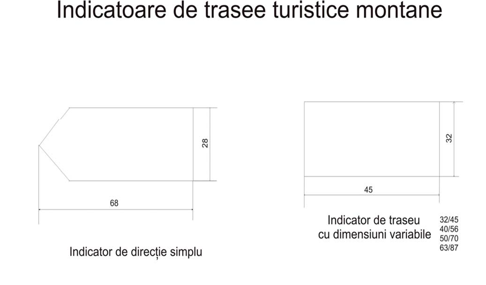
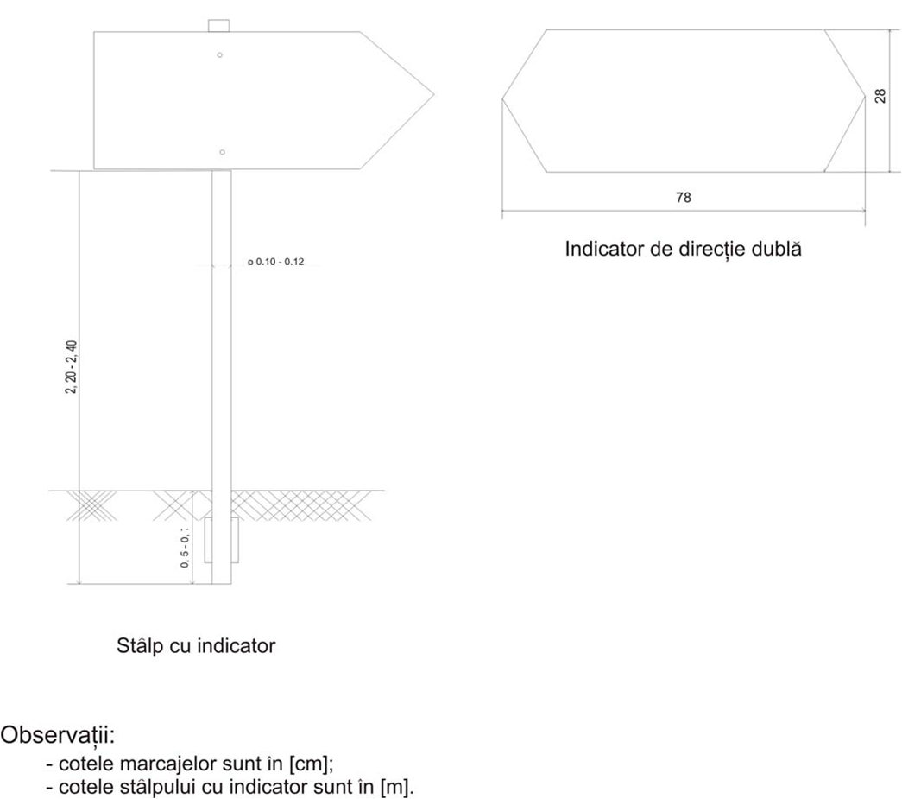
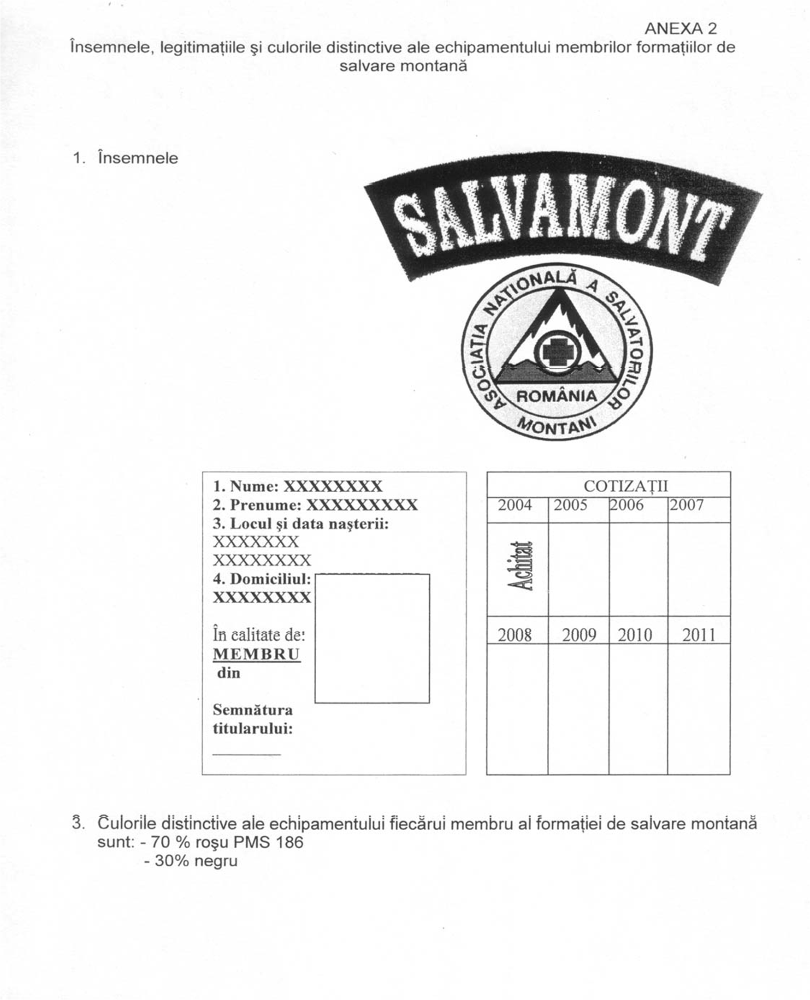

ASOCIATIA NATIONALA A SALVATORILOR MONTANI DIN ROMANIA
PROCEDURI ȘI TEHNICI DE BAZĂ ÎN SALVAREA MONTANĂ
LEGE nr. 229 din 23 mai 2003
privind aprobarea Ordonantei Guvernului nr. 5/2003 pentru modificarea art. 33 din
Ordonanta Guvernului nr. 58/1998 privind organizarea si desfasurarea activitatii de turism
in Romania
EMITENT: PARLAMENTUL
PUBLICAT ÎN: MONITORUL OFICIAL nr. 365 din 29 mai 2003
Data intrarii in vigoare:
29 Mai 2003
Art. 33.
(2) Consiliile locale pe a cãror raza administrativ-teritorialã exista partii de schi organizeazã,
pana la data de 30 septembrie 2003, servicii publice locale "Salvamont".
- Tehnica pioletului si mersul pe zapada
- Amenajarea locurilor de asigurare (amarajelor)
-Deplasarea în teren pe schiuri de tură
-Organizarea acţiunilor de salvare pe pârtiile de schi amenajate
-Legarea in coarda ,mersul concomitent si asigurarea la piolet
1
GUVERNUL ROMÂNIEI
HOTĂRÂRE
pentru aprobarea Normelor privind prevenirea accidentelor montane şi
organizarea activităţii de salvare în munţi
În temeiul prevederilor art. 108 alin. (1) din Constituţia României, republicată
şi ale art. 33 alin. (7) din Ordonanţa Guvernului nr. 58/1998 privind organizarea şi
desfăşurarea activităţii de turism în România, aprobată cu modificări şi completări
prin Legea nr. 755/2001, cu modificările ulterioare,
Guvernul României adoptă prezenta hotărâre.
Art. 1. - Se aprobă Normele privind prevenirea accidentelor montane şi
organizarea activităţii de salvare în munţi, prevăzute în anexa care face parte
integrantă din prezenta hotărâre.
Art. 2. – (1) Prezenta hotărâre intră în vigoare după 90 zile de la publicarea în
Monitorul Oficial al României, Partea I.
(2) La data intrării în vigoare a prezentei hotărâri, Hotărârea Guvernului nr.
77/2003 privind instituirea unor măsuri pentru prevenirea accidentelor montane şi
organizarea activităţii de salvare în munţi, publicată în Monitorul Oficial al
României, Partea I, nr. 91 din 13 februarie 2003, precum şi orice altă dispoziţie
contrară se abrogă.
PRIM – MINISTRU
CĂLIN POPESCU - TĂRICEANU
2
ANEXA
NORME PRIVIND PREVENIREA ACCIDENTELOR MONTANE ŞI
ORGANIZAREA ACTIVITĂŢII DE SALVARE ÎN MUNŢI
Capitolul 1
Organizarea activităţii de salvare în munţi
Art. 1. – Consiliile judeţene şi consiliile locale în a căror rază administrativteritorială
se află trasee montane şi/sau pârtii de schi au obligaţia de a organiza, în
condiţiile legii, servicii publice judeţene şi locale „SALVAMONT”, denumite în
continuare SALVAMONT.
Art. 2. - (1) Activitatea SALVAMONT în munţi cuprinde patrularea
preventivă, asigurarea permanenţei la bazele de salvare montană, căutarea persoanei
dispărute, acordarea primului ajutor medical în caz de accidentare şi transportarea
accidentatului sau a bolnavului la prima unitate sanitară.
(2) Activitatea SALVAMONT se desfăşoară de persoane calificate ca salvatori
montani.
Art. 3. - SALVAMONT-ul judeţean asigură:
a) coordonarea din punct de vedere administrativ şi organizatoric a activităţii
de salvare montană în judeţ;
b) organizarea şi desfăşurarea acţiunilor de prevenire şi salvare;
c) întocmirea propunerilor pentru omologarea sau desfiinţarea unor trasee
turistice montane;
d) coordonarea şi supravegherea activităţii de amenajare, întreţinere şi
reabilitare a traseelor turistice montane din judeţ;
e) preluarea apelurilor de urgenţă privind accidentele montane şi transmiterea
acestora la şefii echipelor de salvare montană sau la înlocuitorii acestora;
f) organizarea bazelor de salvare montană;
g) permanenţa la bazele de salvare montană;
h) participarea salvatorilor montani, la formele de pregătire profesională
organizate de Asociaţia Naţională a Salvatorilor Montani din România, denumită în
continuare ANSMR;
i) îndeplinirea oricăror alte atribuţii legate de activitatea de salvare montană
prevăzute de legislaţia în vigoare sau stabilite prin hotărâre a consiliului judeţean.
Art. 4. - SALVAMONT-ul local asigură:
a) coordonarea din punct de vedere administrativ şi organizatoric a activităţii
de salvare montană la nivel local;
b) organizarea şi desfăşurarea acţiunilor de prevenire şi salvare;
c) preluarea apelurilor de urgenţă privind accidentele montane şi transmiterea
acestora la şefii echipelor de salvare montană sau la înlocuitorii acestora;
d) organizarea bazelor de salvare montană;
3
e) permanenţa la bazele de salvare montană;
f) participarea salvatorilor montani, la formele de pregătire profesională
organizate de ANSMR;
g) răspunde solicitărilor SALVAMONT-ului judeţean;
h) îndeplinirea oricăror alte atribuţii în ceea ce priveşte salvarea montană
prevăzute de legislaţia în vigoare sau stabilite prin hotărâre a consiliului judeţean,
respectiv local.
Art. 5. - SALVAMONT-ul judeţean şi local îşi constituie echipele de salvare
montană, astfel:
a) prin încheierea de contracte individuale de muncă sau contracte de
voluntariat cu salvatori montani calificaţi;
b) prin încheierea de contracte de prestări servicii cu societăţi civile
profesionale de salvare montană sau cu organizaţii neguvernamentale care au ca scop
salvarea montană şi care pun la dispoziţie echipa sau echipele necesare activităţii
SALVAMONT;
Art. 6. - (1) SALVAMONT-ul poate avea una sau mai multe echipe de
salvare montană.
(2) Numărul echipelor de salvare montană este stabilit prin hotărâre a
consiliului judeţean sau local, după caz, cu consultarea ANSMR, în funcţie de
caracteristicile zonei montane, de afluenţa turiştilor, schiorilor şi alpiniştilor în zona
montană respectivă.
(3) Bazele de salvare montană sunt deservite de echipele de salvatori montani
şi sunt conduse de câte un şef de bază. Şeful bazei de salvare montană are ca atributie
preluarea apelurilor de urgenţă privind accidentele montane şi transmiterea acestora
la şefii echipelor de salvare montană sau la înlocuitorii acestora. El îşi numeşte
înlocuitorii care preiau atribuţiile acestuia în cazul indisponibilităţii titularului.
(4) Echipa de salvare montană este alcătuită din minimum 6 salvatori montani
calificaţi.
(5) Fiecare echipă de salvare montană este condusă de un şef de echipă ales de
membrii acesteia. Şeful echipei are sarcina de a organiza patrularea preventivă, de a
mobiliza echipa de salvare montană pentru intervenţie în timpul cel mai scurt de la
primirea solicitării, de a coordona activitatea de intervenţie şi de a instrui permanent
echipa de salvare montană. Şeful echipei de salvare montană îşi numeşte înlocuitorii
care preiau atribuţiile acestuia în cazul indisponibilităţii titularului.
Art. 7. - Echipa de salvare montană are următoarele atribuţii principale:
a) deplasarea de urgenţă la locul solicitat, salvarea accidentatului şi/sau a
bolnavului, acordarea primului ajutor medical şi transportarea acestuia pentru a fi
preluat de personalul medical de specialitate;
b) patrularea preventivă în zonele montane cu flux turistic mare şi grad de
periculozitate ridicat, precum şi în staţiunile turistice montane unde se practică intens
sporturile de iarnă;
c) orice alte sarcini trasate de conducătorul ierarhic.
Art. 8. - (1) Bazele de salvare montană sunt dotate de către consiliul judeţean
sau local, după caz, cu instrumentar medical, medicamente, materiale sanitare,
4
echipament şi materiale de intervenţie, salvare şi transport al accidentatului şi/sau al
bolnavului, conform baremurilor minime prevăzute la pct. 1-2 din anexa nr.1.
(2) Şeful bazei de salvare montană răspunde de folosirea şi de păstrarea acestor
materiale.
(3) Fiecare salvator montan este dotat de către consiliul judeţean sau local, după
caz, cu echipament şi trusă de prim ajutor, conform baremurilor minime prevăzute la
pct. 4-5 din anexa nr. 1.
(4) Baremurile prevăzute la alin. (1) şi (3) sunt stabilite si pot fi suplimentate
prin decizia ANSMR.
Art. 9. - Finanţarea SALVAMONT-ului judeţean sau local, inclusiv dotarea cu
instrumente medicale, medicamente, materiale sanitare, echipament şi materiale de
intervenţie, salvare şi transport necesare desfăşurării activităţii, se face din bugetele
proprii ale judeţelor sau din bugetele locale, după caz.
Art. 10. - Instruirea medicală a salvatorilor montani se asigură de personalul
medical specializat al ANSMR iar certificarea se acordă de Centrul Naţional de
Certificare.
Art. 11. – Legitimaţiile salvatorilor montani, precum şi însemnele şi culorile
distinctive echipamentelor acestora, prevăzute în anexa nr. 2, sunt unice pe întregul
teritoriul României şi sunt stabilite de către ANSMR.
Art. 12. - La acţiunile de patrulare preventivă sau la intervenţiile cu un grad
redus de complexitate pot participa ca voluntari şi alte persoane care au calitatea de
salvator montan, cu acordul şefului echipei de salvare montană, care va ţine o
evidenţă a acestora.
Art. 13. - În cazul accidentelor în munţi, echipele de salvare montană apelează
serviciul de ambulanţă, care are obligaţia de a prelua de la acesta accidentaţii care
necesită spitalizare.
Art. 14. – (1) Salvatorii montani care au încheiat contracte individuale de
muncă sau contracte de voluntariat şi care participă la activităţile de prevenire a
accidentelor, de patrulare preventivă, salvare, pregătire şi perfecţionare, pot fi scoşi
de la locul de muncă pe durata desfăşurării acestor activităţi, prin negociere între
consiliile judeţene sau locale, după caz, şi unităţile unde aceste persoane sunt
încadrate.
(2) Pentru perioada în care desfăşoară una din activităţile prevăzute la alin. (1)
salvatorii montani beneficiază de salariul mediu pe economie, asigurat de la bugetele
consiliilor locale şi/sau judeţene, precum şi de menţinerea calităţii de salariat la
unităţile unde sunt încadrate.
Art. 15. - (1) Pe perioada participării la activităţile de patrulare şi/sau de
salvare în munţi, salvatorii montani beneficiază de o indemnizaţie de periculozitate
care se stabileşte prin hotărâre a consiliului judeţean sau local, după caz, în raport cu
riscurile şi cu condiţiile naturale specifice, precum şi de decontarea cheltuielilor de
cazare şi transport.
(2) Pe perioada participării la activităţile prevăzute la alin. (1), precum şi la
formele de pregătire profesională a salvatorilor montani, aceştia beneficiază de o
indemnizaţie de hrană echivalentă cu baremul de hrană al sportivilor de performanţă.
5
Art. 16. - Operatorii economici din turism asigură echipelor de salvare
montană prioritate la utilizarea mijloacelor de transport pe cablu şi la serviciile de
cazare şi alimentaţie, pe perioada în care acestea desfăşoară acţiuni de patrulare
preventivă şi/sau de salvare în munţi.
Art. 17. - (1) SALVAMONT-ul beneficiază de o frecvenţă radio de urgenţă
naţională, care este pusă la dispoziţie în mod gratuit, precum şi de o pereche de
frecvenţe de lucru pe repetor pentru probleme de organizare şi cooperare în munţi,
care sunt asigurate gratuit.
Art. 18. - (1) Salvatorii montani selectaţi în echipele de salvare montană
încheie asigurări pentru răspundere civilă profesională, asigurări de viaţă şi/sau
pentru accidente, în condiţiile legii.
(2) Contravaloarea primelor de asigurare a salvatorilor montani selectaţi în
echipele de salvare montană în condiţiile art. 5 lit. a), este achitată de consiliile
judeţene sau locale, după caz.
(3) Contravaloarea primelor de asigurare a salvatorilor montani selectaţi în
echipele de salvare montană în condiţiile art. 5 lit. b), este achitată de angajator.
Art. 19. - (1) ANSMR are, în domeniul prevenirii accidentelor montane şi
organizării activităţii de salvare în munţi, următoarele atribuţii:
a) coordonează din punct de vedere tehnic activitatea de salvare montană din
întreaga ţară;
b) emite norme tehnice obligatorii în activitatea de salvare montană;
c) organizează examenul de atestare în profesia de salvator montan;
d) elaborează şi organizează programe de pregătire profesională a salvatorilor
montani;
e) organizează examenele de reconfirmare a dreptului de liberă practică în
profesia de salvator montan;
f) conferă şi ridică dreptul de liberă practică în profesia de salvator montan;
g) aplică sancţiuni disciplinare membrilor săi, potrivit Regulamentului de
organizare şi funcţionare propriu;
h) organizează echipe speciale de salvatori montani;
i) organizează Dispeceratul Naţional Salvamont;
j) îndeplineşte orice alte atribuţii prevăzute de statutul său.
(2) ANSMR este recunoscută ca asociaţie de utilitate publică.
Art. 20. - Poate deveni salvator montan orice persoană care îndeplineşte
cumulativ următoarele condiţii:
a) are vârsta de minimum 18 ani;
b) nu are antecedente penale;
c) are o conduită demnă şi morală;
d) are o stare de sănătate corespunzătoare confirmată prin fişa medicală;
e) a parcurs formele de pregătire profesională şi a efectuat stagiul de
aspirantură, stabilite de ANSMR;
f) a promovat examenul de atestare în profesie organizat de Asociaţia
Naţională a Salvatorilor Montani din România.
Art. 21. - (1) Salvatorii montani au obligaţia de a participa, la intervale
stabilite de ANSMR, la examene de reconfirmare a dreptului de liberă practică în
6
profesia de salvator montan, precum şi la examene de verificare a potenţialului
echipelor de salvare montană.
(2) Neparticiparea sau nepromovarea examenelor prevăzute la alin. (1) duce la
pierderea dreptului de liberă practică în profesia de salvator montan.
Art. 22. - ANSMR poate stabili, prin norme proprii, şi alte situaţii care
determină pierderea dreptului de liberă practică în profesia de salvator montan.
Capitolul 2
Prevenirea accidentelor montane
Secţiunea I
Omologarea şi întreţinerea traseelor turistice montane
Art. 23. - Traseul turistic montan trebuie să îndeplinească următoarele
condiţii:
a) să prezinte interes şi să facă legătura între două sau mai multe obiective;
b) să fie accesibil atât vara, cât şi iarna, scop în care se vor evita, atât cât este
posibil, versanţii sau crestele expuse la viscole ori la curenţi puternici de aer. În
condiţii speciale de altitudine, intemperii sau de teren accidentat, traseul turistic
montan care prezintă pericole poate fi interzis accesului turistic;
c) să evite zonele favorabile producerii avalanşelor de zăpadă, alunecărilor de
teren sau căderilor masive de pietre;
d) să nu necesite construirea prea multor podeţe, balustrade, trepte şi să
permită îmbunătăţirea potecii - lărgirea ei, acoperirea porţiunilor surpate;
e) să nu traverseze zone întinse de grohotişuri sau de mlaştini.
Art. 24. - Traseele turistice montane sunt omologate în baza criteriilor
prevăzute în anexa nr. 3.
Art. 25. – (1) În funcţie de desfăşurarea pe teren a traseelor turistice montane,
se folosesc următoarele sisteme de marcaje:
a) marcaje în grup, care au iniţial un parcurs comun, după care semnele se
ramifică succesiv pe diferite trasee;
b) marcaje centrifugale, cu semne care se despart chiar de la pornire pe trasee
diferite;
c) marcaje în circuit, care au acelaşi punct de plecare şi de sosire;
d) marcaje cu ax comun, care au un traseu principal, numit şi magistrală, în
general traseu de creastă, din care se ramifică sau către care se dirijează mai multe
trasee secundare;
e) marcaje pentru traseele dus-întors.
(2) Pentru marcarea traseelor turistice montane şi pentru asigurarea
uniformităţii şi respectării inscripţionării internaţionale se utilizează semnele
prevăzute în anexa nr. 4.
(3) Indicatoarele de trasee turistice montane şi standardizarea acestora sunt
prevăzute în anexa nr. 5.
7
Art. 26. - Documentaţiile pentru omologarea şi amenajarea traseelor turistice
montane noi şi pentru modificarea traseelor existente se întocmesc de către consiliile
judeţene sau locale, după caz, împreună cu ANSMR şi cuprind următoarele elemente:
a) date de bază - traseul, unitatea montană, judeţul sau judeţele în a căror rază
se află traseul;
b) date privind execuţia şi întreţinerea marcajului şi a traseului;
c) harta traseului la una dintre scările: 1:50.000, 1:25.000 sau 1:20.000.
Art. 27. - (1) Certificatul de omologare al traseului turistic montan se
eliberează de către Autoritatea Naţională pentru Turism, potrivit legii, în baza
documentaţiilor prevăzute la art. 26.
(2) Modelul certificatului de omologare a traseelor turistice montane este
prevăzut in anexa nr. 6.
Art. 28. - Condiţiile materiale şi financiare necesare lucrărilor de amenajare şi
întreţinere a traseelor turistice montane se asigură de consiliile judeţene si locale sub
a căror autoritate funcţionează SALVAMONT-ul.
Art. 29. - Pentru întreţinerea traseelor turistice montane sunt obligatorii
următoarele lucrări:
a) periodic se curăţă, se repară şi se îmbunătăţesc potecile, taluzurile,
sectoarele protejate de balustrade, treptele, cablurile şi lanţurile de sprijin, copertinele
şi punţile peste ape şi se înlătură toate obstacolele care barează trecerea;
b) în fiecare primăvară se completează şi se înlocuiesc stâlpii, săgeţile,
indicatoarele, inscripţionările şi semnele de marcaj deteriorate, distruse sau
descompletate;
c) stâlpii de marcaj din zonele de avalanşe se schimbă pe teren ferit, iar
marcajul se înlocuieşte pe aceste porţiuni cu semne pe sol, acolo unde este posibil.
Secţiunea II
Măsuri de prevenire a accidentelor montane
Art. 30. – (1) Pentru adăpostirea persoanelor aflate în dificultate, surprinse de
schimbări meteorologice bruşte în zone montane izolate, departe de cabane, se
construiesc, se amenajează sau se reamenajează refugii.
(2) Lucrările de construire, amenajare sau reamenajare a refugiilor, bazelor de
salvare montană şi a punctelor sanitare se execută de către consiliile judeţene şi
locale în a căror rază administrativ-teritorială se află, sub directa supraveghere a
SALVAMONT-ului.
(3) Fondurile necesare pentru amenajarea, reamenajarea si construirea
refugiilor, a bazelor de salvare montană şi a punctelor de prim ajutor se asigură din
bugetele proprii ale judeţelor şi din bugetele locale sub a căror autoritate
funcţionează SALVAMONT-ul.
Art. 31. – (1) Persoanele fizice şi juridice autorizate care administrează cabane
montane au următoarele obligaţii principale:
a) să doteze cabanele cu semnalizatoare luminoase pentru orientarea turiştilor
în timpul nopţii şi în condiţii meteorologice care prezintă pericol de accidentare; post
8
telefonic fix sau mobil şi staţie de emisie-recepţie radio; mijloace de avertizare
sonore la cabanele de creastă care vor fi folosite în mod intermitent pentru orientarea
turiştilor în timpul unor condiţii meteorologice deosebite precum şi ca semnal de
alarmă în caz de accidente, semnal stabilit convenţional între cabanieri, echipele de
salvare montană, unităţile din apropiere ale Ministerului Apărării Naţionale şi
Ministerului Administraţiei şi Internelor şi staţiile meteorologice;
b) sa doteze cabanele cu echipament, materiale, instrumente şi medicamente
identice celor cu care sunt dotate bazele de salvare montana;
c) să monteze la cabane panouri cu traseele din zonă, diferite pentru sezonul de
vară şi pentru cel de iarnă, cu marcarea distinctivă a porţiunilor periculoase şi a
refugiilor care pot fi folosite;
d) să întocmească registrul de trafic al turiştilor la cabană;
e) să afişeze zilnic buletinul meteorologic;
f) să informeze turiştii asupra celor mai convenabile căi de acces, în funcţie de
condiţiile meteorologice ale zilei.
(2) Nominalizarea cabanelor care trebuie dotate conform alin. (1) lit. b) se face
prin hotarare a consiliului judetean sau local, dupa caz, la propunerea ANSMR.
Art. 32. - Persoanele fizice şi juridice autorizate care organizează acţiuni
turistice în munţi, au următoarele obligaţii principale:
a) să utilizeze ghizi montani calificaţi, dotaţi cu mijloace de comunicaţie,
respectiv telefon mobil şi/sau staţie radio de comunicaţie, capabile să asigure legătura
cu punctele de alarmare ale echipelor de salvare montană;
b) să informeze turiştii asupra condiţiilor meteorologice ale zilei;
c) să nu permită turiştilor echipaţi necorespunzător să participe la parcurgerea
traseelor turistice montane;
d) să utilizeze variantele de trasee turistice montane adecvate componenţei
grupului şi condiţiilor meteorologice.
Art. 33. - Persoanele fizice care parcurg trasee turistice montane, au
următoarele obligaţii:
a) să utilizeze echipament adecvat;
b) să utilizeze numai trasee turistice montane marcate.
Capitolul 3
Răspunderi şi sancţiuni
Art. 34. - (1) Constituie contravenţii următoarele fapte:
a) neorganizarea SALVAMONT-ului de către consiliile judeţene şi consiliile
locale aferente staţiunilor turistice montane, pe a căror rază administrativ-teritorială
se află trasee turistice montane şi/sau pârtii de schi;
b) neefectuarea de către consiliile judeţene şi consiliile locale, după caz, a
lucrărilor de amenajare şi întreţinere, a traseelor turistice montane, de construire,
amenajare sau reamenajare a refugiilor şi a bazelor de salvare montană;
c) nerespectarea prevederilor art. 8 alin. (1) şi (3);
d) nerespectarea prevederilor art. 26;
9
e) nerespectarea de către persoanele juridice şi persoanele fizice autorizate a
obligaţiilor prevăzute la art. 31 şi art. 32;
f) nerespectarea prevederilor art. 33.
(2) Contravenţiile prevăzute la alin. (1) se sancţionează astfel:
a) cu amendă de la 10.000 RON la 20.000 RON, faptele prevăzute la lit. a) şi
b);
b) cu amendă de la 2.000 RON la 5.000 RON, faptele prevăzute la lit. c) şi d)
şi e);
c) cu amendă de la 500 RON la 1.000 RON, faptele prevăzute la lit. f).
(3) Constatarea contravenţiilor şi aplicarea sancţiunilor prevăzute la alin.(2) lit.
a) şi b) se fac de personalul cu atribuţii de control al Autorităţii Naţionale pentru
Turism.
(4) Constatarea contravenţiilor şi aplicarea sancţiunilor prevăzute la alin.(2) lit.
c) se face de personalul cu atribuţii de control al Ministerului Administraţiei şi
Internelor.
(5) Contravenientul persoană fizică sau juridică poate achita în termen de cel
mult 48 de ore de la data încheierii procesului verbal de contatare a contravenţiei ori,
după caz, de la data comunicării acestuia, jumătate din minimul amenzii aplicate,
potrivit legii.
Capitolul 4
Dispoziţii finale
Art. 35. - Ministerul Sănătăţii asigură, prin direcţiile judeţene de sănătate
publică, convocarea şi instruirea anuală a cabanierilor nominalizaţi potrivit
prevederilor art. 15 alin. (2) şi a ghizilor montani, pentru acordarea primului ajutor
medical şi folosirea medicamentelor din dotarea cabanelor turistice.
Art. 36. – Anexele nr. 1-6 fac parte integrantă din prezentele norme.
la Norme
BAREMURI MINIME
de dotare a bazelor de salvare montană şi a salvatorilor montani
1. Baremul minim de dotare a bazelor de salvare montană cu echipament şi
materiale pentru intervenţie, salvare şi transport al accidentatului şi/sau
bolnavului:
- akijă (targă pentru transport iarna) 2 buc.
- targă cu roţi 2 buc.
- tărgi speciale 2 buc.
- targă alpină pentru vară 2 buc.
- dispozitive de transport în abrupt 2 buc.
- troliu 1 buc.
- sonde avalanşă 10 buc.
- corzi alpine diferite 4 buc. x 80 m
- carabiniere 40 buc.
- cordeline diferite 4 buc. x 50 m
- aparatură de iluminat 4 buc.
- aparatură pentru avertizare 1 buc.
- aparatură de căutare în avalanşă 1 buc.
- saci de dormit 6 buc.
- saltele izopren 6 buc.
- corturi 2 buc.
- rucsac 1 buc.
- surse de încălzire (primusuri) 2 buc.
- câini de căutare 1
- mijloace de transport auto specifice (scutere de zăpadă,
ambulanţă, maşină de teren), opţional 1 buc.
- ciocane alpinism 2 buc.
- pitoane diferite 40 buc.
În funcţie de complexitatea zonei de activitate, la dotarea generală se pot
adăuga şi alte materiale specifice, conform normelor emise de ANSMR.
2. Baremul minim de dotare a bazelor de salvare montană cu
instrumentar medical de prim ajutor, cu materiale sanitare şi cu medicamentele
care se acordă gratuit accidentaţilor şi/sau bolnavilor:
A. Instrumentar medical de prim ajutor:
- pipetă 1 buc.
- foarfece drept 1 buc.
- pensă Kocher 1 buc.
- pensă Pean dreaptă 1 buc.
- pipă Guedel 1 buc.
- atele Krammer de diferite mărimi, atele gonflabile sau
alte materiale pentru imobilizări fracturi, seturi 4 buc.
- "batista salvatorului" sau alte dispozitive ajutătoare
pentru respiraţia gură la gură 1 buc.
- cutie din metal - 20/12 cm 1 buc.
- coliere 2 buc.
B. Materiale sanitare:
- apă oxigenată 200 gr
- alcool sanitar 200 gr
- alcool iodat 5% 200 gr
- comprese sterile, cutii 2 buc.
- feşi 5/8 4 buc.
- feşi 10/10 4 buc.
- vată medicinală 200 gr
- garou 1 m
- role de leucoplast 1 buc.
- pansament cu rivanol 2 pachete
- pansament individual 2 buc.
- tifon 1 m
C. Medicamente:
- algocalmin fiole 5 buc.
- algocalmin tablete 20 buc.
- aspirină tablete 20 buc.
- bioxiteracor spray 1 flacon
- colir oftalmologic antiseptic 2 flacoane
- nor spray 1 flacon
- tetraciclină unguent 1 tub
- unguent cu antibiotice 1 tub
- saprosan pulvis 1 flacon
- muşeţel (plicuri) 1 pungă
- nitroglicerină 1 flacon
- dicarbocalm 1 cutie
- antinevralgice 20 tablete
- talazol 1 flacon
- clorocalcin 1 flacon
- bixtonim 2 flacoane
- piramidon 30 tablete
- emetiral tablete 1 flacon
- revulsin 1 tub
- ramnolax 2 flacoane
- cărbune medicinal 1 cutie
- paracetamol 20 tablete
- codeină fosfatică 1 flacon
- scobutil 1 flacon
- ulcerotrat 20 tablete
- loperamid 20 tablete
- furazolidon 2 flacoane
- romergan 10 tablete
- diazepam 10 tablete
- laxative comprimate 10 tablete
- hiposerpil 10 comprimate
- miofilin 10 tablete
- milfidipin 10 tablete
- propanolol 10 tablete
- ampicilină 40 capsule
- biseptol 20 tablete
- metoclopramid 4 fiole
- papaverină 4 fiole
- scobutil compus 4 fiole
- fortral 2 fiole
- atropină 2 fiole
- dogoxin 2 fiole
- furosemid 2 fiole
- adrenalină 3 fiole
- efedrină 5% 3 fiole
- cofeină 4 fiole
- miofilin 4 fiole
- calciu bromat 2 fiole
- xilină 2% 6 fiole
- hemisuc de H 10 fiole
- diazepam 2 fiole
- hidrocortizon acetat 4 fiole
- glucoză 33% 4 fiole
- adrenostazin 4 fiole
- venostat 4 fiole
- ser antiviperin 2 fiole
- anatoxină tetanică 4 fiole
- talc 10 plicuri.
3. Baremul minim de dotare a fiecărui salvator montan cu echipament
individual şi materiale necesare pentru intervenţie, salvare şi transport al
accidentaţilor şi/sau bolnavilor:
- bocanci tip alpin de iarnă şi de vară;
13
- costum alpin format din pantalon de vară, bluză de vară, pelerină de ploaie,
pantalon de iarnă, bluză vătuită, şosete de lână, suprapantalon, vestă vătuită,
parazăpezi şi hanorac impermeabil;
- bocanci de schi;
- costum de schi;
- căciuliţă de schi;
- mănuşi de protecţie;
- schiuri complete formate din schiuri, beţe de schi, legături alpine, legături de tură
şi piei de focă;
- ochelari de protecţie;
- cască de protecţie;
- vestă de siguranţă;
- colţari;
- piolet;
- rucsac;
- aparatură de emisie-recepţie radio;
- telefon mobil;
- binoclu;
- trusă medicală individuală;
- lanternă cu baterii;
- briceag.
4. Baremul minim de dotare a fiecărui salvator montan cu instrumentar
sanitar de prim ajutor, materiale sanitare, medicamente şi trusă individuală de
prim ajutor medical:
A. Instrumentar medical de prim ajutor:
- pipetă 2 buc.
- foarfece drept 1 buc.
- pensă Kocher 1 buc.
- pensă Pean dreaptă 1 buc.
- pipă Guedel 1 buc.
- atelă cervicală
- atele Krammer de diferite mărimi, atele gonflabile sau
alte materiale pentru imobilizări de fracturi, seturi 4 buc.
- "batista salvatorului" sau alte dispozitive ajutătoare
pentru respiraţia gură la gură 1 buc.
- cutie din metal - 20/12 cm 1 buc.
- coliere 2 buc.
B. Materiale sanitare:
- apă oxigenată 200 gr
- alcool sanitar 200 gr
- alcool iodat 5% 200 gr
- comprese sterile, cutii 2 buc.
14
- feşi 5/8 4 buc.
- feşi 10/10 4 buc.
- vată medicinală 200 gr
- garou 1 m
- role de leucoplast 1 buc.
- pansament cu rivanol 2 pachete
- pansament individual 2 buc.
- tifon 1 m
- mănuşi
- mănuşi chirurgicale
- folie izolantă, tip Sirius, pentru protejarea accidentatului 1 buc.
- soluţii perfuzabile
C. Medicamente:
- algocalmin tablete 20 buc.
- aspirină tablete 20 buc.
- bioxiteracor spray 1 flacon
- colir oftalmologic antiseptic 1 flacon
- nor spray 1 flacon
- paracetamol tablete 20 buc.
- unguent cu antibiotice 1 tub
- scobutil 20 tablete
- codeinfosfat 10 tablete
- decongestionant nazal 1 flacon
- loperamid 10 tablete
- metoclopramid 10 tablete
- cărbune medicinal 10 tablete
- proculin picături 1 flacon
- saprosan pulvis 1 flacon
- muşeţel (plicuri) 1 pungă
- nitroglicerină 1 flacon
- trombină uscată 1 flacon
ANEXA nr. 3
la Norme
CRITERIILE
de omologare a traseelor turistice montane
Criteriile de omologare a traseelor turistice montane sunt:
a) Timpul de mers se înscrie în fişa tehnică şi pe indicatoare, exprimat în ore,
fracţiuni de oră, mai rar în minute şi se va calcula astfel:
- pe teren plat şi pe pante mici: 4 km/h;
- în urcuş, pe potecă amenajată :350 m diferenţă de nivel/h;
- în urcuş, pe potecă neamenajată :250 m diferenţă de nivel/h;
- în coborâre, pe potecă amenajată: 450 m diferenţă de nivel/h;
- în coborâre, pe potecă neamenajată: 400 m diferenţă de nivel/h.
La o oră de mers se adaugă 10 minute necesare odihnei. Distanţa în kilometri se
utilizează în calcul numai pe traseele cu peste 80% de mers pe plat şi cu maximum
20% de mers pe pantă cu înclinare de maximum 10 grade.
Pentru calcularea distanţelor şi timpilor de mers se efectuează măsurători pe teren
şi pe hartă.
b) Sezonalitatea este criteriul pe baza căruia traseele turistice montane se împart
în trasee de primăvară şi de toamnă, trasee de vară şi trasee de iarnă.
c) Gradul de dificultate este criteriul pe baza căruia traseele turistice montane se
împart în:
- trasee cu grad de dificultate „uşor” au următoarele caracteristici: durata traseului
de până la 4 ore; diferenţa de nivel până la 500 m; efort fizic moderat care nu
necesită pregătire fizică specială;
- trasee cu grad de dificultate „mediu” au următoarele caracteristici: durata
traseului 4 - 7 ore; diferenţa de nivel 500 - 1.000 m; efort fizic susţinut numai pe
unele etape ale traseului, necesită o condiţie fizică bună şi cunoştinţe de orientare;
- trasee cu grad de dificultate „dificil”, au următoarele caracteristici: durata
traseului 7-12 ore şi diferenţa de nivel peste 1000 m; efort fizic continuu şi intens,
necesită o foarte bună condiţie fizică şi antrenament premergător parcurgerii
traseului, precum şi cunoştinţe de orientare.
d) Nivelul de echipare solicitat drumeţilor este criteriul pe baza căruia traseele
turistice montane se împart în:
- trasee care nu necesită echipament special pentru parcurgerea lui; acest tip de
traseu se desfăşoară pe poteci amenajate, drumuri forestiere şi nu prezintă porţiuni
accidentate;echipament minim (pantof pentru sport cu talpa aderentă tip Vibram,
bluză de vânt, rucsac>25 litri )
- trasee care necesită echipament de drumeţie de complexitate medie; acest tip de
traseu se desfăşoară pe poteci cu porţiuni accidentate, grohotişuri, pante alunecoase
cu grad de înclinare mediu; echipament mediu (gheată/espadrilă cu talpa aderentă tip
Vibram, pantalon şi bluză impermeabile, rucsac>35 litri, beţe schi de tură)
- trasee care necesită echipament de drumeţie special şi complex; acest tip de
trasee se desfăşoară pe poteci accidentate, puţin conturate şi/sau pe porţiuni fără
potecă, cu pante abrupte care necesită uneori ajutorul mâinilor pentru ascensiune;
echipament complex (gheată tip alpin cu talpă aderentă tip Vibram, rucsac>35 litri,
pantalon şi bluză impermeabile, beţe schi de tură, materiale de alpinism, materiale
pentru bivuac .
ANEXA nr. 4
la Norme
SEMNELE
utilizate pentru marcarea traseelor turistice montane şi condiţiile de detaliu
tehnic pe care acestea trebuie să le îndeplinească pentru asigurarea
uniformităţii şi respectării inscripţionării internaţionale
Pentru marcarea traseelor turistice montane se utilizează următoarele semne:
a) banda verticală - pe fond alb - pentru marcarea traseelor principale, numite şi
magistrale, care sunt, de regulă, trasee de creastă;
b) crucea cu braţe egale - pe fond alb - pentru marcarea traseelor de legătură;
c) triunghiul echilateral - pe fond alb - şi punctul într-un cerc - pe fond alb - pentru
marcarea traseelor secundare;
d) punctul cu cercuri duble de culoare albă şi roşie pentru traseele dus-întors.
Culorile pentru semnele de marcaj sunt: roşu neon-cod 647949, galben neon –cod
647970 şi albastru neon-cod 647994, obligatoriu pe fond alb cod 648519.
Pentru asigurarea uniformităţii şi respectării inscripţionării internaţionale semnele
de marcaj vor îndeplini următoarele condiţii de detaliu tehnic:
a) se vor încadra într-un patrulater imaginar cu laturile de 16 - 20 cm;
b) benzile de culoare vor avea o lăţime de 6 cm, iar cele de culoare albă, de 5 cm
(5 + 6 + 5 = 16 cm);
c) triunghiul cu miezul de culoare va avea laturile de 10 cm, iar banda de culoare
albă, de 3 cm (3 + 10 + 3 = 16 cm);
d) punctul de culoare va avea diametrul de 10 cm, iar banda de culoare albă, o
lăţime de 3 cm (3 + 10 + 3 = 16 cm);
e) crucea de culoare va avea cele două benzi perpendiculare de 3 cm, iar banda de
culoare albă, de 5 cm (5 + 6 + 5 = 16 cm);
f) semnele de marcaj se vor aplica în ambele sensuri de circulaţie, la distanţe astfel
apreciate încât să fie uşor vizibile de la un semn la altul, perpendiculare pe direcţii de
mers şi la înălţimea de 1,5 - 2 m faţă de sol;
g) în golurile alpine şi în poienile foarte mari semnele de marcaj se vor face pe
stâlpi confecţionaţi din ţevi metalice; stâlpii vor fi vopsiţi mai întâi cu grund de
protecţie, apoi cu vopsea de culoare albă şi neagră, în dungi alternative de 30 cm
lăţime, vor fi prevăzuţi la partea inferioară cu gheare pentru fixarea în fundaţii de
ciment şi apoi, în pământ şi la partea superioară, cu o paletă pentru semnele de
marcaj;
h) pentru protecţia arborilor semnele de marcaj se vor aplica direct pe copaci, prin
vopsire, fiind interzisă fixarea în cuie a altor indicatoare;
i) în zonele stâncoase, greu accesibile, semnele de marcaj se vor aplica pe palete
metalice scurte sau pe lespezi plate din piatră, implantate în grămezi de pietre,
cimentate, cu o înălţime de 0,4 - 0,6 m;
ANEXA nr. 5
la Norme
INDICATOARELE
de trasee turistice montane şi standardizarea acestora
Indicatoarele de trasee turistice montane sunt:
a) indicatoarele de direcţie sunt: indicatoare de direcţie simple, care au o lungime
de 68 cm şi o lăţime de 28 cm, şi indicatoare de direcţie duble, care au o lungime de
78 cm şi o lăţime de 28 cm;
b) indicatoarele de traseu sunt cu dimensiuni variabile (32 cm/45 cm, 40 cm/56
cm, 50 cm/70 cm şi 63 cm/87 cm), în funcţie de volumul de informaţii pe care îl
conţin, şi sunt amplasate pe verticală sau pe orizontală, pe un picior sau pe două
picioare;
c) indicatoarele de documentare sunt cele care vor conţine informaţii despre
traseele turistice montane marcate şi principalele puncte de interes turistic din zona
pe care o prezintă.
Pe indicatoarele de la intrările şi ieşirile de pe traseu vor fi trecute şi dificultăţile
drumeţiei astfel:
- pericol de avalanşă;
- cornişă pe traseu;
- dificultăţi alpine (pasaje, săritori);
- condiţii meteo care pot influenţa substanţial parcursul;
- orientare dificilă;
- pantă mare şi alunecoasă;
d) tablele toponimice sunt indicatoare pentru lacuri, râuri, monumente ale naturii,
vârfuri de munte, şei importante, pentru alte obiective culturale şi de interes turistic.
Tablele toponimice vor fi realizate din plăci fibrolemnoase impermeabilizate sau din
fibre de sticlă, rezistente la intemperii, de dimensiunile 32 cm/45 cm, în culori
diferite pentru fiecare element prezentat, astfel:
- tablele toponimice inscripţionate cu litere de culoare albă pe fond de culoare
albastră sunt pentru lacuri şi râuri;
- tablele toponimice inscripţionate cu litere de culoare neagră pe fond de culoare
galbenă sunt pentru monumente ale naturii;
- tablele toponimice inscripţionate cu litere de culoare neagră pe fond de culoare
albă sunt pentru alte obiective de interes turistic.
Pentru standardizarea indicatoarelor de trasee turistice montane realizarea şi
implantarea lor se vor face cu respectarea următoarelor condiţii:
- stâlpii de marcaj pentru indicatoare vor avea dimensiunile de 2,20 m - 2,40 m
înălţime şi de 0,10 m - 0,12 m grosime; stâlpii se vor îngropa în fundaţii solide, la o
adâncime de 0,50 m - 0,70 m;
- paletele cu semnul de marcaj se vor orienta perpendicular pe direcţia de mers, iar
săgeţile, pe direcţia axului traseului;
- săgeţile indicatoare de direcţie vor menţiona obligatoriu obiectivul cel mai
apropiat, timpul de mers până la acesta şi semnul de marcaj;
- tablele indicatoare, care se vor instala în punctele de convergenţă (răspântie) a
mai multe trasee turistice montane, vor cuprinde obligatoriu următoarele informaţii
inscripţionate unele sub altele: semnele de marcaj, direcţiile de mers şi timpul, unele
indicaţii speciale (Drum periculos; Atenţie cad pietre.)
Locurile de începere a traseelor turistice montane, precum şi intersecţiile traseelor
marcate vor avea amplasate obligatoriu, în ambele sensuri, indicatoare confecţionate
din plăci fibrolemnoase impermeabilizate sau din fibră de sticlă.
ANEXA nr. 6
la Norme
MINISTERUL TRANSPORTURILOR,
CONSTRUCŢIILOR ŞI TURISMULUI
AUTORITATEA NAŢIONALĂ PENTRU
TURISM
CERTIFICAT DE OMOLOGARE
În temeiul Hotărârii Guvernului nr. / se omologhează traseul
turistic montan ………………………………..din judeţul/localitatea………………
Acest traseu turistic este amenajat şi întreţinut de Serviciul Public Judeţean
Salvamont, cu sprijinul Consiliului Judeţean şi are următoarele caracteristici:
Marcaj:
Durată:
Grad de dificultate:
Sezonalitate:
Nivel de echipare:
PREŞEDINTE,
DIRECTOR,
Nr………..Data…………



Având în vedere Referatul de aprobare nr. 170.539/F.U. din 23 aprilie 2013 al Direcţiei managementul ariilor naturale protejate,
în temeiul art. 18 alin. (4) din Ordonanţa de urgenţă a Guvernului nr. 57/2007 privind regimul ariilor naturale protejate, conservarea habitatelor naturale, a florei şi faunei sălbatice, aprobată cu modificări şi completări prin Legea nr. 49/2011, şi al art. 13 alin. (3) din Hotărârea Guvernului nr. 48/2013 privind organizarea şi funcţionarea Ministerului Mediului şi Schimbărilor Climatice şi pentru modificarea unor acte normative în domeniul mediului şi schimbărilor climatice,
ministrul mediului şi schimbărilor climatice emite următorul ordin:
Art. 1. - Se aproba Metodologia de atribuire a administrării şi a custodiei ariilor naturale protejate, prevăzută în anexa care face parte integrantă din prezentul ordin.
Art. 2. - Contractele de administrare şi convenţiile de Custodie încheiate până la intrarea în vigoare a prezentului ordin se modifică în vederea corelării cu legislaţia şi reglementările în vigoare, precum şi cu dispoziţiile prezentului ordin, după caz.
Art. 3. - Administratorii şi custozii desemnaţi anterior intrării în vigoare a prezentului ordin trebuie să prezinte autorităţii responsabile un raport de activitate detaliat în care să existe o situaţie comparativă a activităţii, de la un an la altul, începând cu obligaţiile asumate în dosarul de atribuire în administrare sau custodie, în termen de 6 luni de la intrarea în vigoare a prezentului ordin.
Art. 4. - La data intrării în vigoare a prezentului ordin, Ordinul ministrului mediului şi pădurilor nr. 1.948/2010 privind aprobarea Metodologiei de atribuire a administrării ariilor naturale protejate care necesită constituirea de structuri de administrare şi a Metodologiei de atribuire a custodiei ariilor naturale protejate care nu necesită constituirea de structuri de administrare, publicat în Monitorul Oficial al României, Partea I, nr. 816 din 7 decembrie 2010, se abrogă.
Art. 5. - Prezentul ordin se publică în Monitorul Oficial al României, Partea I.
Ministrul mediului şi schimbărilor climatice,
Rovana Plumb
Bucureşti, 12 iunie 2013.
Nr. 1.470.
ANEXĂ
METODOLOGIE
de atribuire a administrării si a custodiei ariilor naturale protejate
CAPITOLUL I
Atribuirea administrării ariilor naturale protejate
Art. 1. - (1) Ariile naturale protejate care necesită structuri de administrare proprii se atribuie în administrare de către autoritatea publică centrală pentru protecţia mediului, denumită în continuareautoritatea responsabilă, pe bază de contract de administrare.
(2) În vederea încheierii contractelor de administrare pentru una sau mai multe arii naturale protejate, autoritatea responsabilă organizează două sesiuni de atribuire pe an, câte una în fiecare semestru.
(3) Administratorul desemnat transmite autorităţii responsabile şi structurilor din subordine, conform competenţelor teritoriale, un raport anual de activitate, până la sfârşitul lunii martie a anului viitor, conform structurii prezentate în anexa nr. 4.
Art. 2. - (1) În vederea atribuirii în administrare a ariilor naturale protejate care necesită constituirea de structuri de administrare, autoritatea responsabilă revizuieşte periodic lista ariilor naturale protejate care necesită structuri proprii de administrare prin ordin al conducătorului autorităţii responsabile, la propunerea direcţiei de specialitate, cu respectarea legislaţiei în vigoare.
(2) În cazul suprapunerii ariilor naturale protejate care nu necesită structuri proprii de administrare cu ariile naturale protejate care necesită structuri proprii de administrare, administrarea se asigură de structurile de administrare ale acestora, cu realizarea unui singur plan de management integrat, ţinând cont de respectarea categoriei celei mai restrictive arii naturale protejate în zonele de suprapunere.
(3) În cazul rezervaţiilor ştiinţifice, rezervaţiilor naturale, monumentelor naturii, siturilor de importanţă comunitară, ariilor speciale de conservare, ariilor de protecţie specială avifaunistică şi al celorlalte bunuri ale patrimoniului natural supuse unui regim special de protecţie, care sunt cuprinse total sau parţial în perimetrele rezervaţiilor biosferei, ale parcurilor naţionale şi naturale, administrarea se asigură de structurile de administrare ale acestora din urmă.
(4) Până la atribuirea în administrare, responsabilitatea managementului acestor categorii de arii naturale protejate revine autorităţii responsabile, potrivit legislaţiei în vigoare.
Art. 3. - În vederea atribuirii administrării uneia sau mai multor arii naturale protejate, persoanele juridice interesate depun la sediul autorităţii responsabile un dosar de candidatură conform art. 9, pentru fiecare arie naturală protejată solicitată, în conformitate cu lista ariilor naturale protejate care pot fi atribuite în administrare, aprobată de autoritatea responsabilă.
Art. 4. - Etapele sesiunii de atribuire în administrare sunt:
a) afişarea la sediul autorităţii responsabile şi pe pagina proprie de internet a anunţului de lansare a sesiunii de atribuire, care conţine lista ariilor naturale protejate care pot fi atribuite în administrare;
b) depunerea dosarelor de candidatură în format hârtie şi suport electronic în termen de 30 de zile calendaristice de la data afişării listei;
c) transmiterea de către autoritatea responsabilă a dosarelor de candidatură în format electronic în termen de două zile lucrătoare de la termenul-limită de depunere a dosarelor de candidatura, către membrii Comisiei de evaluare;
d) întrunirea Comisiei de evaluare şi evaluarea dosarelor de candidatură;
e) întocmirea rapoartelor de evaluare de către Comisia de evaluare şi afişarea pe site-ul autorităţii responsabile a punctajelor acordate dosarelor de candidatură;
f) întrunirea Comisiei de evaluare în vederea susţinerii dosarului, stabilită la art. 6 alin. (6);
g) depunerea contestaţiilor pentru evaluarea dosarelor;
h) întrunirea Comisiei de contestaţii în vederea analizării şi soluţionării contestaţiilor;
i) întocmirea raportului de evaluare de către Comisia de contestaţii şi afişarea pe site-ul autorităţii responsabile a punctajelor acordate dosarelor de candidatură pentru care s-au depus contestaţii;
j) întocmirea raportului final de evaluare care include şi raportul Comisiei de contestaţii şi aprobarea acestuia de către conducătorul autorităţii responsabile;
k) semnarea contractelor de administrare.
Art. 5. - (1) Pentru atribuirea în administrare a ariilor naturale protejate se organizează o Comisie de evaluare, a cărei componenţă nominală se aprobă prin ordin al conducătorului autorităţii responsabile înainte de organizarea sesiunii de atribuire în administrare şi care este alcătuită din:
a) 2 reprezentanţi ai direcţiei de specialitate privind administrarea ariilor naturale protejate din cadrul autorităţii responsabile, din care unul va fi preşedinte, ales prin votul membrilor Comisiei de evaluare;
b) un reprezentant al direcţiei de specialitate din cadrul autorităţii publice centrale care răspunde de silvicultură;
c) un reprezentant al direcţiei de specialitate din cadrul autorităţii publice centrale care răspunde de administrarea resursei de apă;
d) un reprezentant al Gărzii Naţionale de Mediu;
e) un reprezentant al Agenţiei Naţionale pentru Protecţia Mediului;
f) un reprezentant al Comisiei pentru ocrotirea monumentelor naturii a Academiei Române.
(2) În cazul în care un membru al Comisiei de evaluare se află în conflict de interese definit conform legislaţiei specifice, acesta nu participă la evaluarea dosarelor de candidatură care fac obiectul conflictului.
(3) Comisia de evaluare se consideră legal întrunită în prezenţa a cel puţin 5 membri cu drept de acordare a punctajului.
Art. 6. - (1) Comisia de evaluare verifică dacă dosarele de candidatură depuse de către solicitanţi conţin toate documentele obligatorii prevăzute la art. 9 alin. (1).
(2) Se resping dosarele de candidatură incomplete şi dosarele pentru care există observaţii cu privire la legalitatea/conformitatea documentelor enumerate la art. 9 alin. (1) lit. b)-f) şi l), fără a fi evaluate conform fişei de punctaj stabilite în anexa nr. 1.
(3) Comisia de evaluare analizează dosarele de candidatură si acordă punctajul pe baza fisei de punctaj prevăzute în anexa nr. 1.
(4) Comisia de evaluare întocmeşte raportul de evaluare în termen de 30 de zile calendaristice de la data-limită de depunere a dosarelor de candidatură.
(5) Autoritatea responsabilă afişează la sediul său şi pe pagina proprie de internet punctajele acordate de Comisia de evaluare dosarelor de candidatură evaluate pe baza fişei de punctaj din anexa nr. 1, în termen de 3 zile lucrătoare de la aprobarea raportului de evaluare.
(6) Directorii propuşi pentru structurile de administrare de către reprezentanţii legali ai persoanelor juridice care au obţinut la evaluarea dosarului minimum 100 de puncte vor participa la o sesiune de susţinere a dosarului, care va fi organizată de Comisia de evaluare pentru atribuirea în administrare a ariilor naturale protejate.
(7) În cazul în care există două sau mai multe dosare de candidatură depuse pentru aceeaşi arie naturală protejata care au întrunit punctaje egale de calificare, administrarea va fi încredinţată solicitantului care a întrunit cel mai mare punctaj la capacitatea ştiinţifică.
Art. 7. - (1) Solicitanţii pot contesta punctajele acordate de Comisia de evaluare propriilor dosare de candidatură depuse, în termen de două zile lucrătoare din momentul afişării rezultatului evaluării.
(2) Pentru soluţionarea contestaţiilor se organizează o Comisie de contestaţii, a cărei componenţă nominală se aprobă prin ordin al conducătorului autorităţii responsabile înainte de organizarea sesiunii de atribuire în administrare/custodie şi care este alcătuită din:
a) un reprezentant al direcţiei de specialitate privind administrarea ariilor naturale protejate din cadrul autorităţii responsabile, care va fi şi preşedinte;
b) un reprezentant al direcţiei de specialitate din cadrul autorităţii publice centrale care răspunde de silvicultură;
c) un reprezentant al direcţiei de specialitate din cadrul autorităţii publice centrale care răspunde de administrarea resursei de apă;
d) un reprezentant al Gărzii Naţionale de Mediu;
e) 2 reprezentanţi ai Agenţiei Naţionale pentru Protecţia Mediului;
f) un reprezentant al Comisiei pentru ocrotirea monumentelor naturii a Academiei Române; alţii decât cei care fac parte din Comisia de evaluare.
(3) Comisia de contestaţii prevăzută la alin. (2) va soluţiona contestaţiile depuse atât pentru preluarea în administrare, cât şi pentru preluarea în custodie a ariilor naturale protejate.
(4) În cazul în care un membru al Comisiei de contestaţii se află în conflict de interese definit conform legislaţiei specifice, acesta nu participă la reevaluarea dosarelor de candidatură care fac obiectul conflictului.
(5) Comisia de contestaţii se consideră legal întrunită în prezenţa a cel puţin 5 membri cu drept de acordare a punctajului.
(6) Comisia de contestaţii analizează şi soluţionează contestaţiile pe baza fişelor de punctaj din anexa nr. 1, după care întocmeşte raportul de evaluare privind contestaţiile, în termen de 10 zile lucrătoare de la termenul final de depunere a contestaţiilor.
(7) Autoritatea responsabilă afişează la sediul său şi pe pagina proprie de internet rezultatele Comisiei de contestaţii în termen de 13 zile lucrătoare de la termenul final de depunere a contestaţiilor, după care întocmeşte raportul final de evaluare.
(8) Conducătorul autorităţii responsabile aprobă raportul final de evaluare, care include şi raportul Comisiei de contestaţii, în termen de 5 zile lucrătoare de la afişarea rezultatelor Comisiei de contestaţii.
(9) Autoritatea responsabilă afişează la sediul său şi pe pagina proprie de internet rezultatele finale ale sesiunii de atribuire a administrării/custodiei ariilor naturale protejate, în 24 de ore de la aprobarea raportului final de către conducătorul autorităţii responsabile.
Art. 8. - (1) Contractele de administrare se încheie conform modelului prevăzut în anexa nr. 2 în termen de 15 zile lucrătoare de la afişarea raportului final de evaluare menţionat la art. 7 alin. (91.
(2) În cazul în care solicitantul care a câştigat atribuirea administrării nu se prezintă în termenul stabilit pentru semnarea contractului de administrare, aria naturală protejată este inclusă pe lista de atribuire pentru sesiunea următoare, iar solicitantului respectiv nu Ti este permisă depunerea candidaturii la următoarea sesiune.
(3) După semnarea contractelor de administrare, administratorii desemnaţi transmit către autoritatea responsabilă, în vederea avizării, lista persoanelor pentru care administratorii desemnaţi vor emite legitimaţii de administrator, conform modelului din anexa nr. 3, listă care trebuie să cuprindă nominalizarea persoanelor cu atribuţii de teren pentru care se solicită avizarea, cazier judiciar şi curriculum vitae semnat pentru fiecare din persoanele respective. Legitimaţiile de administrator se eliberează doar pentru persoanele angajate în cadrul structurii care îndeplineşte rolul de administrator al unei arii naturale protejate, care pot fi şi cetăţeni străini cu rezidenţă permanentă în România. Autoritatea responsabilă avizează lista persoanelor pentru care se vor elibera legitimaţii de administrator, în termen de 30 de zile de la primirea solicitării.
(4) Personalul administratorului desemnat poate realiza controale pe teritoriul ariilor naturale protejate atribuite în administrare, pe baza legitimaţiilor de administrator eliberate de administratorul desemnat.
Art. 9. - (1) Pentru atribuirea administrării ariilor naturale protejate, persoanele juridice depun dosarul de candidatură pentru fiecare arie naturală protejată pentru care se solicită atribuirea administrării, în conformitate cu lista ariilor naturale protejate care pot fi atribuite în administrare afişată pe site-ul autorităţii responsabile, conform art. 4 lit. a), în format hârtie imprimat faţă-verso şi în format electronic, şi trebuie să conţină în mod obligatoriu următoarele documente:
a) cererea scrisă;
b) statutul, actul de înfiinţare, actul constitutiv sau hotărârea judecătorească de constituire, după caz;
c) cazierul fiscal;
d) document eliberat de Oficiul Naţional al Registrului Comerţului din care să reiasă că persoana juridică nu se află în procedură de insolvenţă, faliment sau orice formă de reorganizare judiciară;
e) cazierul judiciar al reprezentantului persoanei juridice şi al personalului propus pentru administrarea ariei naturale protejate;
f) declaraţie pe propria răspundere a reprezentantului legal al persoanei juridice şi a persoanelor implicate în administrarea ariei naturale protejate respective, din care să rezulte că nu au fost condamnaţi definitiv şi/sau nu sunt cercetaţi pe rol de o instanţă de judecată pentru săvârşirea de infracţiuni de orice natură şi/sau infracţiuni şi contravenţii prevăzute de legislaţia privind protecţia mediului;
g) prezentarea detaliată a obiectului de activitate (din care să reiasă existenţa unor obiecte de activitate privind cel puţin unul dintre următoarele domenii: protejarea şi conservarea biodiversităţii, administrarea ariilor naturale protejate, activităţi de cercetare în domeniul ştiinţelor naturale, activităţi de management durabil al resurselor naturale regenerabile);
h) angajamentul prin care persoana juridică solicitantă se obligă să realizeze structura de administrare cu personalitate juridică în subordinea sa, în cel mai scurt timp de la data semnării contractului de administrare;
i) structura de personal minimă cu care solicitantul va asigura administrarea ariei naturale protejate însoţită de fişele de post şi curriculum vitae semnat împreună cu documente care să ateste experienţa profesională, după cum urmează:
(i) director administraţie/departament, cu experienţă în domeniul administrării ariilor naturale protejate sau, dacă nu este posibil, în domeniile: protejarea şi conservarea biodiversităţii, managementul durabil al resurselor naturale regenerabile, activităţi de educare/conştientizare în domeniul conservării naturii, cercetare în domeniul ştiinţelor naturale, al biodiversităţii;
(ii) specialist în ştiinţele vieţii care să se încadreze la codul 213 din Clasificarea ocupaţiilor din România, cu experienţă în domeniul administrării ariilor naturale protejate sau, dacă nu este posibil, în domeniile: protejarea şi conservarea biodiversităţii, managementul durabil al resurselor naturale regenerabile, activităţi de educare/conştientizare în domeniul conservării naturii, cercetare în domeniul ştiinţelor naturale, al biodiversităţii;
(iii) specialist în domeniul educaţiei ecologice, cu experienţă în domeniul administrării ariilor naturale protejate sau, dacă nu este posibil, în domeniile: protejarea şi conservarea biodiversităţii, managementul durabil al resurselor naturale regenerabile, activităţi de educare/conştientizare în domeniul conservării naturii, cercetare în domeniul ştiinţelor naturale, al biodiversităţii;
(iv) responsabil cu tehnologia informaţiei, prezintă avantaj specializare în GIS şi/sau baze de date;
(v) între 6 şi 20 de agenţi de teren/rangeri, respectiv un număr optim de personal cu atribuţii de teren în funcţie de suprafaţa şi specificul ariei naturale protejate, dintre care o persoană poate coordona activităţile de pază;
(vi) economist, prezintă avantaj dacă are specializare în economia mediului;
(vii) jurist, în conformitate cu anexa nr. 3 la contractul de administrare.
În cazul în care solicitantul consideră că o persoană poate îndeplini mai multe atribuţii specifice, va menţiona aceasta în dosarul depus, pe baza calificărilor şi a acordului persoanei respective. Structura de personal va fi anexată la contractul de administrare, la semnarea acestuia;
j) descrierea capacităţilor tehnice existente destinate exclusiv administrării ariei naturale protejate (localizarea sediului în raport cu distanţa faţă de aria naturală protejată, minimum 3 mijloace de transport, din care unul să fie de teren, birotică, mobilier, utilaje şi unelte) în conformitate cu anexa nr. 2 la contractul de administrare. Capacitatea tehnică va fi anexată la contractul de administrare, la semnarea acestuia;
k) o propunere detaliată de plan de acţiune pentru exercitarea administrării ariei naturale protejate, inclusiv modalitatea de a implica factorii-cheie interesaţi, în luarea de decizii de management; planul de acţiune trebuie elaborat în funcţie de valorile ariei naturale protejate pentru care s-a făcut desemnarea şi de ameninţările şi presiunile antropice la care este supusă;
l) angajamentul bugetar care se alocă anual, aprobat de reprezentantul legal al persoanei juridice, destinat exclusiv funcţionării structurii de administrare, cu defalcarea cuantumurilor alocate pe categorii de cheltuieli conform modelului prevăzut la anexa nr. 2, buget care va fi anexat la contractul de administrare, în cazul semnării acestuia.
(2) Planul de acţiune prevăzut la alin. (1) lit. k) trebuie să cuprindă următoarele:
a) descrierea stării actuale a ariei naturale protejate şi a eventualelor probleme identificate, descriere care trebuie să includă şi obiectivele de conservare care au stat la baza desemnării ariei naturale protejate;
b) acţiunile care se propun pentru realizarea protecţiei efective (delimitare, marcaje, panouri, bariere, zone de campare, amenajări, patrulări, activităţi educaţionale, propuneri pentru mediatizare, implicare a comunităţii locale şi a altor persoane interesate), precum şi măsuri de conservare propuse pentru obiectivele care au stat la baza desemnării ariei naturale protejate, în măsura stadiului actual de cunoaştere, cu specificarea termenelor de realizare a acestora, a resurselor umane implicate şi a celor financiare alocate;
c) parteneri actuali, consultanţi şi colaboratori de specialitate (cu anexarea parteneriatelor încheiate în acest scop);
d) formele de vizitare practicate în prezent în aria naturală protejată şi, eventual, măsurile preconizate pentru reducerea/evitarea impactului negativ semnificativ, definit conform legii, asupra ariei naturale protejate;
e) organizarea ştiinţifică a activităţii: modalitatea de inventariere, monitorizare şi conservare a biodiversităţii şi geodiversităţii, modul de realizare a cartării habitatelor şi distribuţiei speciilor sălbatice de floră şi faună pentru care aria a fost declarată;
f) alte tipuri de activităţi sau măsuri propuse.
Art. 10. - (1) Persoana juridică este eligibilă pentru administrarea ariilor naturale protejate dacă îndeplineşte cumulativ următoarele condiţii:
a) are capacitate tehnică, care se apreciază în funcţie de dotările pe care le deţine pentru buna administrare a ariei naturale protejate;
b) are capacitate ştiinţifică, care se apreciază în funcţie de studiile, pregătirea şi calificarea personalului implicat în administrarea ariei naturale protejate şi baza materială din dotare pentru a realiza studii şi cercetări privind resursele naturale, monitorizarea şi conservarea diversităţii biologice, a habitatelor naturale şi managementul durabil al acestora;
c) are capacitate financiară, care se apreciază în funcţie de posibilitatea de asigurare a resurselor financiare necesare dotării, cheltuielilor operaţionale, acoperirii salariilor şi activităţilor specifice de administrare a ariei naturale protejate, conform angajamentului bugetar.
(2) În scopul dovedirii capacităţii tehnice, ştiinţifice şi financiare, solicitanţii pot depune, pe lângă documentele şi informaţiile prevăzute la art. 9, orice alte documente şi informaţii relevante.
CAPITOLUL II
Atribuirea custodiei ariilor naturale protejate
Art. 11. - (1) Ariile naturale protejate care nu necesită structuri de administrare proprii se atribuie în custodie de către autoritatea responsabilă, pe bază de convenţie de custodie.
(2) În vederea încheierii convenţiilor de custodie pentru una sau mai multe arii naturale protejate, autoritatea responsabilă organizează două sesiuni de atribuire pe an, câte una în fiecare semestru.
(3) Custodele desemnat transmite autorităţii responsabile şi structurilor din subordine, conform competenţelor teritoriale, un raport anual de activitate, până la sfârşitul lunii ianuarie a anului viitor, conform structurii prezentate în anexa nr. 4.
Art. 12. - (1) În vederea atribuirii custodiei ariilor naturale protejate care nu necesită structuri de administrare, autoritatea responsabilă revizuieşte periodic lista ariilor naturale protejate care nu necesită structuri de administrare, în raport cu limitele de suprapunere ale acestora, după care atribuirea custodiei se realizează conform prezentei metodologii.
(2) În cazul în care un custode al uneia sau mai multor arii naturale protejate renunţă la convenţia de custodie, ariile naturale protejate care au făcut obiectul respectivei convenţii rămân în grija autorităţii responsabile, prin structurile prevăzute la art. 13.
Art. 13. - (1) În vederea asigurării managementului ariilor naturale protejate, autoritatea responsabilă deleagă următoarele competenţe Agenţiei Naţionale pentru Protecţia Mediului şi instituţiilor din subordine:
a) îndrumă şi instruiesc custozii ariilor naturale protejate în vederea exercitării custodiei în condiţiile legii şi conform bunelor practici în domeniul ariilor naturale protejate, inclusiv în vederea elaborării măsurilor de conservare, a regulamentelor, a planurilor de management al ariilor naturale protejate şi a rapoartelor anuale de activitate ale custozilor, elaborate conform structurii prezentate în anexa nr. 4;
b) emit recomandări şi propuneri de îmbunătăţire a activităţii custozilor, dacă este cazul;
c) monitorizează activitatea custozilor în procesul de administrare a ariilor naturale protejate atribuite în custodie;
d) analizează si avizează din punct de vedere tehnic măsurile de conservare, regulamentele şi planurile de management elaborate de custozi;
e) analizează rapoartele anuale de activitate ale custozilor;
f) propun autorităţii responsabile rezilierea convenţiilor de custodie, dacă exercitarea activităţii de custodie nu este corespunzătoare, caz în care se detaliază situaţia semnalată.
(2) Până la atribuirea în custodie, responsabilitatea managementului ariilor naturale protejate revine autorităţii responsabile, prin structurile sale teritoriale prevăzute la alin. (3).
(3) Competenţele prevăzute la alin. (1) şi (2) sunt duse la îndeplinire după cum urmează:
a) agenţiile judeţene pentru protecţia mediului sunt responsabile pentru ariile naturale protejate care nu depăşesc limitele teritoriale de competenţă ale acestora;
b) Agenţia Naţională pentru Protecţia Mediului este responsabilă pentru ariile naturale protejate ale căror limite se desfăşoară pe teritoriul a două sau mai multe judeţe.
Art. 14. - (1) În vederea atribuirii în custodie a uneia sau mai multor arii naturale protejate, persoanele fizice şi juridice interesate depun un dosar de candidatură conform art. 20, pentru fiecare arie naturală protejată solicitată.
(2) În cazurile în care ariile naturale protejate depăşesc limitele unei regiuni, dosarul de candidatură se depune în regiunea de dezvoltare în care ariile naturale protejate ocupă cea mai mare suprafaţă.
Art. 15. - Etapele sesiunii de atribuire în custodie sunt:
a) afişarea la sediul autorităţii responsabile menţionate la lit. b) şi pe pagina proprie de internet a anunţului de lansare a sesiunii de atribuire, care conţine lista ariilor naturale protejate care pot fi atribuite în custodie;
b) depunerea dosarelor de candidatură în format hârtie şi electronic în termen de 30 de zile calendaristice din momentul afişării listei la sediul autorităţii responsabile din fiecare regiune de dezvoltare, respectiv;
(i) pentru regiunea de dezvoltare Sud Muntenia - judeţele: Argeş, Prahova, Dâmboviţa, Giurgiu, Teleorman, Ialomiţa şi Călăraşi, depunerea se va face la Agenţia pentru Protecţia Mediului Bucureşti;
(ii) pentru regiunea de dezvoltare Bucureşti-Ilfov - judeţul: Ilfov, depunerea se va face la Agenţia pentru Protecţia Mediului Bucureşti;
(iii) pentru regiunea de dezvoltare Sud-Est - judeţele: Vrancea, Galaţi, Brăila, Tulcea, Constanţa şi Buzău, depunerea se va face la Agenţia pentru Protecţia Mediului Galaţi;
(iv) pentru regiunea de dezvoltare Nord-Est - judeţele: Iaşi, Botoşani, Bacău, Vaslui, Neamţ şi Suceava, depunerea se va face la Agenţia pentru Protecţia Mediului Bacău;
(v) pentru regiunea de dezvoltare Nord-Vest - judeţele: Cluj, Sălaj, Bistriţa, Bihor, Maramureş şi Satu Mare, depunerea se va face la Agenţia pentru Protecţia Mediului Cluj;
(vi) pentru regiunea de dezvoltare Vest - judeţele: Arad, Caraş-Severin, Timiş şi Hunedoara, depunerea se va face la Agenţia pentru Protecţia Mediului Timişoara;
(vii) pentru regiunea de dezvoltare Sud-Vest - judeţele: Dolj, Olt, Gorj, Vâlcea şi Mehedinţi, depunerea se va face la Agenţia pentru Protecţia Mediului Craiova;
(viii) pentru regiunea de dezvoltare Centru - judeţele: Alba, Mureş, Covasna, Harghita, Braşov şi Sibiu, depunerea se va face la Agenţia pentru Protecţia Mediului Sibiu;
c) transmiterea dosarelor de candidatură în format electronic de către reprezentantul autorităţii responsabile menţionate la lit. b) din judeţele în care au fost depuse dosarele, în termen de două zile lucrătoare de la termenul-limită de depunere a dosarelor de candidatură, către membrii comisiilor de evaluare;
d) întrunirea comisiilor de evaluare şi evaluarea dosarelor de candidatură;
e) întocmirea rapoartelor de evaluare de către comisiile de evaluare şi afişarea pe site-ul autorităţii responsabile a punctajelor acordate dosarelor de candidatură;
f) întrunirea Comisiei de evaluare în vederea susţinerii dosarului de candidatură, stabilită la art. 17 alin. (6);
g) depunerea contestaţiilor pentru evaluarea dosarelor;
h) întrunirea Comisiei de contestaţii în vederea analizării şi soluţionării contestaţiilor, inclusiv susţinerea dosarului de candidatură, după caz;
i) întocmirea raportului de evaluare de către Comisia de contestaţii şi afişarea pe site-ul autorităţii responsabile a punctajelor acordate dosarelor de candidatură pentru care s-au depus contestaţii;
j) întocmirea raportului final de evaluare care include şi raportul Comisiei de contestaţii şi aprobarea acestuia de către conducătorul autorităţii responsabile;
k) semnarea convenţiilor de custodie.
Art. 16. - (1) Pentru atribuirea în custodie a ariilor naturale protejate se organizează câte o Comisie de evaluare la nivelul fiecărei regiuni de dezvoltare, menţionată la art. 15 lit. b), a cărei componenţă nominală se aprobă prin ordin al conducătorului autorităţii responsabile înainte de organizarea sesiunii de atribuire în custodie şi care este alcătuită din:
a) un reprezentant al direcţiei de specialitate privind administrarea ariilor naturale protejate din cadrul autorităţii responsabile, care va fi şi preşedinte;
b) un reprezentant al autorităţii publice centrale care răspunde de silvicultură;
c) un reprezentant al Gărzii Naţionale de Mediu;
d) un reprezentant al Agenţiei Naţionale pentru Protecţia Mediului;
e) reprezentanţii agenţiilor judeţene pentru protecţia mediului din judeţele aflate în cadrul regiunii de dezvoltare în care este organizată Comisia de evaluare, astfel încât numărul tuturor membrilor Comisiei de evaluare să fie impar;
f) un reprezentant delegat de către Comisia pentru ocrotirea monumentelor naturii a Academiei Române.
(2) În cazul în care un membru al comisiilor de evaluare se află în conflict de interese definit conform legislaţiei specifice, acesta nu participă la evaluarea dosarelor de candidatură care fac obiectul conflictului.
(3) Comisiile de evaluare se consideră legal întrunite în prezenţa tuturor membrilor comisiei cu drept de acordare a punctajului.
Art. 17. - (1) Comisiile de evaluare verifică dacă dosarele de candidatură depuse de către solicitanţi conţin toate documentele obligatorii prevăzute la art. 20 alin. (1).
(2) Dosarele de candidatură incomplete şi dosarele pentru care există observaţii cu privire la legalitatea/conformitatea documentelor enumerate la art. 20 alin. (1) lit. b) pct. (ii) şi (iii) şi lit. c) pct. (i)-(v) se resping fără a fi evaluate conform fişei de punctaj stabilite în anexa nr. 1.
(3) Comisiile de evaluare analizează dosarele de candidatură şi acordă punctajul pe baza fişei de punctaj stabilite în anexa nr. 1.
(4) Comisiile de evaluare întocmesc rapoartele de evaluare, pe baza cărora direcţia de specialitate din cadrul autorităţii responsabile întocmeşte raportul integrat de evaluare în termen de 30 de zile calendaristice de la data-limită de depunere a dosarelor de candidatură.
(5) Autoritatea responsabilă afişează la sediul său şi pe pagina proprie de internet punctajele acordate de comisiile de evaluare a dosarelor de candidatură evaluate pe baza fişei de punctaj din anexa nr. 1, în termen de două zile lucrătoare de la aprobarea raportului integrat de evaluare.
(6) Persoanele numite de reprezentanţii legali ai persoanelor juridice, precum şi persoanele fizice care au obţinut la evaluarea dosarului minimum 60 de puncte vor participa la o sesiune de susţinere a dosarului de candidatură care va fi organizat de Comisia de evaluare pentru atribuirea în custodie a ariilor naturale protejate.
(7) În cazul în care există două sau mai multe dosare de candidatură depuse pentru aceeaşi arie naturală protejată care au întrunit punctaje egale de calificare, custodia va fi încredinţată solicitantului care a întrunit cel mai mare punctaj la capacitatea ştiinţifică.
Art. 18. - (1) Solicitanţii pot contesta punctajele acordate de comisiile de evaluare propriilor dosare de candidatură depuse, în termen de două zile lucrătoare din momentul afişării rezultatului evaluării.
(2) Contestaţiile privind atribuirea în custodie se soluţionează de către Comisia de contestaţii prevăzută la art. 7 alin. (2), cu respectarea prevederilor art. 7 alin. (3)-(8).
Art. 19. - (1) Convenţiile de custodie se încheie în termen de 15 zile lucrătoare de la aprobarea raportului final de evaluare menţionat la art. 7 alin. (7), conform modelului prevăzut în anexa nr. 2.
(2) În cazul în care solicitantul care a câştigat atribuirea custodiei nu se prezintă în termenul stabilit la semnarea convenţiei de custodie, aria naturală protejată este inclusă pe lista de atribuire pentru sesiunea următoare, iar solicitantului respectiv nu îi este permisă depunerea candidaturii la următoarea sesiune de atribuire.
(3) După semnarea convenţiilor de custodie, custozii desemnaţi transmit autorităţii responsabile, în vederea avizării, lista persoanelor pentru care custozii desemnaţi vor emite legitimaţii de custode, după modelul din anexa nr. 3, listă care trebuie să cuprindă nominalizarea persoanelor cu atribuţii de teren pentru care se solicită avizarea, cazier judiciar şi curriculum vitae semnat pentru fiecare dintre persoanele respective. Legitimaţiile de custode se eliberează doar pentru persoanele angajate în cadrul structurii custodelui ariei naturale protejate, care pot fi şi cetăţeni străini cu rezidenţă permanentă în România. Autoritatea responsabilă avizează lista persoanelor pentru care se vor elibera legitimaţii de custode, în termen de 30 de zile de la primirea solicitării.
(4) Personalul custodelui desemnat poate realiza controale pe teritoriul ariilor naturale protejate atribuite în custodie, pe baza legitimaţiilor de custode eliberate de custodele desemnat.
Art. 20. - (1) Dosarul de candidatură pentru atribuirea custodiei se depune pentru fiecare arie naturală protejată, în conformitate cu lista ariilor naturale protejate care pot fi atribuite în custodie publicată de autoritatea responsabilă, specificată la art. 15 lit. a), în format hârtie imprimat faţă-verso şi electronic, şi trebuie să conţină în mod obligatoriu următoarele documente:
a) cerere scrisă;
b) în cazul persoanelor fizice:
(i) o copie a actului de identitate;
(ii) cazierul fiscal şi judiciar, în original, împreună cu declaraţia pe propria răspundere din care să rezulte că nu au fost condamnate definitiv şi/sau nu sunt cercetate pe rol de o instanţă de judecată pentru săvârşirea de infracţiuni de orice natura şi/sau infracţiuni şi contravenţii prevăzute de legislaţia privind protecţia mediului;
(iii) documente care să ateste posibilităţile de asigurare a resurselor financiare pentru realizarea în bune condiţii a obiectivelor din convenţia de custodie (angajamentul bugetar care se alocă anual, destinat exclusiv administrării ariei naturale protejate, cu defalcarea cuantumurilor alocate pe categorii de cheltuieli, angajament bugetar care va fi anexă obligatorie la convenţia de custodie, documente care să ateste disponibilităţi financiare necesare administrării conform propunerii de angajament bugetar pentru minimum un trimestru în avans);
(iv) curriculum vitae, diplome de studii, specializări;
c) în cazul persoanelor juridice:
(i) statutul, actul de înfiinţare, actul constitutiv sau hotărârea judecătorească de constituire, după caz;
(ii) cazierul fiscal şi cazierul judiciar pentru fiecare persoană implicată în custodie;
(iii) document eliberat de Oficiul Naţional al Registrului Comerţului din care să reiasă că persoana juridică nu se află în procedură de insolvenţă, faliment sau orice altă formă de reorganizare judiciară;
(iv) declaraţie pe propria răspundere a reprezentantului persoanei juridice şi a personalului implicat în administrarea ariei naturale protejate, din care să rezulte că nu au fost condamnaţi definitiv şi/sau nu sunt cercetaţi pe rol de o instanţă de judecată pentru săvârşirea de infracţiuni sau contravenţii prevăzute de legislaţia privind protecţia mediului;
(v) angajamentul bugetar care se alocă anual, aprobat de reprezentantul legal al persoanei juridice, destinat exclusiv administrării ariei naturale protejate, cu defalcarea cuantumurilor alocate pe categorii de cheltuieli, conform modelului din anexa la convenţia de custodie prevăzută în anexa nr. 2, angajament bugetar care va fi anexă obligatorie la convenţia de custodie,
(vi) prezentarea detaliată a obiectului de activitate (din care să reiasă activitatea privind cel puţin unul dintre următoarele domenii: protejarea şi conservarea biodiversităţii, administrarea ariilor naturale protejate, activităţi de cercetare în domeniul ştiinţelor naturale, activităţi de management durabil al resurselor naturale regenerabile, turism, educaţie ecologică); (vii) curriculum vitae asumate de către personalul implicat în exercitarea custodiei, din care trebuie să rezulte experienţă în domeniul administrării ariilor naturale protejate şi expertiză în domeniul conservării speciilor şi habitatelor pentru care a fost desemnată aria naturală protejată sau, dacă nu este posibil, în domeniile protecţia mediului, biologie, ecologie, cercetare în domeniul ştiinţelor naturale, management al resurselor naturale regenerabile, activităţi de educaţie), acordul de parteneriat, dacă este cazul, pentru persoanele juridice;
d) descrierea capacităţilor tehnice existente, destinate exclusiv administrării ariei naturale protejate (localizarea sediului în raport cu distanţa faţă de aria naturală protejată, minimum un mijloc de transport, birotică, mobilier, utilaje şi unelte pentru intervenţii în aria protejată etc.);
e) propunere detaliată de plan de acţiune pentru exercitarea custodiei ariei naturale protejate, inclusiv modalitatea de a implica factori-cheie interesaţi în luarea de decizii de management (acţiuni, persoane implicate, în cazul parteneriatelor se vor specifica acţiunile de care sunt responsabile părţile parteneriatului); planul de acţiune trebuie elaborat în funcţie de valorile ariei naturale protejate pentru care s-a făcut desemnarea şi de ameninţările la care este supusă;
f) minimum două recomandări, din care una din partea autorităţilor locale de mediu, pentru preluarea custodiei, care să ateste competenţa, experienţa, seriozitatea, spiritul de cooperare ale solicitantului custodiei, detalieri despre modul concret în care a mai exercitat atribuţii privind protecţia ariei naturale protejate în trecut, dacă este cazul, sau alte activităţi întreprinse în domeniu. Recomandările pot fi din partea: reprezentanţilor autorităţilor/instituţiilor locale, instituţiilor muzeale sau de cercetare şi/sau de învăţământ superior cu activitate în domeniu şi/sau în regiune, organizaţiilor neguvernamentale recunoscute cu activitate în domeniu şi/sau în zonă, altor personalităţi în domeniu;
g) alte materiale considerate utile de către solicitant, precum: fotografii, articole în presă, materiale video şi altele asemenea.
(2) Planul de acţiune prevăzut la art. 20 alin. (1) lit. e) trebuie să cuprindă următoarele:
a) descrierea stării actuale a ariei naturale protejate şi a eventualelor probleme identificate, descriere care trebuie să includă şi obiectivele de conservare care au stat la baza desemnării ariei naturale protejate;
b) acţiunile care se propun pentru realizarea proiecţiei efective (delimitare, marcaje, panouri, bariere, zone de campare, amenajări, patrulări, activităţi educaţionale, propuneri pentru mediatizare, implicare a comunităţii locale şi a altor persoane interesate etc.), precum şi măsuri de conservare propuse pentru obiectivele care au stat la baza desemnări ariei naturale protejate, în măsura stadiului actual de cunoaştere, cu specificarea termenelor de realizare a acestora, a resurselor umane implicate şi a celor financiare alocate;
c) parteneri actuali, consultanţi şi colaboratori de specialitate (cu anexarea parteneriatelor încheiate în acest scop);
d) formele de vizitare practicate în prezent în aria naturală protejată şi măsurile preconizate pentru reducerea/evitarea impactului semnificativ negativ, definit conform legii, asupra ariei naturale protejate;
e) organizarea ştiinţifică a activităţii: modalitatea de inventariere, monitorizare şi conservare a biodiversităţii şi geodiversităţii, modul de realizare a cartării habitatelor şi distribuţiei speciilor sălbatice de floră şi faună pentru care aria a fost declarată;
f) alte tipuri de activităţi sau măsuri propuse.
(3) Sunt eligibile persoanele fizice şi juridice, publice sau private, care îndeplinesc cumulativ următoarele condiţii:
a) au capacitate tehnică, care se apreciază în funcţie de dotările pe care le deţin pentru buna administrare a ariei naturale protejate;
b) au capacitate ştiinţifică, care se apreciază în funcţie de studiile, pregătirea şi calificarea personalului implicat în administrarea ariei naturale protejate şi baza materială din dotare pentru a realiza studii şi cercetări privind resursele naturale, monitorizarea şi conservarea diversităţii biologice şi asigurarea managementului durabil al acestora;
c) au capacitate financiară, care se apreciază în funcţie de posibilitatea de asigurare a resurselor financiare necesare dotării, cheltuielilor operaţionale, acoperirii salariilor şi activităţilor specifice de administrare a ariei naturale protejate, conform angajamentului bugetar.
(4) În scopul dovedirii capacităţii tehnice, ştiinţifice şi financiare, solicitanţii pot depune, pe lângă documentele şi informaţiile prevăzute în prezentul articol, orice alte documente şi informaţii relevante.
CAPITOLUL III
Dispoziţii finale
Art. 21. - Prin excepţie de la prevederile art. 2 alin. (2), pentru ariile naturale protejate ale căror planuri de management se elaborează prin proiecte cu finanţare naţională/europeană pentru care este prevăzut în contractul de finanţare să se elaboreze planul de management pentru fiecare arie protejată în parte, chiar dacă există suprapuneri, se aprobă câte un plan de management pentru fiecare arie naturală protejată, cu condiţia să nu existe prevederi contrare celorlalte statute de protecţie existente pe suprafeţele respective. Planul de management integrat se aprobă doar după includerea prevederilor planurilor de management aprobate anterior.
Art. 22. - Planul de management integrat, menţionat la art. 21, este elaborat de persoana juridică responsabilă cu administrarea ariilor naturale protejate care se suprapun total sau parţial şi pentru care au fost elaborate planuri de management separate, respectiv administratorul desemnat sau autoritatea responsabilă, după ce toate planurile de management elaborate separat au fost aprobate.
Art. 23. - Convenţiile de custodie încheiate anterior pentru ariile naturale protejate prevăzute la art. 2 alin. (2) Încetează de drept în momentul semnării noilor contracte de administrare, cu excepţia convenţiilor de custodie încheiate pentru ariile naturale protejate ale căror planuri de management se elaborează prin proiecte cu finanţare naţională/europeană.
Art. 24. - În cazul în care o arie naturală protejată care nu necesită structură proprie de administrare se suprapune total sau parţial cu alte arii naturale protejate care nu necesită structură proprie de administrare, custodia se asigură de către unul sau mai mulţi custozi, în funcţie de modalitatea de atribuire în custodie stabilită în lista menţionată la art. 12 alin. (1), cu realizarea planului de management integrat. Pentru buna administrare a unei arii naturale protejate cu suprapuneri multiple, administrată de mai mulţi custozi, custozii în cauză colaborează în vederea elaborării setului de măsuri de conservare, a regulamentelor şi măsurilor de management care vor fi luate în considerare la elaborarea planurilor de management integrate.
Art. 25- - Prin excepţie de la prevederile art. 24, pentru ariile naturale protejate ale căror planuri de management se elaborează prin proiecte cu finanţare naţională/europeană pentru care este prevăzut în contractul de finanţare să se elaboreze plan de management pentru fiecare arie protejată în parte, chiar dacă există suprapuneri, se aprobă câte un plan de management pentru fiecare arie naturală protejată, cu condiţia să nu existe prevederi contrare celorlalte statute de protecţie existente pe suprafeţele respective. Planul de management integrat se aprobă doar după includerea prevederilor planurilor de management aprobate anterior.
Art. 26. - Planul de management integrat, menţionat la art. 25, este elaborat de persoana juridică sau fizică responsabilă cu administrarea ariilor naturale protejate care se suprapun total ori parţial şi pentru care au fost elaborate planuri de management separate, respectiv custodele desemnat sau autoritatea responsabilă prin structurile sale teritoriale, după ce toate planurile de management elaborate separat au fost aprobate.
Art. 27. - Convenţiile de custodie încheiate anterior pentru ariile naturale protejate prevăzute la art. 24 încetează de drept în momentul semnării noilor convenţii de custodie, cu excepţia convenţiilor de custodie încheiate pentru ariile naturale protejate ale căror planuri de management se elaborează prin proiecte cu finanţare naţională/europeană.
Art. 28. - (1) Autorităţile competente pentru protecţia mediului (ACPM), care conduc procedurile de reglementare, notifică administratorii şi custozii ariilor naturale protejate în vederea emiterii avizului administratorilor/custozilor ariilor naturale protejate de interes naţional/internaţional, pentru planuri/programe/proiecte/activităţi, după caz.
(2) Modalitatea de notificare a administratorilor şi custozilor ariilor naturale protejate se poate realiza după cum urmează:
(i) pentru a participa în cadrul unei/unui comisii/ comitet/colectiv constituite/constituit ca organism consultativ, fără personalitate juridică, ce funcţionează pe lângă ACPM;
(ii) în mod direct, în cazul autorizaţiilor pentru activităţile de recoltare, capturare şi/sau achiziţie şi/sau comercializare, pe teritoriul naţional ori la export, a florilor de mină, a fosilelor de plante şi fosilelor de animale vertebrate şi nevertebrate, precum şi a plantelor şi animalelor din flora şi, respectiv, fauna sălbatică şi a importului acestora.
(3) Administratorii şi custozii ariilor naturale protejate exprimă puncte de vedere referitoare la aspectele relevante specifice domeniului lor de competenţă, cu privire la solicitarea avizelor şi a modului de abordare integrată a efectelor rezultate din implementarea planului/programului/proiectului şi/sau a desfăşurării activităţii asupra ariei/ariilor naturale protejate din zona de influenţă.
(4) Procedurile de reglementare în care participă administratorii şi custozii ariilor naturale protejate sunt derulate de către ACPM în vederea emiterii avizului de mediu pentru planuri/programe, acordului de mediu pentru proiecte, avizului Natura 2000, autorizaţiei/autorizaţiei integrate de mediu pentru activităţi, precum şi autorizaţiei pentru activităţile de recoltare, capturare şi/sau achiziţie şi/sau comercializare, pe teritoriul naţional sau la export, a florilor de mină, a fosilelor de plante şi fosilelor de animale vertebrate şi nevertebrate, precum şi a plantelor şi animalelor din flora şi, respectiv, fauna sălbatică şi a importului acestora.
(5) Documentele solicitate beneficiarilor de planuri/programe/ proiecte/activităţi de către ACPM în cadrul procedurilor de reglementare vor fi transmise administratorilor/custozilor în vederea emiterii avizelor.
(6) În urma solicitării de către ACPM, administratorii/custozii ariilor naturale protejate emit avize înainte de emiterea actelor de reglementare definite la alin. (4). Avizele conţin principalele motive şi considerente care au stat la baza deciziei de emitere a avizului favorabil/nefavorabil al administratorilor/custozilor ariilor naturale protejate.
(7) Modalitatea de emitere a avizului de către administratorii/custozii ariilor naturale protejate desemnaţi respectă prevederile anexei nr. 5.
(8) În cadrul procedurilor de revizuire a actelor de reglementare emise anterior de către ACPM pentru care administratorul/custodele ariei naturale protejate a emis avizul, se poate solicita revizuirea avizului, dacă este cazul.
Art. 29. - Anexele nr. 1-5 fac parte integrantă din prezenta metodologie.
ANEXA Nr.1
la metodologie
Fişele de punctaj pentru atribuirea administrării şi a custodiei ariilor naturale protejate
A. Fişa de punctaj pentru atribuirea administrării ariilor naturale protejate
|
Criterii de evaluare |
Punctaj maxim acordat |
Punctaj minim necesar pentru încredinţarea în administrare, defalcat pe categorii de criterii de evaluare | |
|
1. Capacitate tehnică |
sediu |
10 |
13 |
|
minimum două mijloace de transport, din care unul să fie de teren |
5 |
| |
|
birotică, mobilier, utilaje şi unelte etc. |
5 |
| |
|
II. Capacitate ştiinţifică |
Studiile şi calificările personalului implicat în domeniile ştiinţelor naturale (biologie, ecologie, geografie, ştiinţa mediului, pedologie şi altele asociate) |
10 |
28 |
|
Experienţa în domeniul conservării biodiversităţii |
15 |
| |
|
Baza materială necesară pentru a realiza studii şi cercetări privind resursele naturale, monitorizarea şi managementul durabil al acestora şi conservarea diversităţii biologice |
7 |
| |
|
Numărul persoanelor propuse în structura de personal |
3 |
| |
|
III. Planul de acţiune pentru exercitarea administrării ariei naturale protejate |
Descrierea generală a ariei naturale protejate şi a stării actuale a artei naturale protejate şi a eventualelor probleme identificate |
5 |
28 |
|
Acţiunile care se propun pentru realizarea protecţiei efective (delimitare, marcaje, panouri, bariere, zone de campare, amenajări, patrulări, activităţi de prevenire şi educaţionale, propuneri pentru mediatizare, implicare a comunităţii locale şi a altor persoane interesate etc.) |
5 |
| |
|
Plan de monitorizare a stării de conservare a speciilor şi habitatelor pentru care a fost desemnată aria naturală protejată |
10 |
| |
|
Parteneri actuali, consultanţi şi colaboratori de specialitate |
2 |
| |
|
Formele de vizitare şi măsurile preconizate pentru evitarea impactului negativ asupra ariei naturale protejate |
3 |
| |
|
Organizarea ştiinţifică a activităţii: modalitatea de inventariere şi monitorizare a florei, faunei şi habitatelor naturale, modul de realizare a cartării habitatelor şi distribuţiei speciilor, inclusiv cele de interes comunitar |
20 |
| |
|
IV. Capacitate financiară |
Resurse financiare necesare acoperirii cheltuielilor operaţionale |
10 |
17 |
|
Resurse financiare necesare acoperirii activităţilor specifice de management |
10 |
| |
|
Resurse financiare necesare acoperirii salariilor |
5 |
| |
|
Planificarea bugetului anual destinat exclusiv funcţionării structurii de administrare |
3 |
| |
|
Propuneri de proiecte pentru atragerea de fonduri pentru aria naturală protejată |
2 |
| |
|
V. Susţinerea dosarului de candidatură |
20 |
14 | |
|
|
Total punctaj maxim acordat 150 |
Total punctaj minim necesar pentru încredinţarea în administrare 100 |
B. Fişa de punctaj pentru atribuirea custodiei ariilor naturale protejate
|
Criterii de evaluare |
Punctaj maxim acordat |
Punctaj minim necesar pentru încredinţarea în custodie | |
|
1. Capacitate tehnică |
Deţinerea cu orice titlu de spaţii, clădiri, mobilier, birotică, alte echipamente etc. (se apreciază şi gradul de proximitate faţă de aria naturală protejată) |
10 |
6 |
|
II. Capacitate ştiinţifică |
Studiile şi calificările personalului implicat în domeniile ştiinţelor naturale (biologie, ecologie, geografie, ştiinţa mediului, pedologie şi altele asociate) |
9 |
15 |
|
Expertiză în domeniu a personalului implicat |
8 |
| |
|
Experienţă în domeniul conservării biodiversităţii |
8 |
| |
|
III. Capacitate financiară |
Asigurarea resurselor financiare din surse proprii |
10 |
9 |
|
Propuneri de proiecte aferente ariei naturale protejate pentru atragerea de fonduri |
5 |
| |
|
IV. Planul de acţiune pentru exercitarea custodiei ariei naturale protejate |
Descrierea stării actuale a ariei naturale protejate şi a eventualelor probleme identificate |
10 |
23 |
|
Acţiunile care se propun pentru realizarea protecţiei efective (delimitare, marcaje, panouri, bariere, zone de campare, amenajări, patrulări, activităţi educaţionale, propuneri pentru mediatizare, implicare a comunităţii locale şi a altor persoane interesate etc.) |
3 |
| |
|
Parteneri actuali, consultanţi şi colaboratori de specialitate |
3 |
| |
|
Formele de vizitare şi măsurile preconizate pentru evitarea impactului negativ asupra ariei naturale protejate |
3 |
| |
|
Organizarea ştiinţifică a activităţii (planul de monitorizare a stării de conservare a speciilor şi habitatelor pentru care a fost desemnată aria naturală protejată, modul de realizare a cartării habitatelor şi distribuţiei speciilor, inclusiv a celor de interes comunitar, setul de măsuri minime de conservare pentru siturile Natura 2000) |
20 |
| |
|
Alte tipuri de activităţi sau măsuri propuse |
1 |
| |
|
V. Susţinerea dosarului de candidatură |
10 |
7 | |
|
|
Total punctaj maxim acordat 100 |
Total punctaj minim necesar pentru încredinţarea în custodie 60 |
ANEXA Nr. 2
la metodologie
Modelele contractelor de administrare şi a convenţiilor de custodie
A. Modelul contractului de administrare
CONTRACT DE ADMINISTRARE
Nr. .............din...............
ARTICOLUL 1
Părţile contractante
…………………………………………………………………………………. (denumirea autorităţii publice centrale pentru protecţia mediului) în calitate de autoritate responsabilă, cu sediul în municipiul Bucureşti, Bd. Libertăţii nr. 12, sectorul 5, reprezentată prin domnul/doamna....................................în calitate de ministru, şi
…………………………………………………………………………………. (denumirea persoanei juridice căreia i se încredinţează administrarea ariei naturale protejate) în calitate de administrator, cu sediul în............................. reprezentată prin.................................. în calitate de ......................................., consimt la încheierea prezentului contract de administrare.
ARTICOLUL 2
Baza legală
Prezentul contract este guvernat de prevederile .................................................................................................................
(Se vor completa actele normative în baza cărora se realizează atribuirea în administrare a ariilor naturale protejate.)
ARTICOLUL 3
Obiectul contractului
Obiectul prezentului contract îl constituie atribuirea administrării............................................................................. (denumirea ariei naturale protejate)
ARTICOLUL 4
Obligaţiile şi drepturile părţilor contractante
4.1. Obligaţiile administratorului ariei naturale protejate
…………………………………………………………………………………. (denumirea persoanei juridice sau a structurii de administrare cu personalitate juridica căreia i s-a încredinţat administrarea ariei naturale protejate) are obligaţia:
a) să înfiinţeze structura de administrare cu personalitate juridică aflată în subordine, în cazul în care nu este deja înfiinţată, în cel mai scurt timp de la data semnării contractului de administrare, în vederea conformării cu legislaţia în vigoare şi în vederea unei bune administrări a ariei naturale protejate, după care în termen de 15 zile calendaristice să semneze actul adiţional la contractul de administrare respectiv;
b) să administreze aria naturală protejată în baza prezentului contract de administrare şi în acord cu prevederile legale în vigoare, cu planul de management şi cu regulamentul ariei naturale protejate;
c) să asigure un buget care să permită buna administrare a ariei naturale protejate, inclusiv a funcţionării consiliului ştiinţific şi a consiliului consultativ de administrare, conform anexei nr. 1 care face parte integrantă din prezentul contract de administrare;
d) să transmită autorităţii responsabile, la sfârşitul anului calendaristic, bugetul stabilit pentru anul următor, în vederea bunei administrări a ariei naturale protejate;
e) să păstreze destinaţia oricărei construcţii, dotări ori amenajări ce se realizează din fonduri publice şi se utilizează în scopul bunei administrări a ariei naturale protejate de către structura de administrare;
f) să doteze personalul cu echipament adecvat activităţii de teren şi cu uniforme specifice aprobate conform legislaţiei în vigoare;
g) să asigure capacitatea tehnică necesară administrării ariilor naturale protejate care fac obiectul prezentului contract, conform anexei nr. 2 care face parte integrantă din prezentul contract de administrare;
h) să asigure ocuparea posturilor, conform anexei nr. 3 care face parte integrantă din prezentul contract de administrare, cu respectarea condiţiilor de participare la atribuirea în administrare, şi să informeze autoritatea responsabilă;
i) să asigure instruirea necesară a personalului prin participări la cursuri, seminare, instruiri şi alte forme de perfecţionare;
j) să prezinte autorităţii responsabile un raport anual de activitate, în primul trimestru al anului următor, privind activitatea desfăşurată în aria naturală protejată, modul de gestionare a eventualelor probleme apărute şi acţiunile întreprinse în baza planului de management şi situaţia realizării obligaţiilor asumate, precum şi alte rapoarte la cererea autorităţii responsabile;
k) să formuleze propuneri privind componenţa nominală şi regulamentul de organizare şi funcţionare al consiliului ştiinţific şi să le înainteze Academiei Române şi autorităţii responsabile, în termen de 3 luni de la încheierea prezentului contract de administrare;
l) să formuleze propuneri privind componenţa şi regulamentul de organizare şi funcţionare a consiliului consultativ de administrare şi să le înainteze autorităţii responsabile, în termen de 3 luni de la încheierea prezentului contract de administrare;
m) să elaboreze şi să transmită spre aprobare autorităţii responsabile regulamentul ariei naturale protejate, care conţine regulile ce vor trebui respectate pe teritoriul ariei naturale protejate, prin implicarea şi consultarea factorilor interesaţi, în termen de 9 luni de la încheierea contractului de administrare, în acord cu prevederile legislaţiei în vigoare;
n) să elaboreze şi să transmită spre aprobare la autoritatea responsabilă planul de management al ariei naturale protejate care să includă măsurile de conservare, prin implicarea şi consultarea factorilor interesaţi, în termen de 3 ani de la încheierea contractului de administrare, însoţit de decizia etapei de încadrare/avizul de mediu obţinut în procedura evaluării de mediu pentru planuri şi programe, emisă/emis de autoritatea competentă pentru protecţia mediului, precum şi punctul de vedere tehnic al compartimentului cu atribuţii în domeniul ariilor protejate al Agenţiei Naţionale pentru Protecţia Mediului/agenţiei judeţene pentru protecţia mediului, în funcţie de limitele teritoriale de competenţă;
o) în cazul în care elaborarea planului de management este prevăzută în cadrul unor proiecte cu finanţare naţională/ europeană în curs de derulare, termenul-limită de finalizare a planului de management va fi cel prevăzut în proiectul respectiv;
p) până la elaborarea planului de management care conţine setul de măsuri de conservare se aplică măsurile existente în planul de acţiuni prevăzut în dosarul de candidatură cu care a participat în sesiunea de atribuire în administrare, care trebuie actualizat anual;
q) să sprijine dezvoltarea durabilă a întregii zone prin încurajarea activităţilor ce contribuie la conservarea patrimoniului natural şi cultural al zonei (de exemplu, agricultura tradiţională, ecoturismul etc.);
r) să promoveze acţiuni de conştientizare şi informare a populaţiei locale şi a vizitatorilor cu privire la necesitatea protecţiei şi conservării capitalului natural şi cultural şi cu privire la rolul ariilor naturale protejate în dezvoltarea durabilă locală;
s) să asigure monitorizarea speciilor şi habitatelor naturale de interes naţional şi comunitar ce constituie obiectivele de conservare din aria/ariile naturală(e) protejată(e) preluată(e) în administrare;
t) să realizeze cartarea habitatelor naturale şi a habitatelor speciilor ce constituie obiectivele de conservare din aria/ariile naturală(e) protejată(e) preluată(e) în administrare;
u) să înştiinţeze autoritatea responsabilă şi structurile din teritoriu în termen de 24 de ore despre producerea oricărui eveniment ce a adus sau poate aduce prejudicii capitalului natural şi cultural de pe teritoriul ariei/ariilor naturale protejate preluate în administrare;
v) să furnizeze informaţiile cerute de autorităţile de mediu în termenele precizate în solicitările acestora;
w) să actualizeze periodic bazele de date ale autorităţii responsabile şi ale structurilor din subordine, în vederea îmbunătăţirii sistemului-suport de asistare a deciziilor în domeniul ariilor naturale protejate şi de raportare la instituţiile naţionale şi internaţionale;
x) să transmită autorităţii responsabile lista personalului implicat în administrarea ariei naturale protejate, în vederea avizării, şi să emită legitimaţii de administrator pentru persoanele avizate de autoritatea responsabilă, conform prevederilor în vigoare;
y)să solicite avizul autorităţii responsabile pentru uniforma şi însemnele specifice pe care doreşte să le folosească în cazul în care nu le preia pe cele care sunt stabilite la Oficiul de Stat pentru Invenţii şi Mărci pentru aria naturală protejată care face obiectul contractului;
z) să facă demersurile legale în vederea înscrierii în inventarul centralizat al bunurilor din domeniul public al statului a imobilizărilor corporale care se procură şi/sau se realizează din fonduri publice, finanţări şi/sau cofinanţări în cadrul diferitelor proiecte naţionale/internaţionale destinate administrării ariilor naturale protejate ce fac obiectul prezentului contract, pe perioada derulării acestuia;
aa)să identifice orice prejudicii aduse bunurilor patrimoniului natural cauzate de terţe persoane şi să informeze în scris autoritatea responsabilă, în termen de 48 de ore de la producerea/luarea la cunoştinţă despre prejudiciu;
bb) să controleze modul de aplicare a prevederilor planului de management şi a regulamentului ariei naturale protejate în baza legitimaţiei de administrator emise conform prevederilor legale în vigoare; ce) să îndeplinească obligaţiile specifice pentru aria naturală protejată şi/sau pentru administrator, care decurg din prevederile legislative în vigoare şi care vor fi comunicate administratorului pe parcursul derulării contractului;
dd) să colaboreze cu beneficiarii proiectelor finanţate din fonduri europene/naţionale, în cazul acelor proiecte care au ca obiectiv elaborarea planului de management/măsurilor de management al ariilor naturale protejate care fac obiectul prezentului contract, luându-se în considerare termenul de realizare a planului de management prevăzut de proiect;
ee) să integreze planurile de management/măsurile de management elaborate în cadrul proiectelor finanţate prin fonduri publice pentru ariile naturale protejate care fac obiectul prezentului contract, după care să elaboreze planul de management integrat ce va fi înaintat spre aprobare autorităţii responsabile, conform prevederilor legale în vigoare;
ff) să emită avize pentru solicitările primite, conform prevederilor legale;
gg) să transfere, la încetarea prezentului contract de administrare, conform prevederilor legale în vigoare, din patrimoniul său în patrimoniul autorităţii responsabile activele fixe, corporale şi necorporale, bunurile de natura obiectelor de inventar care au fost procurate şi/sau realizate din fonduri publice, finanţări şi/sau cofinanţări în cadrul diferitelor proiecte naţionale/internaţionale, dacă au fost achiziţionate în scopul administrării ariei naturale protejate pe perioada contractului de administrare, urmând a fi transferate structurii de administrare următoare;
hh) să actualizeze anual declaraţia pe propria răspundere a reprezentantului legal al administratorului şi a directorului structurii de administrare că nu sunt urmăriţi penal pentru nerespectarea legislaţiei de mediu şi, după caz, pentru nerespectarea legislaţiei din domeniul forestier, ape, piscicultura şi alte domenii conexe, dar corelate cu obiectivele pentru care a fost instituită aria naturală protejată administrată;
ii) alte obligaţii specifice pentru administrator şi/sau consimţite de ambele părţi.
4.2. Obligaţiile autorităţii responsabile
Autoritatea responsabilă are obligaţia:
a) să controleze cel puţin o dată pe an şi ori de câte ori este nevoie, inclusiv prin deplasări în teren, modul de respectare a obligaţiilor asumate de administrator conform prezentului contract, modul de implementare a obiectivelor planului de management, respectarea regulamentului ariilor naturale protejate şi prevederile actelor normative în vigoare şi să aducă la cunoştinţa consiliului ştiinţific rezultatele controlului;
b) să susţină proiectele iniţiate de structura de administrare;
c) să asigure din bugetul propriu, în limita creditelor bugetare aprobate, resursele financiare necesare bunei administrări a ariilor naturale protejate ce fac obiectul prezentului contract, resurse ce vor fi destinate implementării planurilor de management/măsurilor de management şi/sau a măsurilor de conservare;
d) să cofinanţeze proiectele cu finanţare naţională/ internaţională al căror beneficiar este structura de administrare, conform legislaţiei în vigoare;
e) să analizeze şi să evalueze rapoartele anuale de activitate întocmite de structura de administrare, modul în ca-e se respectă condiţiile şi clauzele prezentului contract şi să propună măsuri în consecinţă;
f) să modifice, dacă este cazul, cu avizul Academiei Române, regulamentul de organizare şi funcţionare al consiliilor ştiinţifice;
g) să analizeze problemele raportate de administrator şi să întreprindă măsurile necesare pentru soluţionarea operativă a acestora;
h) alte obligaţii specifice autorităţii responsabile si/sau consimţite de ambele părţi.
4.3. Drepturile administratorului ariei naturale protejate
…………………………………………………………………………………. (denumirea persoanei juridice sau a structurii de administrare cu personalitate juridică căreia i s-a încredinţat administrarea ariei naturale protejate) are dreptul:
a) să asigure protecţia şi promovarea imaginii ariei naturale protejate prin înregistrarea unei mărci proprii a acesteia şi să urmărească respectarea regimului juridic aplicabil mărcii;
b) să folosească uniforma şi însemnele specifice pentru structura de administrare stabilite la ari 4.1 lit. x), în vederea promovării imaginii şi a conturării identităţii vizuale a structurii de administrare;
c) să stabilească tarife pentru completarea resurselor financiare necesare bunei administrări a ariei naturale protejate, potrivit legislaţiei specifice în vigoare;
d) să reprezinte aria naturală protejată în cadrul întâlnirilor la nivel internaţional şi naţional;
e) să facă parte, în calitate de membru cu drepturi depline, din reţele sau organizaţii internaţionale şi naţionale de profil (de exemplu, Europarc, IUCN);
f) să promoveze în mass-media întâlniri, conferinţe şi altele asemenea, ariile naturale protejate, activitatea proprie şi orice eveniment sau problemă care are legătură cu ariile naturale protejate;
g) să solicite sprijinul direcţiei de specialitate din cadrul autorităţii responsabile, inclusiv în vederea atragerii de fonduri pentru aria naturală protejată;
h) să solicite şi să primească sprijinul autorităţilor cu atribuţii de control din cadrul autorităţii responsabile pentru protecţia mediului;
i) să solicite sprijinul consiliului ştiinţific şi al consiliului consultativ de administrare în toate problemele ce vizează aria naturală protejată, prin realizarea a cel puţin două întâlniri anuale cu aceste structuri;
j) să realizeze şi să implementeze proiecte ce vizează aria naturală protejată;
k) să încheie convenţii de custodie cu terţe persoane juridice sau fizice specializate în managementul unor habitate specifice cu privire la unele părţi din aria naturală protejată. În baza unei proceduri similare atribuirii în custodie şi a unui act similar modelului de convenţie de custodie, după care va notifica autoritatea responsabilă şi structurile sale teritoriale cu competenţe în perimetrul ariilor naturale protejate administrate;
l) să încheie protocoale de colaborare/parteneriate cu terţe persoane juridice sau fizice în scopul realizării unor activităţi specifice administrării ariei naturale protejate;
m) să încheie parteneriate cu terţe persoane juridice în scopul administrării în comun a ariei naturale protejate, cu obligaţia de a se asigura că persoana juridică respectivă îndeplineşte criteriile de eligibilitate prevăzute de legislaţia în vigoare privind atribuirea în administrare a ariilor naturale protejate care necesită constituirea de structuri de administrare, cu acordul autorităţii responsabile;
n) să implice voluntari în acţiuni ce vizează aria naturală protejată;
o) să contracteze sau să participe la contracte ce vizează aria naturală protejată, de exemplu: prestări de servicii, angajare de sezonieri, investiţii, ghizi, consultanţă etc.;
p) alte drepturi specifice şi/sau consimţite de ambele părţi.
4.4. Drepturile autorităţii responsabile
Autoritatea responsabilă are dreptul să solicite administratorului ariei naturale protejate ori de câte ori este necesar informaţii/documente/rapoarte privind starea ariei naturale protejate, modul de gestionare a eventualelor probleme apărute şi acţiunile întreprinse în baza planului de management şi situaţia realizării obligaţiilor asumate.
ARTICOLUL 5
Durata contractului
Prezentul contract se derulează pe o perioadă de 20 de ani.
ARTICOLUL 6
Modificarea contractului
6.1. Pe perioada de valabilitate, prevederile prezentului contract pot fi modificate, cu acordul părţilor, prin act adiţional, la iniţiativa uneia dintre părţile semnatare, în scopul asigurării unei protecţii sporite a ariilor naturale protejate.
6.2. Actul adiţional se poate încheia la schimbarea uneia dintre părţi (a titulaturii, a sediului, cu condiţia ca prevederile din contractul” de administrare să rămână neschimbate), precum şi la modificarea legislaţiei specifice.
ARTICOLUL 7
Prelungirea contractului
Prezentul contract poate fi prelungit prin act adiţional pe o perioadă determinată de maximum 20 de ani, cu acordul părţilor, în următoarele condiţii:
a) administratorul face dovada capacităţii tehnice, ştiinţifice, financiare, precum şi a personalului angajat pentru administrarea eficientă a ariei protejate;
b) administratorul este evaluat favorabil de către autoritatea responsabilă în baza unui raport final al activităţii desfăşurate pe parcursul derulării contractului de administrare;
c) administratorul prezintă un plan de acţiuni pentru perioada pentru care se solicită prelungirea contractului de administrare, în baza planului de management aprobat.
Administratorul înaintează autorităţii responsabile solicitarea de prelungire a contractului de administrare însoţită de documentele doveditoare, cu 3 luni înainte de termenul de expirare a acestuia.
ARTICOLUL 8
Încetarea contractului
Prezentul contract încetează în următoarele situaţii:
a) la expirarea perioadei de valabilitate;
b) prin reziliere de drept, fără intervenţia instanţei de judecată, în cazul în care suprafeţele ariilor naturale protejate care fac obiectul prezentului contract de administrare se modifică, iar administratorul nu poate susţine financiar administrarea suprafeţelor suplimentare;
c) prin reziliere de drept, fără intervenţia instanţei de judecată, în cazul nerespectării obligaţiilor ce revin părţilor semnatare conform prevederilor prezentului contract sau al nerespectării prevederilor legislaţiei specifice în vigoare, dacă, în termen de 30 de zile de la notificare de către autoritatea responsabilă în sensul îndeplinirii obligaţiilor asumate prin prezentul contract, nu a fost remediată situaţia;
d) dacă persoana juridică se află în procedură de insolvenţă, faliment sau orice formă de reorganizare judiciară conform Legii nr. 85/2006 privind procedura insolvenţei, cu modificările şi completările ulterioare;
e) dacă administratorul se declară în imposibilitate de a-şi exercita activitatea în aria naturală protejată preluată în administrare;
f) în cazul în care prin modificarea legislaţiei specifice se va impune o altă modalitate de administrare;
g) în cazul emiterii unui aviz favorabil de către administratorul ariei naturale protejate pentru proiecte/planuri/programe/ activităţi care contravin obiectivelor de conservare a ariei naturale protejate;
h) la constatarea oricăror prejudicii cauzate de administrator în aria naturală protejată, de către personalul cu atribuţii de control conform prevederilor legislaţiei de mediu în vigoare;
i) la propunerea structurilor din subordinea autorităţii responsabile, în cazul în care acestea justifică temeinic situaţiile sesizate, cum ar fi: administratorul refuză furnizarea de informaţii către autoritatea responsabilă şi structurile sale din subordine şi/sau participarea la efectuarea controalelor Gărzii Naţionale de Mediu, aprobate conform prevederilor legale în vigoare, precum şi alte situaţii care duc la situaţii conflictuale între părţile semnatare ale acestui contract de administrare;
j) în cazul în care reprezentantul legal al administratorului şi/sau directorul structurii de administrare sunt condamnaţi penal sau dacă sunt urmăriţi penal pentru nerespectarea legislaţiei de mediu şi, după caz, pentru nerespectarea legislaţiei din domeniul forestier, ape, piscicultura şi alte domenii conexe, dar corelate cu obiectivele pentru care a fost instituită aria naturală protejată administrată;
k) prin acordul părţilor, consemnat în scris.
ARTICOLUL 9
Forţa majoră
a) Forţa majoră exonerează de răspundere partea care o invocă, în condiţiile legii.
b) Partea care invocă forţa majoră este obligată să comunice celeilalte părţi în termen de 5 zile de la apariţia cazului de forţă majoră existenţa acestuia, prin notificare scrisă, însoţită de actele doveditoare.
c) Forţa majoră este constatată de o autoritate competentă.
ARTICOLUL 10
Litigii
Orice litigiu apărut în exercitarea contractului se va soluţiona pe cale amiabilă; în caz contrar, litigiile se vor soluţiona conform competenţelor stabilite instanţelor de judecată din România.
Prezentul contract s-a încheiat astăzi,.................................. (data) în două exemplare originale, câte unul pentru fiecare parte, ambele având aceeaşi putere juridică.
Părţi semnatare: Din partea autorităţii responsabile.............................................................................................................................................. (denumirea autorităţii publice centrale pentru protecţia mediului)
ministru..................................................
(numele şi prenumele)
Din partea persoanei juridice căreia i s-a încredinţat administrarea.................................................................................... (denumirea ariei naturale protejate) (denumirea persoanei/persoanelor juridice solicitante)
.............................................................................................................................................
(funcţia şi numele reprezentantului legal)
ANEXA Nr. 1
la contractul de administrare
Angajamentul bugetar al administraţiei ariei naturale protejate atribuite în administrare*
|
|
An I |
Ani II |
An III |
An IV |
An V |
|
P1 Managementul biodiversităţii | |||||
|
1.1. Inventariere şi cartare |
|
|
|
|
|
|
1.2. Monitorizarea stării de conservare |
|
|
|
|
|
|
1,3. Paza, implementare reglementări şi măsuri specifice de protecţie |
|
|
|
|
|
|
1.4. Managementul datelor |
|
|
|
|
|
|
1.5. Reintroducere specii dispărute |
|
|
|
|
|
|
1.6. Reconstrucţie ecologică |
|
|
|
|
|
|
P2 Turism | |||||
|
2.1. Infrastructura de vizitare |
|
|
|
|
|
|
2.2. Servicii, facilităţi de vizitare şi promovarea turismului |
|
|
|
|
|
|
2.3. Managementul vizitatorilor |
|
|
|
|
|
|
P3 Conştientizare, conservare tradiţii şi comunităţi locale | |||||
|
3.1. Tradiţii şi comunităţi |
|
|
|
|
|
|
3.2. Conştientizare şi comunicare |
|
|
|
|
|
|
3,3. Educaţie ecologică |
|
|
|
|
|
|
P4 Management şi administrare | |||||
|
4.1. Echipament şi infrastructura de funcţionare |
|
|
|
|
|
|
4.2. Personal conducere, coordonare, administrare |
|
|
|
|
|
|
4.3. Documente strategice şi de planificare |
|
|
|
|
|
|
4.4. Instruire personal |
|
|
|
|
|
|
Total cheltuieli operaţionale |
|
|
|
|
|
*Angajamentul bugetar se prezintă în moneda naţională,
În cazul în care solicitantul atribuirii în administrare implementează proiecte finanţate prin fonduri publice, se va evidenţia acest fapt în tabel sau prin trimitere la notă de subsol.
Dacă activităţile aferente uneia sau mai multor categorii de cheltuieli nu sunt necesare în perimetrul ariilor naturale protejate, atunci nu se prevăd cheltuieli pentru aceste activităţi.
În cazul în care solicitantul atribuirii în administrare intenţionează să depună proiecte pentru atragerea de fonduri publice, sumele aferente proiectelor respective vor fi prezentate separat, cu menţiunea expresă că proiectele respective nu sunt aprobate.
Prezentul angajament bugetar se revizuieşte o dată la 5 ani, în vederea unei administrări mai bune a ariei naturale protejate, şi se modifică prin act adiţional la contractul de administrare.
ANEXA Nr. 2
la contractul de administrare
Capacitatea tehnică a administraţiei ariei naturale protejate atribuite în administrare
Se vor prezenta în detaliu documente care atestă deţinerea mijloacelor fixe şi mobile prezentate în dosarul de candidatură,
Capacitatea tehnică presupune deţinerea şi utilizarea unui minim din următoarele resurse:
- spaţii, clădiri, mobilier, birotică (Se apreciază şi gradul de proximitate faţă de aria naturală protejată.);
- mijloace de transport;
- alte echipamente etc.
Capacitatea tehnică se menţine cel puţin la nivelul minim prezentat mai sus şi se îmbunătăţeşte periodic.
ANEXA Nr. 3
la contractul de administrare
Structura de personal a administraţiei ariei naturale protejate atribuite în administrare
Este stabilită structura minimă de personal, aşa cum este prezentată în dosarul de candidatură după cum urmează:
a) director administraţie/departament, cu experienţă în domeniul administrării ariilor naturale protejate sau, dacă nu este posibil, în domeniile protejarea şi conservarea biodiversităţii, managementul durabil at resurselor naturale regenerabile, activităţi de educare/conştientizare în domeniul conservării naturii, cercetare în domeniul ştiinţelor naturale, biodiversităţii;
b) specialist în ştiinţele vieţii care să se încadreze la codul 213 din Clasificarea ocupaţiilor din România, cu experienţă în domeniul administrării ariilor naturale protejate sau, dacă nu este posibil, în domeniile protejarea şi conservarea biodiversităţii, managementul durabil al resurselor naturale regenerabile, activităţi de educare/conştientizare în domeniul conservării naturii, cercetare în domeniul ştiinţelor naturale, biodiversităţii;
c) specialist în domeniul educaţiei ecologice, cu experienţă în domeniul administrării ariilor naturale protejate sau, dacă nu este posibil, în domeniile protejarea şi conservarea biodiversităţii, managementul durabil al resurselor naturale regenerabile, activităţi de educare/conştientizare în domeniul conservării naturii, cercetare în domeniul ştiinţelor naturale, biodiversităţii;
d) responsabil cu tehnologia informaţiei, prezintă avantaj specializare în GIS şi/sau baze de date;
e) între 6 şi 20 de agenţi de teren, respectiv un număr optim de personal cu atribuţii de teren în funcţie de suprafaţa şi specificul ariei naturale protejate, dintre care o persoană poate coordona activităţile de pază;
f) economist, prezintă avantaj dacă are specializare în economia mediului;
g) jurist.
În cazul în care administratorul desemnat consideră că mai multe atribuţii specifice pot/este necesar să fie îndeplinite de o singură persoană, într-o anumită perioadă, aceasta se poate realiza cu notificarea către autoritatea responsabilă. În acest caz, administratorul va face demersurile necesare pentru ocuparea completă a structurii de personal.
B. Modelul convenţiei de custodie
CONVENŢIE DE CUSTODIE
Nr. .............din..................
ARTICOLUL 1
Părţile contractante
…………………………………………………………………………………. (denumirea autorităţii publice centrale pentru protecţia mediului, în calitate de autoritate responsabilă) cu sediul în municipiul Bucureşti, Bd. Libertăţii nr. 12, sectorul 5, reprezentată prin domnul/doamna..........................în calitate de ministru, şi.............................................................................. (denumirea persoanei fizice sau juridice căreia i se atribuie custodia ariei naturale protejate), în calitate de custode, cu sediul în .................................... reprezentată prin ................................ (pentru persoane juridice), în calitate de ………………………………………………….,
cu domiciliul în..........................., CNP..................................... (pentru persoane fizice),
consimt la încheierea prezentei convenţii.
ARTICOLUL 2
Baza legală
Prezenta convenţie de custodie este guvernată de prevederile................................................................................ (Se vor completa actele normative în baza cărora se realizează atribuirea în administrare a ariilor naturale protejate,)
ARTICOLUL 3
Obiectul convenţiei
Obiectul prezentei convenţii îl constituie atribuirea în custodie a................................................................................................ (denumirea ariei naturale protejate)
ARTICOLUL 4
Obligaţiile şi drepturile părţilor
4.1. Obligaţiile custode lui ariei naturale protejate
…………………………………………………………………………………. (denumirea persoanei fizice sau juridice căreia i s-a atribuit custodia ariei naturale protejate) are obligaţia:
a) să administreze aria naturală protejată în baza prezentei convenţii şi în acord cu prevederile legale în vigoare, cu planul de management şi cu regulamentul ariei naturale protejate şi să controleze modul de aplicare a acestora în baza legitimaţiei de custode emise conform prevederilor legale în vigoare;
b) să asigure un buget care să permită buna administrare a ariei naturale protejate, conform anexei la prezenta convenţie;
c) să transfere, la încetarea prezentei convenţii, m baza unui proces de predare-primire, din patrimoniul său în patrimoniul autorităţii responsabile activele fixe, corporale şi necorporale, bunurile de natura obiectelor de inventar care au fost procurate şi/sau realizate din fonduri publice, finanţări şi/sau cofinanţări în cadrul diferitelor proiecte naţionale/internaţionale, dacă au fost achiziţionate în scopul administrării ariei naturale protejate pe perioada convenţiei de custodie, urmând a fi transferate viitorului custode;
d) să ia toate măsurile necesare în vederea asigurării unei protecţii eficiente a ariei naturale protejate şi a valorilor patrimoniului natural;
e) să asigure monitorizarea speciilor şi habitatelor naturale de interes naţional şi comunitar ce constituie obiectivele de conservare din aria/ariile naturală(e) protejată(e) preluată(e) în administrare;
f) să realizeze cartarea habitatelor naturale şi a habitatelor Speciilor ce constituie obiectivele de conservare din aria/ariile naturală/naturale protejat/protejate preluat/preluate în custodie;
g) să elaboreze şi să transmită spre aprobare la autoritatea responsabilă regulamentul ariei naturale protejate, care conţine regulile ce vor trebui respectate pe teritoriul ariei naturale protejate, prin implicarea şi consultarea factorilor interesaţi, în termen de 6 luni de la încheierea convenţiei de custodie, în acord cu prevederile legislaţiei în vigoare, însoţit de avizul Agenţiei Naţionale pentru Protecţia Mediului/agenţiei judeţene pentru protecţia mediului, denumite în continuare ANPM/APM, în funcţie de limitele teritoriale de competenţă ale acestora;
h) să elaboreze şi să transmită spre aprobare autorităţii responsabile planul de management al ariei naturale protejate care să includă măsurile de conservare, prin implicarea şi consultarea factorilor interesaţi, în termen de 2 ani de la încheierea convenţiei de custodie, însoţit de decizia etapei de încadrare/avizul de mediu obţinut în procedura evaluării de mediu pentru planuri şi programe, emisă/emis de autoritatea competentă pentru protecţia mediului, precum şi punctul de vedere tehnic ai compartimentului cu atribuţii în domeniul anilor protejate al ANPM/APM, în funcţie de limitele teritoriale de competenţă;
i) în cazul în care elaborarea planului de management este prevăzută în cadrul unor proiecte cu finanţare naţională/ europeană în curs de derulare, termenul-limită de finalizare a planului va fi cel prevăzut în proiectul respectiv;
j) până la elaborarea planului de management care include setul de măsuri de conservare se aplică măsurile existente în planul de acţiuni prevăzut în dosarul de candidatură cu care a participat în sesiunea de atribuire, care trebuie actualizat anual;
k) să asigure instruirea necesară a persoanelor implicate în activitatea de custodie prin participări la cursuri, seminare, instruiri şi alte forme de perfecţionare;
l) să prezinte autorităţii responsabile un raport anual de activitate, până la sfârşitul funii ianuarie a anului următor, privind activitatea desfăşurată în aria naturală protejată, modul de gestionare a eventualelor probleme apărute, acţiunile întreprinse în baza planului de management şi situaţia realizării obligaţiilor asumate, precum şi alte rapoarte la cererea autorităţii responsabile;
m) să desfăşoare acţiuni de conştientizare şi informare a populaţiei locale cu privire la necesitatea protecţiei naturii şi la rolul ariilor naturale protejate;
n) să înştiinţeze autoritatea responsabilă şi structurile din teritoriu în termen de 24 de ore despre producerea oricărui eveniment ce a adus sau poate aduce prejudicii capitalului natural şi cultural de pe teritoriul ariei/ariilor naturale protejate preluate în custodie;
o) să actualizeze periodic bazele de date ale autorităţii responsabile şi ale structurilor din subordine, în vederea îmbunătăţirii si stern ului-suport de asistare a deciziilor în domeniul ariilor naturale protejate şi de raportare la instituţiile naţionale şi internaţionale;
p) să furnizeze informaţiile cerute de autorităţile de mediu în termenele precizate în solicitările acestora;
q) să păstreze destinaţia oricărei construcţii, dotări sau amenajări ce se realizează din fonduri primite în urma derulării activităţii de custode, în scopul bunei gestionări a ariei naturale protejate;
r) să identifice orice prejudicii cauzate de terţe persoane bunurilor patrimoniului natural şi să informeze în scris autoritatea responsabilă, în termen de 48 de ore de la producerea/luarea la cunoştinţă a prejudiciului;
s) să readucă aria naturală protejată la starea iniţială în cazul unor prejudicii produse din vină proprie;
t) să controleze modul de aplicare a prevederilor planului de management şi a regulamentul ariei naturale protejate în baza legitimaţiei de custode emise conform prevederilor legale în vigoare;
u) să transmită autorităţii responsabile lista personalului implicat în administrarea ariei naturale protejate, în vederea avizării, şi să emită legitimaţii de custode pentru persoanele avizate de autoritatea responsabilă, conform prevederilor în vigoare;
v) să emită avize pentru solicitările primite, conform prevederilor legale;
w) să îndeplinească obligaţiile specifice pentru aria naturală protejată şi/sau pentru custode, care decurg din prevederile legislative în vigoare şi care vor fi comunicate custodelui pe parcursul derulării convenţiei de custodie;
x) să colaboreze cu beneficiarii proiectelor finanţate din fonduri europene/naţionale, în cazul acelor proiecte care au ca obiectiv elaborarea planului de management al ariei naturale protejate care face obiectul prezentei convenţii de custodie, luându-se în considerare termenul de realizare a planului de management prevăzut de proiect;
y) să integreze planurile de management/măsurile de management elaborate în cadrul proiectelor finanţate prin fonduri publice pentru ariile naturale protejate care fac obiectul prezentei convenţii decustodie, după care să elaboreze planul de management integrat ce va fi înaintat spre aprobare autorităţii responsabile, conform prevederilor legale în vigoare;
z) să actualizeze anual declaraţia pe propria răspundere a reprezentantului legal al custodelui că nu este urmărit penal pentru nerespectarea legislaţiei de mediu şi, după caz, pentru nerespectarea legislaţiei din domeniul forestier, ape, piscicultura şi alte domenii conexe, dar corelate cu obiectivele pentru care a fost instituită aria naturală protejată administrată;
aa) alte obligaţii specifice pentru custode şi/sau consimţite de ambele părţi.
4.2. Obligaţiile autorităţii responsabile
Autoritatea responsabilă are obligaţia:
a) să controleze cel puţin o dată pe an sau ori de câte ori este nevoie, inclusiv prin deplasări în teren, modul de respectare a obligaţiilor asumate de custode conform prezentei convenţii, modul de implementare a obiectivelor planului de management, respectarea regulamentului ariei naturale protejate şi prevederilor actelor normative în vigoare;
b) să susţină proiectele destinate bunei gestionări a ariei naturale protejate iniţiate de custode;
c) să asigure din bugetul propriu, în limita creditelor bugetare aprobate, resursele financiare necesare bunei administrări a ariilor naturale ce fac obiectul prezentei convenţii de custodie, resurse ce vor fi destinate implementării planurilor de management/măsurilor de management şi/sau a măsurilor de conservare;
d) să analizeze şi să evalueze rapoartele întocmite de custode, precum şi modul în care se respectă condiţiile şi clauzele prezentei convenţii şi să propună măsuri în consecinţă;
e) să analizeze problemele raportate de custode şi să întreprindă măsurile necesare pentru soluţionarea operativă a acestora;
f) alte obligaţii specifice pentru autoritatea responsabilă şi/sau consimţite de ambele părţi.
4.3. Drepturile custodelui ariei naturale protejate
(denumirea persoanei fizice/juridice căreia i s-a atribuit custodia ariei naturale protejate) are dreptul:
a) să asigure protecţia şi promovarea imaginii ariei naturale protejate prin înregistrarea unei mărci proprii a acesteia şi să urmărească respectarea regimului juridic aplicabil mărcii;
b) să transmită autorităţii responsabile/succesorului în drepturi şi obligaţii drepturile cu privire la marcă, prin cesiune sau prin licenţă, oricând în cursul duratei de protecţie a mărcii;
c) să stabilească tarife pentru completarea resurselor financiare necesare bunei administrări a ariei naturale protejate, potrivit legislaţiei specifice în vigoare;
d) să reprezinte aria naturală protejată în cadrul întâlnirilor la nivel internaţional şi naţional;
e) Să facă parte, în calitate de membru cu drepturi depline, din reţele sau organizaţii internaţionale şi naţionale de profil (de exemplu, Europarc, IUCN şi altele asemenea);
f) să promoveze în mass-media întâlniri, conferinţe, aria naturală protejată, activitatea proprie şi orice eveniment ce se desfăşoară sau problemă apărută în aria naturală protejată;
g) să solicite sprijinul autorităţii responsabile şi al structurilor sale teritoriale, inclusiv în vederea atragerii de fonduri pentru aria naturală protejată;
h) să solicite şt să primească sprijinul autorităţilor cu atribuţii de control din cadrul autorităţii responsabile pentru protecţia mediului;
i) să realizeze şi să implementeze proiecte ce vizează conservarea ariei naturale protejate;
j) să contracteze sau să participe la contracte ce vizează conservarea ariei naturale protejate;
k) să încheie protocoale de colaborare/parteneriate cu terţe persoane juridice sau fizice în scopul realizării unor activităţi specifice administrării ariei naturale protejate, cu înştiinţarea prealabilă a autorităţii responsabile şi a structurilor sale teritoriale cu competenţe în perimetrul ariilor naturale protejate administrate, care verifică procedura;
l) să contracteze sau să participe la contracte ce vizează aria naturală protejată, de exemplu: prestări de servicii, angajare de sezonieri, investiţii, ghizi, consultanţă etc;
m) să implice voluntari în acţiuni ce vizează aria naturală protejată;
n) alte drepturi specifice şi/sau consimţite de ambele părţi.
4.4. Drepturile autorităţii responsabile
Autoritatea responsabilă are dreptul să solicite custodelui ariei naturale protejate ori de câte ori este necesar informaţii/documente/rapoarte privind starea ariei naturale protejate, modul de gestionare a eventualelor probleme apărute şi acţiunile întreprinse în baza planului de management şi situaţia realizării obligaţiilor asumate.
ARTICOLUL 5
Durata convenţiei
Prezenta convenţie se derulează pe o perioadă de 10 ani.
ARTICOLUL 6
Modificarea convenţiei de custodie
6.1. Pe perioada de valabilitate, prevederile prezentei convenţii de custodie pot fi modificate, cu acordul părţilor, prin act adiţional, la iniţiativa uneia dintre părţile semnatare, în scopul asigurării unei protecţii eficiente a ariei naturale protejate.
6.2. Actul adiţional se poate încheia la schimbarea uneia dintre părţi (a titulaturii, a sediului, cu condiţia ca prevederile din convenţia de custodie să rămână neschimbate), precum şi la modificarea legislaţiei specifice.
ARTICOLUL 7
Prelungirea convenţiei de custodie
7.1. Prezenta convenţie de custodie poate fi prelungita prin act adiţional pe o perioadă determinată de maximum 10 ani, în următoarele condiţii:
a) custodele face dovada capacităţii financiare;
b) custodele este evaluat favorabil de către autoritatea responsabilă în baza unui raport final al activităţii desfăşurate pe parcursul derulării convenţiei de custodie;
c) custodele prezintă un plan de acţiuni pentru perioada pentru care se solicită prelungirea convenţiei de custodie, în baza planului de management aprobat.
7.2. Custodele înaintează autorităţii responsabile solicitarea de prelungire a convenţiei de custodie însoţită de documentele doveditoare, cu 3 luni înainte de termenul de expirare a acesteia.
ARTICOLUL 8
Încetarea convenţiei de custodie
Prezenta convenţie încetează în următoarele situaţii:
a) la expirarea perioadei de valabilitate;
b) prin reziliere de drept, fără intervenţia instanţei de judecată, în cazul în care suprafeţele ariilor naturale protejate care fac obiectul prezentei convenţii de custodie se modifică, iar custodele nu poate susţine financiar administrarea suprafeţelor suplimentare;
c) prin reziliere de drept, fără intervenţia instanţei de judecată, în cazul nerespectării obligaţiilor ce revin părţilor semnatare conform prevederilor prezentului contract sau al nerespectării prevederilor legislaţiei specifice în vigoare, dacă în termen de 30 de zile de la notificare nu a fost remediată situaţia;
d) dacă persoana juridică se află în procedură de insolvenţă, faliment sau orice formă de reorganizare judiciară conform Legii nr. 85/2006 privind procedura insolvenţei, cu modificările şi completările ulterioare;
e) dacă custodele se declară în imposibilitate de a-şi exercita activitatea în aria naturală protejată preluată în custodie;
f) în cazul în care prin modificarea legislaţiei specifice se va impune o altă modalitate de administrare;
g) în cazul emiterii unui aviz favorabil pentru proiecte/ planuri/programe/activităţi care contravin obiectivelor de conservare a ariei naturale protejate;
h) la constatarea oricăror prejudicii cauzate de custode în aria naturală protejată, de către personalul cu atribuţii de control conform prevederilor legislaţiei de mediu în vigoare;
i) la propunerea structurilor din subordinea autorităţii responsabile, în cazul în care acestea justifică temeinic situaţiile sesizate, cum ar fi: custodele nu răspunde la datele de contact furnizate autorităţii responsabile timp de 30 zile, custodele refuză furnizarea de informaţii către autoritatea responsabilă şi structurile sale din subordine şi/sau participarea la efectuarea controalelor Gărzii Naţionale de Mediu, aprobate conform prevederilor legale în vigoare, precum şi alte situaţii care duc la situaţii conflictuale între părţile semnatare ale prezentei convenţii de custodie;
j) în cazul în care reprezentantul legal al custodelui este condamnat penal sau dacă este urmărit penal pentru nerespectarea legislaţiei de mediu şi, după caz, pentru nerespectarea legislaţiei din domeniul forestier, ape, piscicultura şi alte domenii conexe, dar corelate cu obiectivele pentru care â fost instituită aria naturală protejată administrată;
k) prin acordul părţilor, consemnat în scris.
ARTICOLUL 9
Forţa majoră
a) Forţa majoră exonerează de răspundere partea care o invocă, în condiţiile legii.
b) Partea care invocă forţa majoră este obligată să comunice celeilalte părţi, în termen de 5 zile de la apariţia cazului de forţă majoră, existenţa acestuia, prin notificare scrisă, însoţită de actele doveditoare.
c) Forţa majoră este constatată de o autoritate competentă.
ARTICOLUL 10
Litigii
Orice litigiu apărut în exercitarea convenţiei de custodie se va soluţiona pe cale amiabilă, în caz contrar, litigiile se vor soluţiona conform competenţelor stabilite pentru instanţele de judecată din România.
Prezenta convenţie s-a încheiat astăzi................................. (data) în două exemplare originale, câte unul pentru fiecare parte, ambele având aceeaşi putere juridică.
Părţi semnatare:
Din partea autorităţii responsabile................................................................................................................................ (denumirea autorităţii publice centrale pentru protecţia mediului),
ministru....................................................
(numele şi prenumele)
Din partea persoanei fizice/juridice căreia i s-a încredinţat custodia....................................................................................... (denumirea ariei naturale protejate)
................................................................................................................................
(denumirea persoanei/persoanelor juridice solicitante sau numele persoanei fizice sau funcţia şi numele reprezentantului legal)
ANEXĂ
la convenţia de custodie
Angajamentul bugetar al custodelui ariei naturale protejate atribuite în custodie*
|
|
An I |
An II |
An III |
An IV |
An V |
|
P1 Managementul biodiversităţii | |||||
|
1.1. Inventariere şi cartare |
|
|
|
|
|
|
1.2. Monitorizarea stării de conservare |
|
|
|
|
|
|
1.3. Pază, implementare reglementări şi măsuri specifice de protecţie |
|
|
|
|
|
|
1.4. Managementul datelor |
|
|
|
|
|
|
1.5. Reintroducere specii dispărute |
|
|
|
|
|
|
1.6. Reconstrucţie ecologică |
|
|
|
|
|
|
P2 Turism | |||||
|
2.1. Infrastructura de vizitare |
|
|
|
|
|
|
2.2. Servicii, facilităţi de vizitare şi promovarea turismului |
|
|
|
|
|
|
2.3. Managementul vizitatorilor |
|
|
|
|
|
|
P3 Conştientizare, conservare tradiţii şi comunităţi locale | |||||
|
3.1. Tradiţii şi comunităţi |
|
|
|
|
|
|
3.2. Conştientizare şi comunicare |
|
|
|
|
|
|
3.3. Educaţie ecologică |
|
|
|
|
|
|
P4 Management şi administrare | |||||
|
4,1. Echipament şi infrastructura de funcţionare |
|
|
|
|
|
|
4.2. Personal conducere, coordonare, administrare |
|
|
|
|
|
|
4.3. Documente strategice şi de planificare |
|
|
|
|
|
|
4.4. Instruire personal |
|
|
|
|
|
|
Total cheltuieli operaţionale |
|
|
|
|
|
*) Angajamentul bugetar se prezintă în moneda naţională.
În cazul în care solicitantul atribuirii în custodie implementează proiecte finanţate prin fonduri publice, se va evidenţia acest fapt în tabel prin trimitere la notă de subsol.
Dacă activităţile aferente uneia sau mai multor categorii de cheltuieli nu sunt necesare în perimetrul ariilor naturale protejate, atunci nu se prevăd cheltuieli pentru aceste activităţi.
În cazul în care solicitantul atribuirii în custodie intenţionează să depună proiecte pentru atragerea de fonduri publice, sumele aferente proiectelor respective vor fi prezentate separat, cu menţiunea expresă că proiectele respective nu sunt aprobate.
Prezentul angajament bugetar se revizuieşte o dată la 5 ani, în vederea unei administrări mai bune a ariei naturale protejate, şi se modifică prin act adiţional la convenţia de custodie.
ANEXA Nr. 3
la metodologie
Modelele legitimaţiilor eliberate de către administratorii şi custozii ariilor naturale protejate
A. Model de legitimaţie pentru personalul angajat al administratorilor ariilor naturale protejate
Fila 1 de interior:
Emitent: Administratorul.................................................................................
(Se vor scrie numele şi codul ariei naturale protejate administrate.)
conform Contractului de administrare nr. ..../...........încheiat cu Ministerul Mediului si Schimbărilor Climatice.
LEGITIMAŢIE DE ADMINISTRATOR
Nr. ........ din................
[legitimaţia conţine poza persoanei care o deţine]
Dl/Dna..........................................,
Funcţia..........................................................................................................
(Se va preciza funcţia pe care o ocupă persoana care deţine legitimaţia, conform structurii de personal a structurii de administrare.)
B.I./C.I. seria..........nr. .............. emis/emisă la data de....................
(Semnează reprezentantul legal al persoanei juridice sau directorul structurii de administrare.)
Fila 2 de interior:
Vize anuale pe perioada de valabilitate a contractului de administrare.
B. Model de legitimaţie pentru personalul angajat al custozilor ariilor naturale protejate
Fila 1 de interior:
Emitent: Custodele....................................................................................... (Se vor scrie numele şi codul ariei naturale protejate administrate.),
conform Convenţiei de custodie nr. ..../...........încheiate cu Ministerul Mediului şi Schimbărilor Climatice.
LEGITIMAŢIE DE CUSTODE
Nr. ........ din...............
[legitimaţia conţine poza persoanei care o deţine]
Dl/Dna..........................................
Funcţia.........................................................................................................
(Se va preciza funcţia pe care o ocupă persoana care deţine legitimaţia, conform personalului angajat al custodelui.)
B.I./C.I. seria..........nr. .............. emis/emisă la data de....................
(Semnează reprezentantul legal al persoanei juridice sau persoana fizică.)
Fila 2 de Interior:
Vize anuale pe perioada de valabilitate a convenţiei de custodie.
ANEXA Nr. 4
la metodologie
Structura raportului anual de activitate a administratorilor/custozilor ariilor naturale protejate
Raport anual de activitate
1. Date de identificare a administratorului/custodelui şi ariei naturale protejate: denumirea ariei naturale protejate, contractul de administrare/convenţia de custodie nr./data, perioada de raportare
2. Enumerarea obiectivelor de conservare care au stat la baza înfiinţării ariei naturale protejate
3. Presiuni antropice şi naturale exercitate asupra ariei naturale protejate
4. Se va face o evaluare sumară cu starea de conservare a ariei naturale protejate comparativ cu anul precedent.
5. Nr. de avize favorabile/nefavorabile eliberate de custode pentru planuri/proiecte/activităţi supuse procedurilor de reglementare de mediu
6. Controale ale autorităţilor de mediu (nr. de controale, organul de control, aspecte constatate, măsuri impuse şi stadiu de realizare)
P1 Managementul biodiversităţii
1.1. Inventariere şi cartare
1.2. Monitorizarea stării de conservare
1.3. Pază, implementare reglementări şi măsuri specifice de protecţie
1.4. Managementul datelor
1.5. Reintroducerea speciilor dispărute
1.6. Reconstrucţie ecologică
1.7. Implementarea setului de măsuri minime de conservare, respectiv a planului de management P2 Turism
2.1. Infrastructura de vizitare
2.2. Servicii, facilităţi de vizitare şi promovarea turismului
2.3. Managementul vizitatorilor
P3 Conştientizare, conservare tradiţii şi comunităţi locale
3.1. Tradiţii şi comunităţi
3.2. Conştientizare şi comunicare
3.3. Educaţie ecologică
P4 Management şi administrare*
4.1. Echipament şi infrastructură de funcţionare
4.2. Personal conducere, coordonare, administrare
4.3. Documente strategice şi de planificare (stadiul de realizare a regulamentului, planului de management, a unor proiecte cu finanţare europeană/alte surse de finanţare care vizează aria naturală protejată)
4.4. Instruire personal
4.5. Bugetul asigurat pentru administrarea ariei naturale protejate, pentru anul în care se face raportarea (valoarea cheltuielilor efectuate în folosul ariei, valoarea tarifelor încasate)
4.6. Bugetul alocat pentru anul următor (sursele de finanţare, valoare, activităţi propuse)
* Prezentarea secţiunii „Management şi administrare” se realizează în format tabelar, comparativ cu anul anterior sau cu acţiunile stabilite în dosarul de candidatură, după caz.
ANEXA Nr. 5
la metodologie
Modalitatea de emitere a avizului de către administratorii/custozii ariilor naturale protejate desemnaţi
În vederea îndeplinirii obligaţiei de a emite avize solicitate de către autorităţile competente pentru protecţia mediului (ACPM), în urma notificării directe sau de participare în comisia/comitetul/colectivul organizată/organizat în cadrul procedurilor de reglementare, administratorii şi custozii desemnaţi respectă următoarele prevederi:
a) analizează documentaţiile înaintate de către ACPM în cadrul etapelor procedurilor de reglementare şi emit puncte de vedere motivate.
Documentaţiile sunt prevăzute în actele normative care precizează procedurile de emitere a următoarelor acte de reglementare:
(i) avizul de mediu pentru planuri şi programe;
(ii) acordul de mediu şi avizul Natura 2000 pentru proiecte;
(iii) autorizaţia de mediu pentru activităţi cu posibil impact semnificativ asupra mediului;
(iv) autorizaţia integrată de mediu; (v) autorizaţia pentru activităţile de recoltare, capturare şi/sau achiziţie şi/sau comercializare, pe teritoriul naţional sau la export, a florilor de mină, a fosilelor de plante şi fosilelor de animale vertebrate şi nevertebrate, precum şi a plantelor şi animalelor din flora şi, respectiv, fauna sălbatice şi a importului acestora;
b) pentru emiterea avizului, administratorii şi custozii informează beneficiarii de planuri/programe/proiecte/activităţi, prin afişare pe site web, afişare la sediu, panouri informative şi prin alte forme de informare disponibile, asupra depunerii următoarelor documente necesare:
(i) dovada achitării tarifului de analiză a documentaţiei şi de emitere a avizului administratorului/custodelui, tarif care este stabilit conform prevederilor legale în vigoare, cu excepţia cazurilor în care există prevederi legale în vigoare că tariful nu se percepe;
(ii) pentru situaţiile în care planurile/ programele/proiectele/activităţile care ţin de: realizarea/amenajarea unui traseu turistic montan nou, realizarea/amenajarea unui parc de aventură/traseu sportiv situat la înălţime şi utilizând tehnici şi echipament specifice practicării alpinismului, escaladei, speologiei sportive, realizarea/amenajarea unui traseu turistic amenajat predominant pe verticală care impune montarea de prize/trepte artificiale pentru înaintare şi a unui element de siguranţă, realizarea/amenajarea unor elemente de siguranţă turistică pe traiectul unui traseu turistic montan sau amenajarea unei pârtii de schi ori traseu de schi-fond, solicitantul va prezenta şi avizul de siguranţă montană, denumit generic aviz Salvamont, aviz eliberat de către serviciul judeţean Salvamont din judeţul pe a cărui rază administrativă este situată aria protejată respectivă. În situaţia în care în judeţul respectiv nu există serviciu judeţean Salvamont, acest aviz va fi eliberat de către serviciul Salvamont local sau judeţean cel mai apropiat de aria protejată respectivă;
(iii) pentru situaţiile în care planurile/ programele/proiectele/activităţile care ţin de: amenajarea unei cavităţi pentru acces turistic de masă sau amenajarea unei cavităţi pentru turism speologic specializat, solicitantul va prezenta şi avizul de siguranţă speologică, denumit generic aviz Salvaspeo, aviz eliberat de către serviciul judeţean Salvaspeo din judeţul pe a cărui rază administrativă este situată aria protejată respectivă. În situaţia în care în judeţul respectiv nu există serviciu judeţean Salvaspeo, acest aviz va fi eliberat de către serviciul Salvaspeo judeţean cel mai apropiat de aria protejată respectivă; orice alt document considerat relevant de către titularul/beneficiarul care solicită eliberarea avizului;
c) administratorii şi custozii pot solicita informaţii suplimentare către ACPM, în vederea emiterii avizului. Informaţiile solicitate trebuie să fie relevante pentru:
(i) evaluarea efectelor directe şi indirecte asupra ariilor naturale protejate din zona de influenţă a planului/programului/proiectului/activităţii;
(ii) identificarea ulterioară emiterii actului de reglementare a potenţialelor efecte semnificative asupra ariei naturale protejate datorate activităţilor desfăşurate;
(iii) alte aspecte relevante specifice competenţei administratorului/custodelui, necesare implementării planului de management şi/sau a regulamentului ariei naturale protejate;
d) administratorii şi custozii pot solicita informaţii suplimentare în termen de 15 zile de la primirea unei cereri de avizare, respectiv în termen de 3 zile pentru activităţile de recoltare/capturare a speciilor sălbatice de floră şi faună, în scopul comercializării;
e) în vederea emiterii avizului, administratorul/custodele ariei naturale protejate nu poate solicita studii suplimentare/lucrări titularului, în afara celor solicitate fundamentat prin punctele de vedere emise în cadrul procedurilor de reglementare coordonate de către ACPM.
Administratorii şi custozii analizează documentaţia transmisă de ACPM, verifică, după caz, amplasamentul planului/programului/proiectului/activităţii şi emit avizul, ţinând cont de integritatea şi de obiectivele de conservare pentru care aria naturală protejată de interes naţional/comunitar/ internaţional a fost desemnată, în baza Hotărârii Consiliului ştiinţific, după caz. Avizul emis respectă formatul de la lit. j) din prezenta anexă. Avizul administratorilor şi custozilor se emite înainte de emiterea actului de reglementare de către ACPM;
f) termenul de emitere a avizului administratorului/custodelui este de 30 de zile de la primirea solicitării cu documentaţie completă şi/sau de la primirea informaţiilor suplimentare, dacă nu este prevăzută altă perioadă într-un alt act normativ sau în procedurile de reglementare prin care s-a solicitat avizul administratorului/custodelui;
g) termenul de emitere a avizului administratorului/custodelui pentru activităţile de recoltare/capturare a speciilor sălbatice de floră şi faună, în scopul comercializării, este de 5 zile de la primirea unei solicitări cu documentaţie completă sau de la primirea informaţiilor suplimentare;
h) revizuirea avizului emis de administratorii şi custozii ariilor naturale protejate se solicită de către ACPM în cadrul procedurilor de revizuire a actelor de reglementare emise anterior;
i) cererea pentru emiterea avizului de către administratori şi custozi, are următorul format:
Cerere
Subsemnatul........................................identificat cu CI. seria............... nr. ..................domiciliat în............................ în calitate de reprezentant al.............................................................................................................................................................. (Se va completa de către persoanele juridice.) cu sediul social în localitatea...................................., str. ................................................. nr. ............ bl. ..........., sc. ........, ap...... judeţul/sectorul......................având codul fiscal (CUI).........................nr. de înregistrare la registrul comerţului....................
solicit eliberarea avizului de către................................................................................................................................................... (Se menţionează administratorul/custodele ariei naturale protejate.) pentru planul/programul/proiectul/activitatea.....................................................................................................................................
Documentele care stau la baza solicitării transmise la autorităţile competente pentru protecţia mediului (ACPM) în cadrul
...................................................................................................................................................
(Se menţionează solicitarea avizului de mediu/acordului de mediu/autorizaţiei/autorizaţiei integrate de mediu si a autorizaţiei pentru recoltare/capturare şi/sau achiziţie şi/sau comercializare de plante din flora sălbatică, flori de mină. fosile de plante, fosile de animale vertebrate şi nevertebrate şi/sau animale din fauna sălbatică da către persoane fizice şi/sau juridice.)
..........................................................................sunt următoarele:
(Se vor enumera documentele depuse la ACPM.)
Date de contact: telefon/mobil..........fax......................e-mail.........................
|
Data |
Semnătura şi ştampila |
j) administratorii şi custozii emit avizul care va avea următorul conţinut-cadru:
Antetul administratorului/custodelui ariei naturale protejate
Aviz
Nr. ... din...........................
Ca urmare a notificării transmise de către autorităţile competente pentru protecţia mediului (ACPM)...................................................................................................................... (Se menţionează MMSC/ANPM/APM.) către.............................................................................................. (Se va scrie denumirea titularului/beneficiarului.) şi a cererii de emitere a avizului înregistrate la................................................................................................................................ (Se va scrie numele administratorului/custodelui ariei naturale protejate.) cu nr. ...............din data de.....................................conform prevederilor art. 28 şi 281 din Ordonanţa de urgenţă a Guvernului nr. 57/2007 privind regimul ariilor naturale protejate, conservarea habitatelor naturale, a florei şi faunei sălbatice, aprobată cu modificări şi completări prin Legea nr. 49/2011, pentru planul/programul/proiectul/activitatea..............................................................
(Se va scrie denumirea planului/programului/proiectului/activităţii, conform documentaţiei depuse.) propus/propusă a fi amplasat/desfăşurat(ă) în aria naturală protejată............................................................................................... (Se vor scrie denumirea ariei/ariilor naturale protejate şi codul de identificare.) .............................şi
în urma verificării amplasamentului planului/programului/proiectului/activităţii (după caz);
în urma analizării documentelor transmise de către ACPM........................................în cadrul procedurii de emitere a ..................................................................................................................... (Se va menţiona avizul de mediu/acordul de mediu şi/sau autorizaţia/autorizaţia integrată de mediu, după caz.)
în urma corelării cu prevederile planului de management şi ale regulamentului ariei naturale protejate a măsuri or de management, după caz................................................................................................ (Se va scrie numele administratorului/custodelui ariei naturale protejate.), în calitate de administrator/custode al ariei naturale protejate.................................................................................................... (Se va sene denumirea ariei/ariilor naturale protejate şi codul de identificare.) emite:
avizul favorabil pentru...................................................................................................................................................... (Se va scrie numele planului/programului/proiectului/activităţii, conform documentaţiei analizate.).
Prezentul aviz se eliberează:
fără condiţii;
cu următoarele condiţii:.................................................................................................................................................. (Se vor enumera condiţiile în care se eliberează avizul favorabil.).
Motivele care au stat la baza deciziei de emitere a avizului favorabil fără/cu condiţii sunt următoarele:
.................................................................................................................................................. (Justificarea se va face, de ta caz la caz, în funcţie de prevederile legislative, ale măsurilor şi acţiunilor prevăzute în planurile de management, ale monitorizării ulterioare emiterii avizului etc.)
avizul nefavorabil pentru.................................................................................................................................................. (Se va scrie numele planului/programului/proiectului/activităţii, conform documentaţiei analizate.)
Motivele care au stat la baza deciziei de emitere a avizului nefavorabil sunt următoarele:..................................................
(Justificarea se va face. de la caz la caz, în funcţie de prevederile legislative care sunt încălcate, de solicitările formulate în punctele de vedere exprimate pe parcursul procedurii de reglementare şi neîndeplinite de titular, alte motivaţii rezultate din punct de vedere ştiinţific etc.)
Acest aviz este valabil numai împreună cu documentaţia care a stat la baza emiterii sale (avizată de către administratorul/custodele ariei naturale protejate).
Administrator/Custode,
.........................................................
(semnătura şi ştampila)
ACTE ALE ORGANELOR DE SPECIALITATE ALE ADMINISTRAŢIEI PUBLICE CENTRALE
MINISTERUL MEDIULUI ŞI SCHIMBĂRILOR CLIMATICE
ORDIN
privind aprobarea Metodologiei de atribuire a administrării şi a custodiei ariilor naturale protejate
Preambul
Procedura de avizare salvamont a fost elaborată în baza :
Ø HG 77 / 2003 privind privind instituirea unor masuri pentru prevenirea accidentelor montane si organizarea activitatii de salvare în munti - în temeiul prevederilor Art. 3
Ø Ordinul Ministrului Mediului şi Schimbărilor Climatice nr. 1470 / 2013 - privind aprobarea Metodologiei de atribuire a administrării şi a custodiei ariilor naturale protejate - în temeiul prevederilor Anexei nr.5 - aliniat „b” - paragraf „iii”
Ea fost elaborată şi dezbătută împreună cu principalii administratori/custozi de arii naturale protejate din jud. Bihor, respectiv R.N.P.-Romsilva-Administraţia Parcului Natural Apuseni RA (www.parcapuseni.ro) şi Centrul pentru Arii Protejate şi Dezvoltare Durabilă - Bihor (custodele sitului Natura 2000 ROSCI0062 Defileul Crişului Repede - Munţii Pădurea Craiului (www.capdd-bihor.org).
CUPRINS
Sectiunea 1. Avizarea activităţilor cu caracter sportiv specific montan şi de masă
Sectiunea 2. Avizarea amenajării / reamenajării de trasee turistice montane
Sectiunea 3. Avizarea amenajărilor tehnice de acces şi siguranţă pe traiectul unui traseu turistic montan / obiectiv turistic montan
Sectiunea 4. Avizarea amenajării / reamenajării traseelor de alpinism şi escaladă
Sectiunea 5. Avizarea amenajării de parcuri de aventură / piste / parcurs tehnice acrobative
Sectiunea 6. Avizarea / Reavizarea exploatării de parcuri de aventură / piste / parcurs tehnice acrobative
Sectiunea 7. Avizarea amenajării de parcursuri de nautice tip „White Water Sports” pe cursuri de apă în zona montană.
Sectiunea 8. Avizarea / Reavizarea exploatării de parcursuri nautice tip „White Water Sports” pe cursuri de apă în zona montană.
Sectiunea 9. Avizarea amenajării / reamenajării traseelor de canioning
Sectiunea 10. Avizarea amenajării / reamenajării pârtiilor de schi
Sectiunea 11. Avizarea / Reavizarea exploatării pârtiilor de schi
Secţiunea 1.
AVIZAREA ACTIVITĂŢILOR CU CARACTER SPORTIV SPECIFIC MONTAN ŞI DE MASĂ
Art.1. Măsuri preventive
pentru desfăşurarea în siguranţă a activităţilor/acţiunilor de masă (pe scurt A.S.M.) organizate şi desfăşurate în zona montană a judeţului Bihor.
a) În cazul activităţilor/acţiunilor care implică participarea unui număr mare de participanţi1 desfăşurate în zona montană a judeţului Bihor şi care au un specific sportiv2, de aventură3, de anduranţă, inclusiv cele de natură competiţională, organizatorul acestor activităţi/acţiuni trebuie să solicite şi să obţină „Avizul de siguranţă montană - A.S.M. ” (pe scurt Avizul Salvamont-A.S.M. ) din partea S.J. Salvamont-Salvaspeo Bihor.
b) În situaţia în care activităţile/acţiunile respective se desfăşoară parţial sau integral pe teritoriul unei arii protejate, organizatorul acestor activităţi/acţiuni trebuie să obţină avizul favorabil din partea administratorului / custodelui ariei naturale protejate, avizul Salvamont fiind valabil numai împreună cu avizul favorabil al acestuia.
c) Atenţie !! Activităţile/acţiunile prevăzute a se desfăşura în mediul subteran speologic sunt supuse unei proceduri similare de avizare dar separată, particularizată de specificul speologic şi de prevederile Legii 402 / 2006.
Art.2. Recomandări de ordin general adresate organizatorilor.
a) Ca principiu, în orice activitate cu caracter de aventură3, poate fi inclus un grup format din maxim 10 persoane, grup care va fi asistat de minim 2 persoane (monitori) cu pregătire specifică activităţii desfăşurate. Pentru situaţia în care acelaşi tip de activitate de aventură3 trebuie efectuată de mai mult de 10 persoane, într-un interval limitat de timp, se vor amenaja mai multe ateliere, în aceleaşi condiţii, respectiv maxim 10 participanţi asistaţi de 2 monitori
b) Organizatorii de tabere/programe care includ în programul lor o combinaţie de activităţi/acţiuni cu specific sportiv2 şi de aventură3 trebuie să asigure asistenţa participanţilor fie din partea unor monitori care posedă cel puţin unul dintre următoarele atestate/brevete: salvator montan, ghid montan sau minim nivelul TSA2 (dintre competenţele recunoscute de Federaţia Romană de Spelogie) fie din partea unui operator care posedă Aviz Salvamont - A.S.M.
Nota 1: peste 20 participanţi, inclusiv organizatorii.
Nota 2: in principal sporturi specifice mediului montan sau practicate, pe momentul dat, in mediul montan.
Nota 3: program care conţine elemente tehnice specifice alpinismului – escaladă, rapel, tiroliană,
Recomandare: Se recomandă organizatorului de tabere cu tematică de aventură să desemneze un „Coordonator tehnic”, din rândul persoanelor care posedă competenţele necesare. Acesta va purta responsabilitatea organizării şi respectării programelor cu caracter tehnic / sportiv, va gestiona şi monitoriza numărul şi componenţa echipelor care sunt implicate în diferite activităţi, existenţa echipamentului tehnic necesar. Se va aduce la cunoştiinţa tuturor participanţilor la tabără că deciziile coordonatorului tehnic al taberi se vor aplica întocmai şi fără rezerve.
c) Organizatorii de tabere/programe care includ în programul lor activităţi/acţiuni cu specific nautic „White-Water”4 trebuie fie să posede „Avizul salvamont - E.P.W-W.S.” fie să asigure asistenţa participanţilor din partea unor operatori de profil care posedă „Avizul salvamont - E.P.W-W.S.”.
Nota 4: parcurgerea de ape curgătoare în zona montană, utilizând ambarcaţiuni rigide sau gonflabile - caiac, canoe, barcă/plută de rafting, destinate acestui tip de sporturi nautice.
d) Organizatorii de tabere/programe care includ în programul lor activităţi/acţiuni cu specific de parcurgere de canioane trebuie să asigure asistenţa participanţilor din partea unor monitori care posedă cel puţin competenţa de „Şef echipă canioning” certificată de Asociaţia Română de Canioning.
e) Echipamentul tehnic aferent, utilizat în cadrul activităţilor/acţiunilor organizate, va respecta normele europene în domeniu, în integralitate.
f) Recomandăm ca în cazul activităţilor/acţiunilor care implică participarea unui număr mare de participanţi desfăşurate în zona montană a judeţului Bihor şi care au un specific sportiv, de aventură, de anduranţă, inclusiv cele de natură competiţională, organizatorul acestora să impună participanţiilor să posede o poliţă de asigurare în caz de accident valabilă pentru practicarea sporturilor specific montane / turismului de anduranţă.
g) Persoanele care ghidează / conduc / monitorizează un grup sau echipă vor avea obligatoriu asupra lor o trusă individuală de prim ajutor.
h) Personalul de conducere şi coordonare al activităţilor/acţiunilor care implică participarea unui număr mare de participanţi desfăşurate în zona montană a judeţului Bihor şi care au un specific sportiv, de aventură, de anduranţă, inclusiv cele de natură competiţională trebuie să cunoască procedura de alarmare a Serviciului Judeţean Salvamont-Salvaspeo Bihor.
Art.3. Documente solicitate în vederea eliberării Avizului Salvamont A.S.M. :
a) Cerere „Solicitare aviz Salvamont - A.S.M. " completat incluzând următoarele informaţii
ü Locaţia
ü Perioada
ü Tipul şi specificul activităţii / acţiunii
ü Date referitoare la conducătorul / coordonatorul activităţii / acţiunii
ü Date referitoare la ghizi, monitori, animatori etc (inclusiv, dacă e cazul)
ü Obiectivele propuse pentru parcurgere / vizitare
b) Copii în format electronic (scanări sau foto) ale documentelor doveditoare a competenţei necesare a persoanelor care asigură asistenţa / ghidajul / monitorizarea la activităţile/acţiunile cu specific sportiv şi/sau de aventură, competenţe menţionate la Art.1 aliniat „b”, „c” , „d”.
c) În cazul taberelor se vor transmite informaţii privind competenţa persoanei care va fi desemnată ca „responsabilul tehnic”. şi a celor care vor conduce echipele care participă la activităţile de aventură.
d) Pentru expediere, vă rugăm să utilizaţi adresele de e-mail sau poştală din antet. Documentele respective trebuie să ajungă la SJ Salvamont – Salvaspeo Bihor cu cel puţin 7 zile anterior datei la care solicitantul va pleca spre locaţia de desfăşurare a activităţii.
Art.4. Eliberare a Avizului Salvamont A.S.M.
a) Avizul se eliberează în termen de maxim 5 zile lucrătoare de la data recepţionării tuturor documentelor solicitate în vederea eliberării acestuia şi se comunică prin e-mail in aceaşi timp solicitantului cât şi custodelui ariei protejate.
b) Eliberarea Avizului Salvamont - A.S.M. este gratuită.
Secţiunea 2.
AVIZAREA AMENAJĂRII / REAMENAJĂRII DE TRASEE TURISTICE MONTANE
Art.5. Recomandări de ordin general
a) Criteriile care trebuie să stea la baza iniţierii unui proiect de amenajare şi omologare / reamenajare şi intreţinere curentă a unui traseu turistic montan sunt cele prevăzute de HGR 77/2003, la Capitolul II, Secţiunea 1, ART. 28 - 35 plus anexele aferente
b) Operaţiunile de amenajare şi/sau întreţinere a traseelor turistice montane (pe scurt A.T.T.M.), se pot efectua numai în cadrul unui proiect iniţiat de către o persoană juridică.
c) „Avizul salvamont - A.T.T.M.” se solicită de către persoana juridică care iniţiază proiectul
d) Atenţie !! „Avizul salvamont - A.T.T.M.” nu include amenajările tehnice de acces şi siguranţă care se impun a fi integrate traseul turistic. Acestea fac obiectul unui aviz separat (vezi Secţiunea 3).
e) Atenţie !! implentarea unui proiect de amenajare şi omologare / reamenajarei şi intreţinere curentă a unui traseu turistic montan trebuie avizat favorabil, în scris, şi de administratorii / custozii ariilor protejate traversate de traseul turistic şi/sau obiectivelor incluse în proiect. În lipsa unor administratori / custozi se va solicita avizul la Agenţia de Protecţia Mediului pe a cărei rază de competenţă este localizat traseul (avizul salvamont fiind valabil numai împreună cu acest aviz)
Art.6. Documente solicitate în vederea eliberării avizului :
a) Formularul tipizat „Solicitare aviz Salvamont A.T.T.M.” completat conform instrucţiunilor
b) Dosarul proiectului care va conţine:
ü Prezentarea organizaţiei (nr. membri ; domeniu de activitate ; experienţă în domeniul marcării şi refacerii traseelor turistice montane)
ü Sentinţa Judecatorească de înfiinţare
ü Certificatul de înregistrare în registrul ONG- urilor/ Comerţului
ü Certificatul de înregistrare fiscală (copie)
ü Descrierea în detaliu a proiectului de lucrări
ü Sursa de finanţare a proiectului
ü Programul de desfăşurare a lucrărilor
ü Parteneri propuşi în proiect
ü CV coordonator proiect, respectiv CV coordonator lucrări (cu referiri la activătăţi similare sau din domenii conexe, la care a participat)
c) Cerere pentru asistenţă Salvamont la montarea amenajărilor tehnice de siguranţă (unde e cazul). Atenţie !! Asistenţa se efectuează contracost şi nu este inclusă în taxa de avizarea .
d) Documentaţia se va depune la sediul SJ Salvamont-Salvaspeo Bihor, în Oradea, str. Sovata nr. 34/A, cod 410290, jud. Bihor, cel puţin cu 45 de zile înaintea datei inceperii lucrărilor menţionate în proiect.
Art.7. Procedura de eliberare a „Avizului Salvamont - A.T.T.M.
a) După depunerea formularului de solicitare a Avizului Salvamont - A.T.T.M., se va stabilii de comun acord cu solicitantul data la care o echipă de consilieri din cadrul serviciului va efectua o deplasare pe traseul propus, alături de proiectant.
b) În termen de 5 zile lucrătoare de la efectuarea vizitei se va redacta un raport preliminar în care se vor preciza toate aspectele ce ţin de siguranţa vizitatorului constatate ca fiind perfectibile sau necesare a fi modificate faţă de proiectul iniţial.
c) În situaţia în care proiectul vizează amenajarea unui traseu turistic nou, semnul de marcaj turistic utilizat va fi cel precizat de către SJ Salvamont-Salvaspeo Bihor.
d) În situaţia în care se impune o modificare a proiectului iniţial, varianta finală a acestuia se va remite serviciului spre avizare.
e) Avizul se eliberează în termen de maxim 15 zile lucrătoare de la data recepţionării tuturor documentelor solicitate şi a complectărilor cerute solicitantului în vederea eliberării acestuia.
f) Taxa de eliberare a Avizului Salvamont - A.T.T.M. nu este fixă, fiind determinată de numărul de persoane din cadrul serviciului şi de deplasări necesar a fi efectuate în teren.
g) Taxa de eliberarea a Avizului salvamont - A.T.T.M. se achită de către solicitant în termen de 5 zile lucrătoare de la data eliberării facturii de către SJS-SBh.
h) Avizul salvamont - A.T.T.M. se înmânează solicitantului după efectuarea plăţii.
Se mentioneaza in aviz ca traseul finalizat trebuie omologat de catre ANT.
Secţiunea 3.
AVIZAREA AMENAJĂRILOR TEHNICE DE ACCES şi SIGURANŢĂ pe traiectul unui traseu / obiectiv turistic montan
Art.8. Amenajările tehnice de acces şi siguranţă sunt elemente / structuri artificiale de genul balustrade (mână curentă) rigide sau flexibile, poduri, podeţe, scări, funiculare, platforme de acces, platforme de observaţie, balcoane, căi de rulare suspendate etc. confecţionate din materiale naturale sau de uz industrial care asigură accesul / tranzitul unor zone expuse / periculoase / depăşirea unor obstacole / observaţia vizuală pe traiectul unui traseu turistic montan sau în parcursul de vizitare al unui obiectiv turistic natural - elemente de relief exocarstice, chei, canion, abrupt, diedru, horn, creastă etc. În această categorie sunt incluse şi traseele tip „via ferrata”.
Art.9. Recomandări de ordin general
a) Operaţiunile de amenajare şi/sau întreţinere a amenajărilor tehnice de acces şi siguranţă aferente traseelor turistice montane şi obiectivelor turistice naturale supraterane (pe scurt A.T.A.S.), se pot efectua numai în cadrul unui proiect iniţiat de către o persoană juridică.
b) „Avizul salvamont - A.T.A.S.” se solicită de către persoana juridică care iniţiază proiectul
c) Atenţie !! implentarea unui proiect de de amenajare şi/sau întreţinere a amenajărilor tehnice de acces şi siguranţă aferente traseelor turistice montane şi obiectivelor turistice naturale supraterane trebuie avizată favorabil, în scris, şi de administratorii / custozii ariilor protejate traversate de traseul turistic şi/sau unde sunt localizate obiectivele incluse în proiect. În lipsa unor administratori / custozi se va solicita avizul la Agenţia de Protecţia Mediului pe a cărei rază de competenţă este localizat traseul / obiectivul turistic suprateran (avizul salvamont fiind valabil numai împreună cu acest aviz)
Art.10. Documente solicitate în vederea eliberării avizului :
a) Formularul tipizat „Solicitare aviz Salvamont A.T.A.S.” completat conform instrucţiunilor
b) Dosarul proiectului care va conţine:
ü Prezentarea organizaţiei (nr. membri ; domeniu de activitate ; experienţă în domeniul marcării şi refacerii traseelor turistice montane)
ü Sentinţa Judecatorească de înfiinţare
ü Certificatul de înregistrare în registrul ONG- urilor/ Comerţului
ü Certificatul de înregistrare fiscală (copie)
ü Descrierea în detaliu a proiectului de lucrări
ü Proiectul tehnic pentru amenajările tehnice de acces şi siguranţă
ü Sursa de finanţare a proiectului
ü Programul de desfăşurare a lucrărilor
ü Parteneri propuşi în proiect
ü CV coordonator proiect, respectiv CV coordonator lucrări (cu referiri la activătăţi similare sau din domenii conexe, la care a participat)
ü Prezentarea executantului care va contracta efectuarea lucrărilor, inclusiv portofoliul acestuia.
c) Cerere pentru asistenţă Salvamont la montarea amenajărilor tehnice de siguranţă (unde e cazul). Atenţie !! Asistenţa se efectuează contra-cost şi nu este inclusă în taxa de avizare .
d) Documentaţia se va depune la sediul SJ Salvamont-Salvaspeo Bihor, în Oradea, str. Sovata nr. 34/A, cod 410290, jud. Bihor, cel puţin cu 45 de zile înaintea datei inceperii lucrărilor menţionate în proiect.
Art.11. Procedura de eliberare a „Avizului Salvamont - A.T.A.S.
a) După depunerea formularului de solicitare a Avizului Salvamont - A.T.A.S., se va stabilii de comun acord cu solicitantul data la care o echipă de consilieri din cadrul serviciului va efectua o deplasare la locaţiile propuse de amplasare a amenajărilor incluse în proiect, alături de proiectant.
b) În termen de 5 zile lucrătoare de la efectuarea vizitei se va redacta un raport preliminar în care se vor preciza toate aspectele ce ţin de accesul şi siguranţa vizitatorului constatate ca fiind perfectibile sau necesare a fi modificate faţă de proiectul iniţial.
c) În situaţia în care se impun modificări ale proiectului iniţial, varianta finală a acestuia se va remite serviciului spre avizare.
d) Avizul se eliberează în termen de maxim 15 zile lucrătoare de la data recepţionării tuturor documentelor solicitate şi a complectărilor cerute solicitantului în vederea eliberării acestuia.
e) Taxa de eliberare a Avizului Salvamont - A.T.A.S.nu este fixă, fiind determinată de numărul de persoane din cadrul serviciului şi de deplasări necesar a fi efectuate în teren.
f) Taxa de eliberarea a Avizului salvamont - A.T.A.S. se achită de către solicitant în termen de 5 zile lucrătoare de la data eliberării facturii de către SJS-SBh.
g) Avizul salvamont - A.T.A.S. se înmânează solicitantului după efectuarea plăţii.
Se va preciza in aviz că la finalul lucrărilor se va face verificarea amenajărilor în cauză pentru conformitate cu proiectul
Secţiunea 4.
AVIZAREA AMENAJĂRII / REAMENAJĂRII DE TRASEE DE ALPINISM, ESCALADĂ
Art.12. Recomandări de ordin general
a) Criteriile care trebuie să stea la baza iniţierii unui proiect de amenajare / reamenajare şi intreţinere curentă a unui traseu de alpinism / escaladă ţin de etica sportivă din cadrul comunităţii de practicanţi ai acestor discipline sportive montane. În acest sens recomandăm adoptarea principiilor enunţate de Federaţia Română de Alpinism şi Escaladă şi Regulamentul de amenajare/reamenajare adoptat de Comisia Judeţeană de Alpinism Bihor.
b) „Avizul salvamont - A.T.A.E.” se solicită de către persoana fizică sau juridică care iniţiază proiectul.
c) Atenţie !! implentarea unui unui proiect de amenajare / reamenajare şi intreţinere curentă a unui traseu de alpinism / escaladă trebuie avizat favorabil, în scris, şi de administratorii / custozii ariilor protejate traversate de traseul turistic şi/sau obiectivelor incluse în proiect, avizul salvamont fiind valabil numai împreună cu acest aviz. În lipsa unor administratori / custozi se va solicita avizul la Agenţia de Protecţia Mediului pe a cărei rază de competenţă este localizat traseul
Art.13. Documente solicitate în vederea eliberării avizului :
a) Formularul tipizat „Solicitare aviz Salvamont A.T.A.E.” completat conform instrucţiunilor
b) Fişa tip de Proiect A.T.A.E. completată conform instrucţiunilor
c) Documentaţia se va depune la sediul SJ Salvamont-Salvaspeo Bihor, în Oradea, str. Sovata nr. 34/A, cod 410290, jud. Bihor, cel puţin cu 45 de zile înaintea datei inceperii lucrărilor menţionate în proiect.
Art.14. Procedura de eliberare a „Avizului Salvamont - A.T.A.E.
a) După depunerea formularului de solicitare a Avizului Salvamont - A.T.A.E. se va stabilii de comun acord cu solicitantul dacă este cazul ca o echipă de consilieri din cadrul serviciului să efectueze o vizită preliminară la traseul propus, alături de coordonatorul de proiect şi data la care se va face deplasarea.
b) În termen de 5 zile lucrătoare de la depunerea documentaţiei / de la efectuarea vizitei preliminare, se va redacta un raport preliminar în care se vor preciza toate aspectele ce ţin de siguranţa în abordarea traseului, constatate ca fiind perfectibile sau necesare a fi modificate faţă de proiectul iniţial.
c) În situaţia în care se impune o modificare a proiectului iniţial, varianta finală a acestuia se va remite serviciului spre avizare.
d) Avizul se eliberează în termen de maxim 15 zile lucrătoare de la data recepţionării tuturor documentelor solicitate şi a complectărilor ulterioare cerute solicitantului în vederea eliberării acestuia.
e) Eliberarea Avizului Salvamont - A.T.A.E. este gratuită, cu excepţia situaţiei prezentate la aliniatul „a)”
f) Taxa de eliberare a Avizului Salvamont - A.T.A.E. în situaţia prezentată la aliniatul „a)” nu este fixă, fiind determinată de numărul de persoane din cadrul serviciului şi de deplasări necesar a fi efectuate în teren.
g) Taxa de eliberarea a Avizului salvamont - A.T.A.E. se achită de către solicitant în termen de 5 zile lucrătoare de la data eliberării facturii de către SJS-SBh.
h) Avizul salvamont - A.T.A.E. se înmânează solicitantului la prezentare, după efectuarea plăţii unde e cazul.
Se va preciza in aviz că la finalul lucrărilor se va face verificarea amenajărilor în cauză pentru conformitate cu proiectul
De trecut in aviz ca nerespectarea proiectului avizat duce la neutralizarea traseului şi notificarea administratorilor / custozilor arie protejate respective ptr aplicarea măsurilor punitive prevăzute de lege
Secţiunea 5.
AVIZAREA AMENAJĂRII DE PARCURI DE AVENTURĂ / PISTE / PARCURS TEHNICE ACROBATIVE destinate accesului de masă, în zona montană
Art.15. Acest gen de amenajări constau în alăturarea unor obstacole artificiale sau naturale, structuri artificiale*, fie constituite într-un parcurs tehnico-acrobatic continuu, fie amplasate singular / disparat, şi pentru a căror parcurgere clientul / vizitatorul utilizează echipament şi tehnici specifice alpinismului şi/sau speologiei sportive, cum ar fi escalada, rapelul, tiroliana etc. fără a fi un practicant curent al acestor sporturi specific montane discipline.
*Notă - elemente de genul tiroliană fixă, pod indian, pod-bârnă, poduri suspendate de orice tip, poteca aeriana in coronamentul arborilor, plase, structuri de escaladă artificială etc.
Art.16. Recomandări de ordin general
a) Operaţiunile de amenajare şi/sau întreţinere a amenajărilor de parcuri de aventură / piste tehnice acrobative (pe scurt A.P.AV.) se pot efectua numai în cadrul unui proiect iniţiat de către o persoană juridică.
b) „Avizul salvamont - A.P.AV.” se solicită de către persoana juridică care iniţiază proiectul
c) Atenţie !! implentarea unui proiect de amenajare şi/sau întreţinere a parcurilor de aventură / pistelor tehnice acrobative trebuie avizată favorabil, în scris, şi de administratorii / custozii ariilor unde sunt localizate obiectivele incluse în proiect. În lipsa unor administratori / custozi se va solicita avizul la Agenţia de Protecţia Mediului pe a cărei rază de competenţă este localizat traseul / obiectivul turistic suprateran (avizul salvamont fiind valabil numai împreună cu acest aviz)
Art.17. Documente solicitate în vederea eliberării avizului :
a) Formularul tipizat „Solicitare aviz Salvamont A.P.AV.” completat conform instrucţiunilor
b) Dosarul proiectului care va conţine:
ü Prezentarea organizaţiei (nr. membri ; domeniu de activitate ; experienţă în domeniul marcării şi refacerii traseelor turistice montane)
ü Sentinţa Judecatorească de înfiinţare
ü Certificatul de înregistrare în registrul ONG- urilor/ Comerţului
ü Certificatul de înregistrare fiscală (copie)
ü Descrierea în detaliu a proiectului de lucrări
ü Proiectul tehnic pentru structurile şi amenajările tehnice de acces şi siguranţă incluse în parc
ü Sursa de finanţare a proiectului
ü Programul de desfăşurare a lucrărilor
ü Parteneri propuşi în proiect
ü CV coordonator proiect, respectiv CV coordonator lucrări (cu referiri la activătăţi similare sau din domenii conexe, la care a participat)
ü Prezentarea executantului care va contracta efectuarea lucrărilor, inclusiv portofoliul acestuia.
c) Documentaţia se va depune la sediul SJ Salvamont-Salvaspeo Bihor, în Oradea, str. Sovata nr. 34/A, cod 410290, jud. Bihor, cel puţin cu 45 de zile înaintea datei inceperii lucrărilor menţionate în proiect.
Art.18. Procedura de eliberare a „Avizului Salvamont - A.P.AV.
a) După depunerea formularului de solicitare a Avizului Salvamont - A.P.A.V., se va stabilii de comun acord cu solicitantul data la care o echipă de consilieri din cadrul serviciului va efectua o deplasare la locaţia propusă de amplasare a amenajărilor incluse în proiect, alături de proiectant.
b) În termen de 5 zile lucrătoare de la efectuarea vizitei se va redacta un raport preliminar în care se vor preciza toate aspectele ce ţin de accesul şi siguranţa vizitatorului constatate ca fiind perfectibile sau necesare a fi modificate faţă de proiectul iniţial.
c) În situaţia în care se impun modificări ale proiectului iniţial, varianta finală a acestuia se va remite serviciului spre avizare.
d) Avizul se eliberează în termen de maxim 15 zile lucrătoare de la data recepţionării tuturor documentelor solicitate şi a complectărilor cerute solicitantului în vederea eliberării acestuia.
e) Taxa de eliberare a Avizului Salvamont - A.P.A.V.nu este fixă, fiind determinată de numărul de persoane din cadrul serviciului şi de deplasări necesar a fi efectuate în teren.
f) Taxa de eliberarea a Avizului Salvamont - A.P.A.V. se achită de către solicitant în termen de 5 zile lucrătoare de la data eliberării facturii de către SJS-SBh.
g) Avizul salvamont - A.P.A.V. se înmânează solicitantului după efectuarea plăţii.
Se va preciza in aviz că la finalul lucrărilor se va face verificarea amenajărilor în cauză pentru conformitate cu proiectul
De trecut in aviz ca nerespectarea proiectului avizat duce la neutralizarea traseului şi notificarea administratorilor / custozilor arie protejate respective ptr aplicarea măsurilor punitive prevăzute de lege
Secţiunea 6.
AVIZAREA / REAVIZAREA EXPLOATĂRII DE PARCURI DE AVENTURĂ / PISTE TEHNICE ACROBATIVE destinate accesului de masă în zona montană
Art.19. Avizarea / reavizarea exploatării parcurilor de aventură/pistelor tehnice acrobative destinate accesului de masă (pe scurt E.P.AV.) se face distinct de avizarea amanajării acestora şi este supusă re-avizării periodice.
Art.20. Măsuri preventive aplicate pentru parcurgerea în siguranţă a parcurilor de aventură / pistelor tehnice acrobative.
a) Exploatarea parcurilor de aventură/pistelor tehnice acrobative destinate accesului de masă trebuie avizată favorabil şi de administratorul/custodele ariei naturale protejate sau, în lipsa desemnării acestora, de către Agenţia de Protecţia Mediului pe a cărei rază de competenţă este localizată peştera (avizul salvamont fiind valabil numai împreună cu acest aviz)
b) „Avizul salvamont - E.P.AV.” se solicită de către persoana juridică care organizează exploatarea parcurilor de aventură/pistelor tehnice acrobative destinate accesului de masă.
c) Persoanele care deservesc exploatarea parcurilor de aventură/pistelor tehnice acrobative destinate accesului de masă trebuie să fie instruite cu privire la prevenirea accidentelor şi procedurile de acţionare în caz de accident în care sunt implicate persoanele care parcurg amenajările respective. Această instruire va fi inclusă în instruirea periodică privind NSSSM efectuată de angajator şi certificată sub semnătura celui instruit.
Art.21. Documente solicitate în vederea eliberării avizului :
a) Formularul tipizat „Solicitare aviz Salvamont - E.P.AV." completat conform instrucţiunilor, inclusiv tabelul nominal ataşat.
b) Copii ale „Avizului Salvamont - A.P.AV.” (vezi Secţiunea 5) eliberat pentru amenajarea parcului de aventură/pistei tehnice acrobative care se doreşte a fi exploatată.
c) În situaţia în care persoana juridică care a obţinut „Avizul Salvaspeo - A.P.AV.” este alta decât solicitantul, se va depune şi o copie a contractului prin care solicitantul are dreptul de a exploata obiectivul.
d) Documentele care privesc exploatarea parcului de aventură/pistei tehnice acrobative (obiectivul), respectiv:
i. Regulamentul de funcţionare a obiectivului
ii. Regulamentul de acces / utilizare / parcurgere a obiectivului.
iii. Normele specifice pentru sănătate şi securitate în muncă care se vor aplica în cadrul obiectivului de către personalul de deservire.
e) Lista persoanele care efectuează deservirea în obiectiv.
f) Declaraţia pe propria răspundere a solicitantului privind faptul că, în cadrul obiectivului turistic respectiv respectă prevederile Art.20, aliniat „c”.
g) Certificatele de conformitate pentru echipamentul tehnic specific utilizat de către persoanele care parcurg amenajările respective şi de către personalul de deservire.
Art.22. Procedura de eliberare a „Avizului salvamont - E.P.AV.”
a) După depunerea formularului de solicitare a Avizului Salvamont - E.P.AV, se va stabilii de comun acord cu solicitantul data la care o echipă de consilieri din cadrul serviciului va efectua o deplasare la locaţia obiectivului pentru a verifica integritatea, funcţionalitatea şi siguranţa în cadrul obiectivului.
b) În termen de 5 zile lucrătoare de la efectuarea vizitei se va redacta un raport preliminar în care se vor preciza toate aspectele ce ţin de accesul şi siguranţa clientului / vizitatorului constatate ca fiind nefuncţionale / perfectibile şi necesar a fi remediate.
c) În situaţia în care se impun lucrări de reparaţii şi refacere de amploare, solicitantul avizului va notifica finalizarea acestora şi va solicita efectuarea unei noi vizite a echipei de consilieri din cadrul serviciului.
d) Procedura precizată la aliniatele „b” şi „c” se va repeta ori de cîte ori este necesar.
e) În termen de 5 zile lucrătoare de la efectuarea ultimei vizite, consilierii vor redacta rezoluţia finală.
f) Avizul se eliberează în termen de maxim 10 zile lucrătoare de la data redactării rezoluţiei finale a consilierilor.
g) Taxa de eliberare a Avizului Salvamont - E.P.AV. nu este fixă, fiind determinată de numărul de persoane din cadrul serviciului şi de deplasări necesar a fi efectuate în teren.
h) Taxa de eliberarea a Avizului Salvamont - E.P.AV. se achită de către solicitant în termen de 5 zile lucrătoare de la data eliberării facturii de către SJS-SBh.
i) Avizul Salvamont - E.P.AV. se înmânează solicitantului după efectuarea plăţii.
j) Avizul Salvamont - E.P.AV. este valabil pe o perioadă de 2 ani de la data eliberării, termen după care trebuie solicitată eliberarea unui nou aviz
k) Avizul Salvamont - E.P.AV. nu este transmisibil.
Secţiunea 7.
AVIZAREA AMENAJĂRII DE PARCURSURI NAUTICE TIP „WHITE-WATER SPORTS*” PE CURSURI DE APĂ în zona montană
Art.23. Acest gen de amenajări vizează valorificarea potenţialului de practicare a sporturilor nautice pe cursuri de apă montane.
*Notă - coborârea pe ape de munte cu ambarcaţiuni rigide sau gonflabile, gen caiac, canoe, barcă de rafting etc.
Art.24. Recomandări de ordin general
a) Operaţiunile de amenajare şi/sau întreţinere a amenajărilor de white-water sports ( pe scurt A.W-W.S) se pot efectua numai în cadrul unui proiect iniţiat de către o persoană juridică.
b) „Avizul salvamont - A.W-W.S.” se solicită de către persoana juridică care iniţiază proiectul
c) Atenţie !! implentarea unui proiect de amenajare şi/sau întreţinere a amenajărilor de white-water sports trebuie avizată favorabil, în scris, şi de administraţiile bazinale în care este inclus cursul de apă respectiv, din cadrul Regiei Apele Române.
d) Atenţie !! implentarea unui proiect de amenajare şi/sau întreţinere a amenajărilor de white-water sports trebuie avizată favorabil, în scris, şi de administratorii / custozii ariilor protejate unde sunt localizate obiectivele incluse în proiect. În lipsa unor administratori / custozi se va solicita avizul la Agenţia de Protecţia Mediului pe a cărei rază de competenţă este localizat traseul / obiectivul turistic suprateran (avizul salvamont fiind valabil numai împreună cu acest aviz)
Art.25. Documente solicitate în vederea eliberării avizului :
d) Formularul tipizat „Solicitare aviz Salvamont A.W-W.S.” completat conform instrucţiunilor
e) Dosarul proiectului care va conţine:
ü Prezentarea organizaţiei (nr. membri ; domeniu de activitate ; experienţă în domeniul WWS)
ü Sentinţa Judecatorească de înfiinţare
ü Certificatul de înregistrare în registrul ONG- urilor/ Comerţului
ü Certificatul de înregistrare fiscală (copie)
ü Descrierea în detaliu a proiectului de lucrări
ü Proiectul tehnic pentru structurile şi amenajările tehnice de acces şi siguranţă incluse parcursul nautic.
ü Sursa de finanţare a proiectului
ü Programul de desfăşurare a lucrărilor
ü Parteneri propuşi în proiect
ü CV coordonator proiect, respectiv CV coordonator lucrări (cu referiri la activătăţi similare sau din domenii conexe, la care a participat)
ü Prezentarea executantului care va contracta efectuarea lucrărilor, inclusiv portofoliul acestuia.
f) Documentaţia se va depune la sediul SJ Salvamont-Salvaspeo Bihor, în Oradea, str. Sovata nr. 34/A, cod 410290, jud. Bihor, cel puţin cu 45 de zile înaintea datei inceperii lucrărilor menţionate în proiect.
Art.26. Procedura de eliberare a „Avizului Salvamont - A.W-W.S.
h) După depunerea formularului de solicitare a Avizului Salvamont - A.W-W.S, se va stabilii de comun acord cu solicitantul data la care o echipă de consilieri din cadrul serviciului va efectua o deplasare la locaţia propusă de amplasare a amenajărilor incluse în proiect, alături de proiectant.
i) În termen de 5 zile lucrătoare de la efectuarea vizitei se va redacta un raport preliminar în care se vor preciza toate aspectele ce ţin de accesul şi siguranţa vizitatorului constatate ca fiind perfectibile sau necesare a fi modificate faţă de proiectul iniţial.
j) În situaţia în care se impun modificări ale proiectului iniţial, varianta finală a acestuia se va remite serviciului spre avizare.
k) Avizul se eliberează în termen de maxim 15 zile lucrătoare de la data recepţionării tuturor documentelor solicitate şi a complectărilor cerute solicitantului în vederea eliberării acestuia.
l) Taxa de eliberare a Avizului Salvamont - A.W-W.S nu este fixă, fiind determinată de numărul de persoane din cadrul serviciului şi de deplasări necesar a fi efectuate în teren.
m) Taxa de eliberarea a Avizului Salvamont - A.W-W.S. se achită de către solicitant în termen de 5 zile lucrătoare de la data eliberării facturii de către SJS-SBh.
n) Avizul salvamont - A.W-W.S se înmânează solicitantului după efectuarea plăţii.
Se va preciza in aviz că la finalul lucrărilor se va face verificarea amenajărilor în cauză pentru conformitate cu proiectul
De trecut in aviz ca nerespectarea proiectului avizat duce la neutralizarea traseului şi notificarea administratorilor / custozilor arie protejate respective ptr aplicarea măsurilor punitive prevăzute de lege
Secţiunea 8.
AVIZAREA / REAVIZAREA EXPLOATĂRII DE PARCURSURI NAUTICE TIP „WHITE-WATER SPORTS” PE CURSURI DE APĂ în zona montană în zona montană
Art.27. Avizarea / reavizarea exploatării parcursurilor de white-water sports (pe scurt E.P.W-W.S.) se face distinct de avizarea amanajării acestora şi este supusă re-avizării periodice.
Art.28. Măsuri preventive aplicate pentru parcurgerea în siguranţă a parcursurilor nautice de white-water sports
a) Exploatarea parcursurilor de white-water sports (WWS) trebuie avizată favorabil şi de administratorul/custodele ariei naturale protejate sau, în lipsa desemnării acestora, de către Agenţia de Protecţia Mediului pe a cărei rază de competenţă este localizat cursul de apă respectiv, avizul salvamont fiind valabil numai împreună cu aceste avize.
b) „Avizul salvamont - E.P.W-W.S.” se solicită de către persoana juridică care organizează exploatarea parcursurilor de white-water sports.
c) Persoanele care deservesc exploatarea parcursurilor WWS - ghidul de rafting - trebuie să fie instruite cu privire la prevenirea accidentelor şi procedurile de acţionare în caz de accident în care sunt implicate persoanele abordează parcursurile WWS. Această instruire va fi inclusă în instruirea periodică privind NSSSM efectuată de angajator şi certificată sub semnătura celui instruit.
d) Persoanele juridice care deservesc exploatarea parcursurilor WWS trebuie să efectueze un instructaj de parcurgere şi siguranţă tuturor clienţilor incluşi în programele organizate înainte de a porni în tură.
Art.29. Documente solicitate în vederea eliberării avizului :
a) Formularul tipizat „Solicitare aviz Salvamont - E.P. W-W.S." completat conform instrucţiunilor, inclusiv tabelul nominal ataşat.
b) Documentele care privesc exploatarea parcursurilor de white-water sports, respectiv:
i. Regulamentul de funcţionare al secţiei / departamentului / compartimentului care derulează activităţile de white-water sports
ii. Regulamentul de utilizare / Instructajul de siguranţă impus participanţilor la turele nautice white-water sports, inclusiv formularele de confirmare a efectuării instructajului utilizate în relaţia cu clienţii.
iii. Normele specifice pentru sănătate şi securitate în muncă care se vor aplica în cadrul exploatării parcursurilor de white-water sports, respectiv de către personalul de deservire.
c) Lista persoanele care efectuează deservirea în programele de white-water sports, competenţelor lor şi copii ale documentelor doveditoarea ale competenţei de „ghid de rafting” pentru cei care efectuează ghidajul pe parcursurile WWS.
d) Declaraţia pe propria răspundere a solicitantului privind faptul că, în cadrul activităţii de exploatare a parcursurilor WWS se respectă prevederile Art.28, aliniat „c” şi „d”.
e) Certificatele de conformitate pentru echipamentul tehnic specific utilizat de către persoanele care parcurg amenajările respective şi de către personalul de deservire.
Art.30. Procedura de eliberare a „Avizului salvamont - E.P. W-W.S.”
a) După depunerea documentelor din dosarul de solicitare a Avizului Salvamont - E.P.W-W.S., în termen de 5 zile lucrătoare de la înregistrarea solicitării se va efectua verificarea prevederilor regulamentelor, normelor si instructajelor depuse.
b) În situaţia în care se impun modificări şi/sau completări ale acestora, solicitantul va fi notifcat în scris, acesta urmând să refacă documentele în cauză.
c) Procedura precizată la aliniatele „a” şi „b” se va repeta ori de cîte ori este necesar.
d) În termen de 5 zile lucrătoare de la recepţionarea variantelor finale ale documentelor trimise spre modificare, consilierii vor redacta rezoluţia finală.
e) Avizul se eliberează în termen de maxim 3 zile lucrătoare de la data redactării rezoluţiei finale a consilierilor.
f) Taxa de eliberare a Avizului Salvamont - E.P.W-W.S.nu este fixă, fiind determinată de numărul de persoane din cadrul serviciului şi de deplasări necesar a fi efectuate în teren.
g) Eliberarea a Avizului Salvamont - E.P.W-W.S. este gratuită.
h) Avizul Salvamont - E.P.W-W.S.este valabil pe o perioadă de 2 ani de la data eliberării, termen după care trebuie solicitată eliberarea unui nou aviz
i) Avizul Salvamont - E.P.W-W.S. nu este transmisibil.
Secţiunea 9.
AVIZAREA AMENAJĂRII DE PARCURSURI PE CANIOANE (canioning) în zona montană
Art.31. Amenajările tehnice de acces şi siguranţă pentru parcurgerea de canioane seci sau active se vor face ţinând cont de recomandările Asociaţiei Române de Canioning.
Art.32. Recomandări de ordin general
a) Operaţiunile de amenajare şi/sau întreţinere a parcursurilor de canioning (pe scurt A.T.CAN.), se pot efectua numai în cadrul unui proiect iniţiat de către o persoană juridică.
b) „Avizul salvamont - A.T.CAN.” se solicită de către persoana juridică care iniţiază proiectul
c) Atenţie !! implentarea unui proiect de de amenajare şi/sau întreţinere a amenajărilor tehnice de acces şi siguranţă aferente traseelor turistice montane şi obiectivelor turistice naturale supraterane trebuie avizată favorabil, în scris, şi de administratorii / custozii ariilor protejate traversate de traseul turistic şi/sau unde sunt localizate obiectivele incluse în proiect. În lipsa unor administratori / custozi se va solicita avizul la Agenţia de Protecţia Mediului pe a cărei rază de competenţă este localizat traseul / obiectivul turistic suprateran (avizul salvamont fiind valabil numai împreună cu acest aviz)
Art.33. Documente solicitate în vederea eliberării avizului :
e) Formularul tipizat „Solicitare aviz Salvamont A.T.CAN.” completat conform instrucţiunilor
f) Dosarul proiectului care va conţine:
ü Prezentarea organizaţiei (nr. membri ; domeniu de activitate ; experienţă în domeniu)
ü Sentinţa Judecatorească de înfiinţare
ü Certificatul de înregistrare în registrul ONG- urilor/ Comerţului
ü Certificatul de înregistrare fiscală (copie)
ü Descrierea în detaliu a proiectului de lucrări
ü Proiectul tehnic pentru amenajările tehnice de acces şi siguranţă
ü Sursa de finanţare a proiectului
ü Programul de desfăşurare a lucrărilor
ü Parteneri propuşi în proiect
ü CV coordonator proiect, respectiv CV coordonator lucrări (cu referiri la activătăţi similare sau din domenii conexe, la care a participat)
g) Cerere pentru asistenţă Salvamont la montarea amenajărilor tehnice de siguranţă (unde e cazul). Atenţie !! Asistenţa se efectuează contracost şi nu este inclusă în taxa de avizarea .
h) Documentaţia se va depune la sediul SJ Salvamont-Salvaspeo Bihor, în Oradea, str. Sovata nr. 34/A, cod 410290, jud. Bihor, cel puţin cu 45 de zile înaintea datei inceperii lucrărilor menţionate în proiect.
Art.34. Procedura de eliberare a „Avizului Salvamont - A.T.CAN.
a) După depunerea formularului de solicitare a Avizului Salvamont - A.T.CAN., se va stabilii de comun acord cu solicitantul data la care o echipă de consilieri din cadrul serviciului va efectua o deplasare la traseul de canioning dorit a fi amenajat.
b) În termen de 5 zile lucrătoare de la efectuarea vizitei se va redacta un raport preliminar în care se vor preciza toate aspectele ce ţin de accesul şi siguranţa vizitatorului constatate ca fiind perfectibile sau necesare a fi modificate faţă de proiectul iniţial.
c) În situaţia în care se impun modificări ale proiectului iniţial, varianta finală a acestuia se va remite serviciului spre avizare.
d) Avizul se eliberează în termen de maxim 15 zile lucrătoare de la data recepţionării tuturor documentelor solicitate şi a complectărilor cerute solicitantului în vederea eliberării acestuia.
e) Taxa de eliberare a Avizului Salvamont - A.T.CAN. nu este fixă, fiind determinată de numărul de persoane din cadrul serviciului şi de deplasări necesar a fi efectuate în teren.
f) Taxa de eliberare a Avizului salvamont - A.T.CAN. se achită de către solicitant în termen de 5 zile lucrătoare de la data eliberării facturii de către SJS-SBh.
g) Avizul salvamont - A.T.CAN. se înmânează solicitantului după efectuarea plăţii.
Se va preciza in aviz că la finalul lucrărilor se va face verificarea amenajărilor în cauză pentru conformitate cu proiectul
De trecut in aviz ca nerespectarea proiectului avizat duce la neutralizarea traseului şi notificarea administratorilor / custozilor arie protejate respective ptr aplicarea măsurilor punitive prevăzute de lege
Secţiunea 10. AVIZAREA AMENAJĂRII / REAMENAJĂRII DE PÂRTII DE SCHI
Art.35. Amenajarea / reamenajarea / omologarea părtiilor de schi (pe scrut A.P.SCHI) se efectuează în conformitate cu prevederile legilaţiei în vigoare aferentă domeniului. „Avizul salvamont - A.P.SCHI.” se solicită de către persoana juridică care iniţiază proiectul de amenajare / reamenajare
Art.36. Documente solicitate în vederea eliberării avizului :
a) Formularul tipizat „Solicitare aviz Salvamont A.P.SCHI.” completat conform instrucţiunilor
b) Dosarul proiectului care va conţine:
ü Prezentarea solicitantului (domeniu de activitate ; experienţă în domeniul etc.)
ü Sentinţa Judecătorească de înfiinţare
ü Certificatul de înregistrare în registrul ONG- urilor/ Comerţului
ü Certificatul de înregistrare fiscală (copie)
ü Schiţa pârtiei, cu detalii privind amplasarea instalaţiei de transport pe cablu, porţiunile abrupte, pâlcurile de copaci, curbele şi eventualele intersecţii cu drumurile carosabile, cu traseele instalaţiilor de transport pe cablu şi cu alte pârtii.
ü Schiţa profilului pârtiei
ü Fotografia de ansamblu a pârtiei de schi, realizată, de preferinţă, de pe versantul opus.
ü Proiectul tehnic pentru amenajările tehnice de acces, protecţie şi siguranţă a persoanelor care deservesc şi utilizează pârtia
ü CV coordonator proiect, respectiv CV coordonator lucrări (cu referiri la activătăţi similare sau din domenii conexe, la care a participat)
c) Documentaţia se va depune la sediul SJ Salvamont-Salvaspeo Bihor, în Oradea, str. Sovata nr. 34/A, cod 410290, jud. Bihor, cel puţin cu 45 de zile înaintea datei inceperii lucrărilor menţionate în proiect.
Art.37. Procedura de eliberare a „Avizului Salvamont - A.P.SCHI.
a) După depunerea formularului de solicitare a Avizului Salvamont - A.P.SCHI, se va stabilii de comun acord cu solicitantul data la care o echipă de consilieri din cadrul serviciului va efectua o deplasare la traseul pârtiei de schi dorit a fi amenajată, alături de proiectant.
b) În termen de 10 zile lucrătoare de la efectuarea vizitei se va redacta un raport preliminar în care se vor preciza toate aspectele ce ţin de accesul, protecţia şi siguranţa persoanelor care deservesc şi utilizează pârtia constatate ca fiind perfectibile sau necesare a fi modificate faţă de proiectul iniţial.
c) În situaţia în care se impun modificări ale proiectului iniţial sub aspectul accesul, protecţia şi siguranţa persoanelor care deservesc şi utilizează pârtia, varianta finală a acestuia se va remite serviciului spre avizare.
d) Avizul se eliberează în termen de maxim 15 zile lucrătoare de la data recepţionării tuturor documentelor solicitate şi a completărilor cerute solicitantului în vederea eliberării acestuia.
e) Taxa de eliberare a Avizului Salvamont - A.P.SCHI. nu este fixă, fiind determinată de numărul de persoane din cadrul serviciului şi de deplasări necesar a fi efectuate în teren.
f) Taxa de eliberarea a Avizului salvamont - A.P.SCHI. se achită de către solicitant în termen de 5 zile lucrătoare de la data eliberării facturii de către SJS-SBh.
g) Avizul salvamont - A.P.SCHI. se înmânează solicitantului după efectuarea plăţii.
Secţiunea 11.
AVIZAREA / REAVIZAREA EXPLOATĂRII PÂRTIILOR DE SCHI
Art.38. Avizarea / reavizarea exploatării pârtiilor de schi (pe scurt E.P.SCHI.) se face distinct de avizarea amenajării acestora şi este supusă re-avizării periodice.
Art.39. Măsuri preventive aplicate pentru exploatarea pârtiilor de schi în condiţii de siguranţă.
a) Exploatarea pârtiilor de schi trebuie avizată favorabil şi de administratorul/custodele ariei naturale protejate sau, în lipsa desemnării acestora, de către Agenţia de Protecţia Mediului pe a cărei rază de competenţă este localizat cursul de apă respectiv, avizul salvamont fiind valabil numai împreună cu aceste avize.
b) „Avizul salvamont - E.P.SCHI.” se solicită de către persoana juridică care administrează exploatarea pârtiei de schi.
c) Persoanele juridice care admnistrează exploatarea pârtiilor de schi trebuie să asigure instruirea personalului de deservire a pârtiei cu privire la prevenirea accidentelor şi procedurile de acţionare în caz de accident în care sunt implicate persoanele care deservesc sau utilizează pârtia. Această instruire va fi inclusă în instruirea periodică privind NSSSM efectuată de angajator şi certificată sub semnătura celui instruit.
d) Persoanele juridice care admnistrează exploatarea pârtiilor de schi trebuie să asigure informarea clienţilor privind prevenirea accidentelor şi procedurile de acţionare în caz de accident.
Art.40. Documente solicitate în vederea eliberării avizului :
a) Formularul tipizat „Solicitare aviz Salvamont - E.P. SCHI." completat conform instrucţiunilor, inclusiv tabelul nominal ataşat.
b) Documentele care privesc exploatarea pârtiei de schi, respectiv:
i. Certificatul de omologare al pârtiei emis de autoritatea naţională de turism - valabil.
ii. Autorizaţia de funcţionare a instalaţiilor de transport pe cablu (unde e cazul).
iii. Regulamentul de funcţionare al secţiei / departamentului / compartimentului care derulează activităţile de exploatarea pârtiei de schi.
iv. Regulamentul de utilizare impus schiorilor care abordează pârtia de schi şi instalaţiile care o deservesc.
v. Normele specifice pentru sănătate şi securitate în muncă care se vor aplica în cadrul exploatării pârtiei de schi de către personalul de deservire.
c) Lista persoanele care efectuează deservirea, competenţele lor în exploatarea pârtiei.
d) Declaraţia pe propria răspundere a solicitantului privind faptul că în cadrul activităţii de exploatare a pârtiilor de schi se respectă prevederile Art.39, aliniat „c” şi „d”.
Art.41. Procedura de eliberare a „Avizului salvamont - E.P.SCHI.”
a) După depunerea formularului de solicitare a Avizului Salvamont - E.P.SCHI. se va stabili de comun acord cu solicitantul data la care o echipă de consilieri din cadrul serviciului va efectua o deplasare la locaţia precizată de solicitant pentru a verifica existenţă, integritatea, funcţionalitatea şi siguranţa amenajărilor tehnice de acces, protecţie şi siguranţă a persoanelor care deservesc şi utilizează pârtia.
b) În termen de 5 zile lucrătoare de la efectuarea vizitei se va redacta un raport preliminar în care se vor preciza toate aspectele ce ţin de accesul şi siguranţa clientului / vizitatorului constatate ca fiind nefuncţionale / perfectibile şi necesar a fi remediate.
c) În situaţia în care se impun lucrări de reparaţii şi refacere de amploare, solicitantul avizului va notifica finalizarea acestora şi va solicita efectuarea unei noi vizite a echipei de consilieri din cadrul serviciului.
d) Procedura precizată la aliniatele „b” şi „c” se va repeta ori de cîte ori este necesar.
e) În termen de 5 zile lucrătoare de la efectuarea ultimei vizite, consilierii vor redacta rezoluţia finală.
f) Avizul se eliberează în termen de maxim 10 zile lucrătoare de la data redactării rezoluţiei finale a consilierilor.
g) Taxa de eliberare a Avizului Salvamont - E.P.SCHI.nu este fixă, fiind determinată de numărul de persoane din cadrul serviciului şi de deplasări necesar a fi efectuate în teren.
h) Taxa de eliberare a Avizului Salvamont - E.P. SCHI.se achită de către solicitant în termen de 5 zile lucrătoare de la data eliberării facturii de către SJS-SBh.
i) Avizul Salvamont - E.P. SCHI.se înmânează solicitantului după efectuarea plăţii.
j) Avizul Salvamont - E.P.SCHI.este valabil pe o perioadă de 2 ani de la data eliberării, termen după care trebuie solicitată eliberarea unui nou aviz
k) Avizul Salvamont - E.P. SCHI. nu este transmisibil.
PROCEDURA DE OBŢINEREA
Avizului de Siguranţă Montanăaplicată pe raza administrativă a jud. Bihor